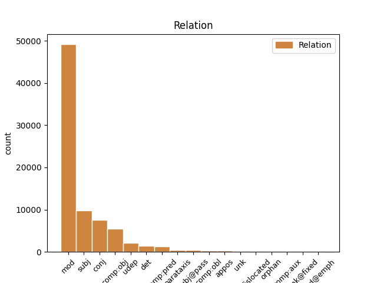
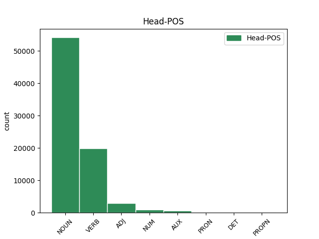
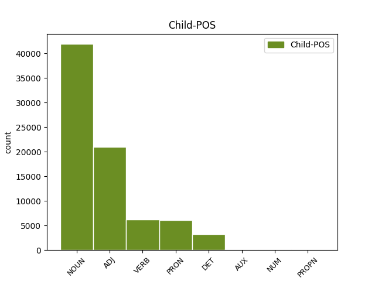

Distribution of features within this leaf



Agreement Rules sorted by frequency.
- When the dependent token is the modifer(mod) of the head token, and the dependent token is NOUN.
1 و _ _ _ _ 0 _ _ _
2 قال _ _ _ _ 0 _ _ _
3 باول _ _ _ _ 0 _ _ _
4 خلال _ _ _ _ 0 _ _ _
5 مؤتمر _ _ _ _ 0 _ _ _
6 صحفى _ _ _ _ 0 _ _ _
7 مشترك _ _ _ _ 0 _ _ _
8 مع _ _ _ _ 0 _ _ _
9 رئيس _ _ _ _ 0 _ _ _
10 الوزراء _ _ _ _ 0 _ _ _
11 الفلسطينى _ _ _ _ 0 _ _ _
12 أبو _ _ _ _ 0 _ _ _
13 مازن _ _ _ _ 0 _ _ _
14 عقب _ _ _ _ 0 _ _ _
15 اجتماع _ _ _ _ 0 _ _ _
16 هما _ _ _ _ 0 _ _ _
17 فى _ _ _ _ 0 _ _ _
18 أريحا _ _ _ _ 0 _ _ _
19 فى _ _ _ _ 0 _ _ _
20 الضفة _ _ _ _ 0 _ _ _
21 الغربية _ _ _ _ 0 _ _ _
22 أن _ _ _ _ 0 _ _ _
23 " _ _ _ _ 0 _ _ _
24 على _ _ _ _ 0 _ _ _
25 الحكومة _ _ _ _ 0 _ _ _
26 الفلسطينية _ _ _ _ 0 _ _ _
27 وضع _ _ _ _ 0 _ _ _
28 حد _ _ _ _ 0 _ _ _
29 ل _ _ _ _ 0 _ _ _
30 الإرهاب _ _ _ _ 0 _ _ _
31 و _ _ _ _ 0 _ _ _
32 تفكيك تَفكِيك NOUN N------S1R Case=Nom|Definite=Cons|Number=Sing 0 _ _ _
33 بنية بِنيَة NOUN N------S1R Case=Nom|Definite=Cons|Number=Sing 32 mod _ Gloss=make_-_up,structure|LTranslit=binyat|Root=b_n_y|Translit=binyatu|Vform=بِنيَةُ
34 ه _ _ _ _ 0 _ _ _
35 التحتية _ _ _ _ 0 _ _ _
36 " _ _ _ _ 0 _ _ _
37 . _ _ _ _ 0 _ _ _
1 و _ _ _ _ 0 _ _ _
2 قال _ _ _ _ 0 _ _ _
3 باول _ _ _ _ 0 _ _ _
4 خلال _ _ _ _ 0 _ _ _
5 مؤتمر _ _ _ _ 0 _ _ _
6 صحفى _ _ _ _ 0 _ _ _
7 مشترك _ _ _ _ 0 _ _ _
8 مع _ _ _ _ 0 _ _ _
9 رئيس _ _ _ _ 0 _ _ _
10 الوزراء _ _ _ _ 0 _ _ _
11 الفلسطينى _ _ _ _ 0 _ _ _
12 أبو _ _ _ _ 0 _ _ _
13 مازن _ _ _ _ 0 _ _ _
14 عقب _ _ _ _ 0 _ _ _
15 اجتماع _ _ _ _ 0 _ _ _
16 هما _ _ _ _ 0 _ _ _
17 فى _ _ _ _ 0 _ _ _
18 أريحا _ _ _ _ 0 _ _ _
19 فى _ _ _ _ 0 _ _ _
20 الضفة _ _ _ _ 0 _ _ _
21 الغربية _ _ _ _ 0 _ _ _
22 أن _ _ _ _ 0 _ _ _
23 " _ _ _ _ 0 _ _ _
24 على _ _ _ _ 0 _ _ _
25 الحكومة _ _ _ _ 0 _ _ _
26 الفلسطينية _ _ _ _ 0 _ _ _
27 وضع _ _ _ _ 0 _ _ _
28 حد _ _ _ _ 0 _ _ _
29 ل _ _ _ _ 0 _ _ _
30 الإرهاب _ _ _ _ 0 _ _ _
31 و _ _ _ _ 0 _ _ _
32 تفكيك _ _ _ _ 0 _ _ _
33 بنية بِنيَة NOUN N------S1R Case=Nom|Definite=Cons|Number=Sing 0 _ _ _
34 ه _ _ _ _ 0 _ _ _
35 التحتية تَحتِيّ ADJ A-----FS2D Case=Gen|Definite=Def|Gender=Fem|Number=Sing 33 mod _ Gloss=infra_-,lower,sub_-|LTranslit=taḥtīy|Root=t_.h_t|SpaceAfter=No|Translit=at-taḥtīyati|Vform=اَلتَّحتِيَّةِ
36 " _ _ _ _ 0 _ _ _
37 . _ _ _ _ 0 _ _ _
1 و _ _ _ _ 0 _ _ _
2 أكد _ _ _ _ 0 _ _ _
3 شعث _ _ _ _ 0 _ _ _
4 فى _ _ _ _ 0 _ _ _
5 الاتصال _ _ _ _ 0 _ _ _
6 على _ _ _ _ 0 _ _ _
7 ضرورة _ _ _ _ 0 _ _ _
8 قبول _ _ _ _ 0 _ _ _
9 الجانب _ _ _ _ 0 _ _ _
10 الإسرائيلى _ _ _ _ 0 _ _ _
11 الخطة _ _ _ _ 0 _ _ _
12 بدون _ _ _ _ 0 _ _ _
13 تعديل _ _ _ _ 0 _ _ _
14 من _ _ _ _ 0 _ _ _
15 اجل _ _ _ _ 0 _ _ _
16 الاسراع _ _ _ _ 0 _ _ _
17 فى _ _ _ _ 0 _ _ _
18 تنفيذ _ _ _ _ 0 _ _ _
19 ها _ _ _ _ 0 _ _ _
20 على _ _ _ _ 0 _ _ _
21 الواقع _ _ _ _ 0 _ _ _
22 موضحا _ _ _ _ 0 _ _ _
23 ان _ _ _ _ 0 _ _ _
24 الجانب جَانِب NOUN N------S4D Case=Acc|Definite=Def|Number=Sing 26 subj _ Gloss=aspect,side|LTranslit=ǧānib|Root=^g_n_b|Translit=al-ǧāniba|Vform=اَلجَانِبَ
25 الفلسطينى _ _ _ _ 0 _ _ _
26 يعلق عَلَّق VERB VIIA-3MS-- Aspect=Imp|Gender=Masc|Mood=Ind|Number=Sing|Person=3|VerbForm=Fin|Voice=Act 0 _ _ _
27 آمالا _ _ _ _ 0 _ _ _
28 على _ _ _ _ 0 _ _ _
29 لقاء _ _ _ _ 0 _ _ _
30 الرئيس _ _ _ _ 0 _ _ _
31 المصرى _ _ _ _ 0 _ _ _
32 حسنى _ _ _ _ 0 _ _ _
33 مبارك _ _ _ _ 0 _ _ _
34 مع _ _ _ _ 0 _ _ _
35 باول _ _ _ _ 0 _ _ _
36 غدا _ _ _ _ 0 _ _ _
37 الاحد _ _ _ _ 0 _ _ _
38 . _ _ _ _ 0 _ _ _
1 و _ _ _ _ 0 _ _ _
2 قال _ _ _ _ 0 _ _ _
3 باول _ _ _ _ 0 _ _ _
4 خلال _ _ _ _ 0 _ _ _
5 مؤتمر _ _ _ _ 0 _ _ _
6 صحفى _ _ _ _ 0 _ _ _
7 مشترك _ _ _ _ 0 _ _ _
8 مع _ _ _ _ 0 _ _ _
9 رئيس _ _ _ _ 0 _ _ _
10 الوزراء _ _ _ _ 0 _ _ _
11 الفلسطينى _ _ _ _ 0 _ _ _
12 أبو _ _ _ _ 0 _ _ _
13 مازن _ _ _ _ 0 _ _ _
14 عقب _ _ _ _ 0 _ _ _
15 اجتماع _ _ _ _ 0 _ _ _
16 هما _ _ _ _ 0 _ _ _
17 فى _ _ _ _ 0 _ _ _
18 أريحا _ _ _ _ 0 _ _ _
19 فى _ _ _ _ 0 _ _ _
20 الضفة _ _ _ _ 0 _ _ _
21 الغربية _ _ _ _ 0 _ _ _
22 أن _ _ _ _ 0 _ _ _
23 " _ _ _ _ 0 _ _ _
24 على _ _ _ _ 0 _ _ _
25 الحكومة _ _ _ _ 0 _ _ _
26 الفلسطينية _ _ _ _ 0 _ _ _
27 وضع وَضع NOUN N------S1R Case=Nom|Definite=Cons|Number=Sing 0 _ _ _
28 حد _ _ _ _ 0 _ _ _
29 ل _ _ _ _ 0 _ _ _
30 الإرهاب _ _ _ _ 0 _ _ _
31 و _ _ _ _ 0 _ _ _
32 تفكيك تَفكِيك NOUN N------S1R Case=Nom|Definite=Cons|Number=Sing 27 conj _ Gloss=dismantling,dismemberment,fragmentation|LTranslit=tafkīk|Root=f_k_k|Translit=tafkīku|Vform=تَفكِيكُ
33 بنية _ _ _ _ 0 _ _ _
34 ه _ _ _ _ 0 _ _ _
35 التحتية _ _ _ _ 0 _ _ _
36 " _ _ _ _ 0 _ _ _
37 . _ _ _ _ 0 _ _ _
1 و _ _ _ _ 0 _ _ _
2 قال _ _ _ _ 0 _ _ _
3 باول _ _ _ _ 0 _ _ _
4 خلال _ _ _ _ 0 _ _ _
5 مؤتمر _ _ _ _ 0 _ _ _
6 صحفى _ _ _ _ 0 _ _ _
7 مشترك _ _ _ _ 0 _ _ _
8 مع _ _ _ _ 0 _ _ _
9 رئيس _ _ _ _ 0 _ _ _
10 الوزراء _ _ _ _ 0 _ _ _
11 الفلسطينى _ _ _ _ 0 _ _ _
12 أبو _ _ _ _ 0 _ _ _
13 مازن _ _ _ _ 0 _ _ _
14 عقب _ _ _ _ 0 _ _ _
15 اجتماع _ _ _ _ 0 _ _ _
16 هما _ _ _ _ 0 _ _ _
17 فى _ _ _ _ 0 _ _ _
18 أريحا _ _ _ _ 0 _ _ _
19 فى _ _ _ _ 0 _ _ _
20 الضفة _ _ _ _ 0 _ _ _
21 الغربية _ _ _ _ 0 _ _ _
22 أن _ _ _ _ 0 _ _ _
23 " _ _ _ _ 0 _ _ _
24 على _ _ _ _ 0 _ _ _
25 الحكومة _ _ _ _ 0 _ _ _
26 الفلسطينية _ _ _ _ 0 _ _ _
27 وضع _ _ _ _ 0 _ _ _
28 حد _ _ _ _ 0 _ _ _
29 ل _ _ _ _ 0 _ _ _
30 الإرهاب _ _ _ _ 0 _ _ _
31 و _ _ _ _ 0 _ _ _
32 تفكيك _ _ _ _ 0 _ _ _
33 بنية بِنيَة NOUN N------S1R Case=Nom|Definite=Cons|Number=Sing 0 _ _ _
34 ه هُوَ PRON SP---3MS2- Case=Gen|Gender=Masc|Number=Sing|Person=3|PronType=Prs 33 mod _ Gloss=he,it,she|LTranslit=huwa|Translit=hu|Vform=هُ
35 التحتية _ _ _ _ 0 _ _ _
36 " _ _ _ _ 0 _ _ _
37 . _ _ _ _ 0 _ _ _
1 و _ _ _ _ 0 _ _ _
2 طالب طَالَب VERB VP-A-3MS-- Aspect=Perf|Gender=Masc|Number=Sing|Person=3|Voice=Act 0 _ _ _
3 باول _ _ _ _ 0 _ _ _
4 اليوم _ _ _ _ 0 _ _ _
5 الحكومة حُكُومَة NOUN N------S4D Case=Acc|Definite=Def|Number=Sing 2 comp:obj _ Gloss=administration,government|LTranslit=ḥukūmat|Root=.h_k_m|Translit=al-ḥukūmata|Vform=اَلحُكُومَةَ
6 الفلسطينية _ _ _ _ 0 _ _ _
7 الجديدة _ _ _ _ 0 _ _ _
8 ب _ _ _ _ 0 _ _ _
9 محاربة _ _ _ _ 0 _ _ _
10 البنية _ _ _ _ 0 _ _ _
11 التحتية _ _ _ _ 0 _ _ _
12 ل _ _ _ _ 0 _ _ _
13 الإرهاب _ _ _ _ 0 _ _ _
14 و _ _ _ _ 0 _ _ _
15 نزع _ _ _ _ 0 _ _ _
16 أسلحة _ _ _ _ 0 _ _ _
17 المنظمات _ _ _ _ 0 _ _ _
18 الفلسطينية _ _ _ _ 0 _ _ _
19 . _ _ _ _ 0 _ _ _
1 و _ _ _ _ 0 _ _ _
2 قالت _ _ _ _ 0 _ _ _
3 وكالة _ _ _ _ 0 _ _ _
4 انباء _ _ _ _ 0 _ _ _
5 الشرق _ _ _ _ 0 _ _ _
6 الاوسط _ _ _ _ 0 _ _ _
7 المصرية _ _ _ _ 0 _ _ _
8 ان _ _ _ _ 0 _ _ _
9 شعث _ _ _ _ 0 _ _ _
10 ابلغ _ _ _ _ 0 _ _ _
11 ماهر _ _ _ _ 0 _ _ _
12 نتائج _ _ _ _ 0 _ _ _
13 المحادثات _ _ _ _ 0 _ _ _
14 التى _ _ _ _ 0 _ _ _
15 أجرا _ _ _ _ 0 _ _ _
16 ها _ _ _ _ 0 _ _ _
17 باول _ _ _ _ 0 _ _ _
18 مع _ _ _ _ 0 _ _ _
19 رئيس _ _ _ _ 0 _ _ _
20 الوزراء _ _ _ _ 0 _ _ _
21 الفلسطينى _ _ _ _ 0 _ _ _
22 محمود _ _ _ _ 0 _ _ _
23 عباس _ _ _ _ 0 _ _ _
24 / _ _ _ _ 0 _ _ _
25 أبو _ _ _ _ 0 _ _ _
26 مازن _ _ _ _ 0 _ _ _
27 / _ _ _ _ 0 _ _ _
28 فى _ _ _ _ 0 _ _ _
29 اريحا _ _ _ _ 0 _ _ _
30 فى _ _ _ _ 0 _ _ _
31 وقت _ _ _ _ 0 _ _ _
32 سابق _ _ _ _ 0 _ _ _
33 من _ _ _ _ 0 _ _ _
34 اليوم _ _ _ _ 0 _ _ _
35 حيث _ _ _ _ 0 _ _ _
36 اكد _ _ _ _ 0 _ _ _
37 الجانب _ _ _ _ 0 _ _ _
38 الفلسطينى _ _ _ _ 0 _ _ _
39 على _ _ _ _ 0 _ _ _
40 موقف _ _ _ _ 0 _ _ _
41 ه _ _ _ _ 0 _ _ _
42 الثابت _ _ _ _ 0 _ _ _
43 إزاء _ _ _ _ 0 _ _ _
44 خريطة _ _ _ _ 0 _ _ _
45 الطريق _ _ _ _ 0 _ _ _
46 ، _ _ _ _ 0 _ _ _
47 الخطة خُطَّة NOUN N------S2D Case=Gen|Definite=Def|Number=Sing 0 _ _ _
48 السلمية _ _ _ _ 0 _ _ _
49 التى _ _ _ _ 0 _ _ _
50 أعدت أَعَدّ VERB VP-A-3FS-- Aspect=Perf|Gender=Fem|Number=Sing|Person=3|Voice=Act 47 mod _ Gloss=make_ready,prepare|LTranslit=ʾaʿadd|Root=`_d_d|Translit=ʾaʿaddat|Vform=أَعَدَّت
51 ها _ _ _ _ 0 _ _ _
52 الولايات _ _ _ _ 0 _ _ _
53 المتحدة _ _ _ _ 0 _ _ _
54 ل _ _ _ _ 0 _ _ _
55 إحلال _ _ _ _ 0 _ _ _
56 السلام _ _ _ _ 0 _ _ _
57 فى _ _ _ _ 0 _ _ _
58 المنطقة _ _ _ _ 0 _ _ _
59 و _ _ _ _ 0 _ _ _
60 إقامة _ _ _ _ 0 _ _ _
61 دولة _ _ _ _ 0 _ _ _
62 فلسطينية _ _ _ _ 0 _ _ _
63 مستقلة _ _ _ _ 0 _ _ _
64 عام _ _ _ _ 0 _ _ _
65 2005 _ _ _ _ 0 _ _ _
66 ب _ _ _ _ 0 _ _ _
67 جانب _ _ _ _ 0 _ _ _
68 إسرائيل _ _ _ _ 0 _ _ _
69 . _ _ _ _ 0 _ _ _
1 و _ _ _ _ 0 _ _ _
2 قالت _ _ _ _ 0 _ _ _
3 وكالة _ _ _ _ 0 _ _ _
4 انباء _ _ _ _ 0 _ _ _
5 الشرق _ _ _ _ 0 _ _ _
6 الاوسط _ _ _ _ 0 _ _ _
7 المصرية _ _ _ _ 0 _ _ _
8 ان _ _ _ _ 0 _ _ _
9 شعث _ _ _ _ 0 _ _ _
10 ابلغ أَبلَغ VERB VP-A-3MS-- Aspect=Perf|Gender=Masc|Number=Sing|Person=3|Voice=Act 0 _ _ _
11 ماهر _ _ _ _ 0 _ _ _
12 نتائج _ _ _ _ 0 _ _ _
13 المحادثات _ _ _ _ 0 _ _ _
14 التى _ _ _ _ 0 _ _ _
15 أجرا _ _ _ _ 0 _ _ _
16 ها _ _ _ _ 0 _ _ _
17 باول _ _ _ _ 0 _ _ _
18 مع _ _ _ _ 0 _ _ _
19 رئيس _ _ _ _ 0 _ _ _
20 الوزراء _ _ _ _ 0 _ _ _
21 الفلسطينى _ _ _ _ 0 _ _ _
22 محمود _ _ _ _ 0 _ _ _
23 عباس _ _ _ _ 0 _ _ _
24 / _ _ _ _ 0 _ _ _
25 أبو _ _ _ _ 0 _ _ _
26 مازن _ _ _ _ 0 _ _ _
27 / _ _ _ _ 0 _ _ _
28 فى _ _ _ _ 0 _ _ _
29 اريحا _ _ _ _ 0 _ _ _
30 فى _ _ _ _ 0 _ _ _
31 وقت _ _ _ _ 0 _ _ _
32 سابق _ _ _ _ 0 _ _ _
33 من _ _ _ _ 0 _ _ _
34 اليوم _ _ _ _ 0 _ _ _
35 حيث _ _ _ _ 0 _ _ _
36 اكد أَكَّد VERB VP-A-3MS-- Aspect=Perf|Gender=Masc|Number=Sing|Person=3|Voice=Act 10 conj _ Gloss=affirm,assure,confirm,emphasize,guarantee|LTranslit=ʾakkad|Root='_k_d|Translit=ʾakkada|Vform=أَكَّدَ
37 الجانب _ _ _ _ 0 _ _ _
38 الفلسطينى _ _ _ _ 0 _ _ _
39 على _ _ _ _ 0 _ _ _
40 موقف _ _ _ _ 0 _ _ _
41 ه _ _ _ _ 0 _ _ _
42 الثابت _ _ _ _ 0 _ _ _
43 إزاء _ _ _ _ 0 _ _ _
44 خريطة _ _ _ _ 0 _ _ _
45 الطريق _ _ _ _ 0 _ _ _
46 ، _ _ _ _ 0 _ _ _
47 الخطة _ _ _ _ 0 _ _ _
48 السلمية _ _ _ _ 0 _ _ _
49 التى _ _ _ _ 0 _ _ _
50 أعدت _ _ _ _ 0 _ _ _
51 ها _ _ _ _ 0 _ _ _
52 الولايات _ _ _ _ 0 _ _ _
53 المتحدة _ _ _ _ 0 _ _ _
54 ل _ _ _ _ 0 _ _ _
55 إحلال _ _ _ _ 0 _ _ _
56 السلام _ _ _ _ 0 _ _ _
57 فى _ _ _ _ 0 _ _ _
58 المنطقة _ _ _ _ 0 _ _ _
59 و _ _ _ _ 0 _ _ _
60 إقامة _ _ _ _ 0 _ _ _
61 دولة _ _ _ _ 0 _ _ _
62 فلسطينية _ _ _ _ 0 _ _ _
63 مستقلة _ _ _ _ 0 _ _ _
64 عام _ _ _ _ 0 _ _ _
65 2005 _ _ _ _ 0 _ _ _
66 ب _ _ _ _ 0 _ _ _
67 جانب _ _ _ _ 0 _ _ _
68 إسرائيل _ _ _ _ 0 _ _ _
69 . _ _ _ _ 0 _ _ _
1 و _ _ _ _ 0 _ _ _
2 قالت _ _ _ _ 0 _ _ _
3 وكالة _ _ _ _ 0 _ _ _
4 انباء _ _ _ _ 0 _ _ _
5 الشرق _ _ _ _ 0 _ _ _
6 الاوسط _ _ _ _ 0 _ _ _
7 المصرية _ _ _ _ 0 _ _ _
8 ان _ _ _ _ 0 _ _ _
9 شعث _ _ _ _ 0 _ _ _
10 ابلغ _ _ _ _ 0 _ _ _
11 ماهر _ _ _ _ 0 _ _ _
12 نتائج _ _ _ _ 0 _ _ _
13 المحادثات _ _ _ _ 0 _ _ _
14 التى _ _ _ _ 0 _ _ _
15 أجرا _ _ _ _ 0 _ _ _
16 ها _ _ _ _ 0 _ _ _
17 باول _ _ _ _ 0 _ _ _
18 مع _ _ _ _ 0 _ _ _
19 رئيس _ _ _ _ 0 _ _ _
20 الوزراء _ _ _ _ 0 _ _ _
21 الفلسطينى _ _ _ _ 0 _ _ _
22 محمود _ _ _ _ 0 _ _ _
23 عباس _ _ _ _ 0 _ _ _
24 / _ _ _ _ 0 _ _ _
25 أبو _ _ _ _ 0 _ _ _
26 مازن _ _ _ _ 0 _ _ _
27 / _ _ _ _ 0 _ _ _
28 فى _ _ _ _ 0 _ _ _
29 اريحا _ _ _ _ 0 _ _ _
30 فى _ _ _ _ 0 _ _ _
31 وقت _ _ _ _ 0 _ _ _
32 سابق _ _ _ _ 0 _ _ _
33 من _ _ _ _ 0 _ _ _
34 اليوم _ _ _ _ 0 _ _ _
35 حيث _ _ _ _ 0 _ _ _
36 اكد _ _ _ _ 0 _ _ _
37 الجانب _ _ _ _ 0 _ _ _
38 الفلسطينى _ _ _ _ 0 _ _ _
39 على _ _ _ _ 0 _ _ _
40 موقف _ _ _ _ 0 _ _ _
41 ه _ _ _ _ 0 _ _ _
42 الثابت _ _ _ _ 0 _ _ _
43 إزاء _ _ _ _ 0 _ _ _
44 خريطة _ _ _ _ 0 _ _ _
45 الطريق _ _ _ _ 0 _ _ _
46 ، _ _ _ _ 0 _ _ _
47 الخطة _ _ _ _ 0 _ _ _
48 السلمية _ _ _ _ 0 _ _ _
49 التى اَلَّذِي DET SR----FS2- Case=Gen|Gender=Fem|Number=Sing|PronType=Rel 50 subj _ Gloss=that,which|LTranslit=allaḏī|Root=l|Translit=allatī|Vform=اَلَّتِي
50 أعدت أَعَدّ VERB VP-A-3FS-- Aspect=Perf|Gender=Fem|Number=Sing|Person=3|Voice=Act 0 _ _ _
51 ها _ _ _ _ 0 _ _ _
52 الولايات _ _ _ _ 0 _ _ _
53 المتحدة _ _ _ _ 0 _ _ _
54 ل _ _ _ _ 0 _ _ _
55 إحلال _ _ _ _ 0 _ _ _
56 السلام _ _ _ _ 0 _ _ _
57 فى _ _ _ _ 0 _ _ _
58 المنطقة _ _ _ _ 0 _ _ _
59 و _ _ _ _ 0 _ _ _
60 إقامة _ _ _ _ 0 _ _ _
61 دولة _ _ _ _ 0 _ _ _
62 فلسطينية _ _ _ _ 0 _ _ _
63 مستقلة _ _ _ _ 0 _ _ _
64 عام _ _ _ _ 0 _ _ _
65 2005 _ _ _ _ 0 _ _ _
66 ب _ _ _ _ 0 _ _ _
67 جانب _ _ _ _ 0 _ _ _
68 إسرائيل _ _ _ _ 0 _ _ _
69 . _ _ _ _ 0 _ _ _
1 و _ _ _ _ 0 _ _ _
2 طالب طَالَب VERB VP-A-3MS-- Aspect=Perf|Gender=Masc|Number=Sing|Person=3|Voice=Act 0 _ _ _
3 باول _ _ _ _ 0 _ _ _
4 اليوم يَوم NOUN N------S4D Case=Acc|Definite=Def|Number=Sing 2 udep _ Gloss=day,today|LTranslit=yawm|Root=y_w_m|Translit=al-yawma|Vform=اَليَومَ
5 الحكومة _ _ _ _ 0 _ _ _
6 الفلسطينية _ _ _ _ 0 _ _ _
7 الجديدة _ _ _ _ 0 _ _ _
8 ب _ _ _ _ 0 _ _ _
9 محاربة _ _ _ _ 0 _ _ _
10 البنية _ _ _ _ 0 _ _ _
11 التحتية _ _ _ _ 0 _ _ _
12 ل _ _ _ _ 0 _ _ _
13 الإرهاب _ _ _ _ 0 _ _ _
14 و _ _ _ _ 0 _ _ _
15 نزع _ _ _ _ 0 _ _ _
16 أسلحة _ _ _ _ 0 _ _ _
17 المنظمات _ _ _ _ 0 _ _ _
18 الفلسطينية _ _ _ _ 0 _ _ _
19 . _ _ _ _ 0 _ _ _
1 و _ _ _ _ 0 _ _ _
2 قال _ _ _ _ 0 _ _ _
3 نيه _ _ _ _ 0 _ _ _
4 جون _ _ _ _ 0 _ _ _
5 عضو _ _ _ _ 0 _ _ _
6 فريق _ _ _ _ 0 _ _ _
7 خبراء _ _ _ _ 0 _ _ _
8 مكافحة _ _ _ _ 0 _ _ _
9 سارس _ _ _ _ 0 _ _ _
10 التابع _ _ _ _ 0 _ _ _
11 ل _ _ _ _ 0 _ _ _
12 وزارة _ _ _ _ 0 _ _ _
13 الصحة _ _ _ _ 0 _ _ _
14 إن _ _ _ _ 0 _ _ _
15 ه _ _ _ _ 0 _ _ _
16 إلى _ _ _ _ 0 _ _ _
17 جانب _ _ _ _ 0 _ _ _
18 بكين _ _ _ _ 0 _ _ _
19 تضررت _ _ _ _ 0 _ _ _
20 مناطق _ _ _ _ 0 _ _ _
21 اخرى _ _ _ _ 0 _ _ _
22 مثل _ _ _ _ 0 _ _ _
23 شانشى _ _ _ _ 0 _ _ _
24 و _ _ _ _ 0 _ _ _
25 منغوليا _ _ _ _ 0 _ _ _
26 الداخلية _ _ _ _ 0 _ _ _
27 وخيبى _ _ _ _ 0 _ _ _
28 وتيانجين _ _ _ _ 0 _ _ _
29 فى _ _ _ _ 0 _ _ _
30 شمالى _ _ _ _ 0 _ _ _
31 الصين _ _ _ _ 0 _ _ _
32 ب _ _ _ _ 0 _ _ _
33 هٰذا هٰذَا DET SD----MS2- Case=Gen|Gender=Masc|Number=Sing|PronType=Dem 34 det _ Gloss=these,this|LTranslit=hāḏā|Root=h|Translit=hāḏā|Vform=هٰذَا
34 الوباء وَبَاء NOUN N------S2D Case=Gen|Definite=Def|Number=Sing 0 _ _ _
35 ب _ _ _ _ 0 _ _ _
36 شكل _ _ _ _ 0 _ _ _
37 حاد _ _ _ _ 0 _ _ _
38 . _ _ _ _ 0 _ _ _
39 و _ _ _ _ 0 _ _ _
40 أضاف _ _ _ _ 0 _ _ _
41 أن _ _ _ _ 0 _ _ _
42 ه _ _ _ _ 0 _ _ _
43 تم _ _ _ _ 0 _ _ _
44 اكتشاف _ _ _ _ 0 _ _ _
45 66.5 _ _ _ _ 0 _ _ _
46 فى _ _ _ _ 0 _ _ _
47 المائة _ _ _ _ 0 _ _ _
48 من _ _ _ _ 0 _ _ _
49 إجمالى _ _ _ _ 0 _ _ _
50 حالات _ _ _ _ 0 _ _ _
51 سارس _ _ _ _ 0 _ _ _
52 فى _ _ _ _ 0 _ _ _
53 البر _ _ _ _ 0 _ _ _
54 الرئيسى _ _ _ _ 0 _ _ _
55 ب _ _ _ _ 0 _ _ _
56 المناطق _ _ _ _ 0 _ _ _
57 الخمس _ _ _ _ 0 _ _ _
58 السابق _ _ _ _ 0 _ _ _
59 ذكر _ _ _ _ 0 _ _ _
60 ها _ _ _ _ 0 _ _ _
61 . _ _ _ _ 0 _ _ _
1 و _ _ _ _ 0 _ _ _
2 قالت _ _ _ _ 0 _ _ _
3 وكالة _ _ _ _ 0 _ _ _
4 انباء _ _ _ _ 0 _ _ _
5 الشرق _ _ _ _ 0 _ _ _
6 الاوسط _ _ _ _ 0 _ _ _
7 المصرية _ _ _ _ 0 _ _ _
8 ان _ _ _ _ 0 _ _ _
9 شعث _ _ _ _ 0 _ _ _
10 ابلغ _ _ _ _ 0 _ _ _
11 ماهر _ _ _ _ 0 _ _ _
12 نتائج _ _ _ _ 0 _ _ _
13 المحادثات _ _ _ _ 0 _ _ _
14 التى _ _ _ _ 0 _ _ _
15 أجرا _ _ _ _ 0 _ _ _
16 ها _ _ _ _ 0 _ _ _
17 باول _ _ _ _ 0 _ _ _
18 مع _ _ _ _ 0 _ _ _
19 رئيس _ _ _ _ 0 _ _ _
20 الوزراء _ _ _ _ 0 _ _ _
21 الفلسطينى _ _ _ _ 0 _ _ _
22 محمود _ _ _ _ 0 _ _ _
23 عباس _ _ _ _ 0 _ _ _
24 / _ _ _ _ 0 _ _ _
25 أبو _ _ _ _ 0 _ _ _
26 مازن _ _ _ _ 0 _ _ _
27 / _ _ _ _ 0 _ _ _
28 فى _ _ _ _ 0 _ _ _
29 اريحا _ _ _ _ 0 _ _ _
30 فى _ _ _ _ 0 _ _ _
31 وقت _ _ _ _ 0 _ _ _
32 سابق _ _ _ _ 0 _ _ _
33 من _ _ _ _ 0 _ _ _
34 اليوم _ _ _ _ 0 _ _ _
35 حيث _ _ _ _ 0 _ _ _
36 اكد _ _ _ _ 0 _ _ _
37 الجانب _ _ _ _ 0 _ _ _
38 الفلسطينى _ _ _ _ 0 _ _ _
39 على _ _ _ _ 0 _ _ _
40 موقف _ _ _ _ 0 _ _ _
41 ه _ _ _ _ 0 _ _ _
42 الثابت _ _ _ _ 0 _ _ _
43 إزاء _ _ _ _ 0 _ _ _
44 خريطة _ _ _ _ 0 _ _ _
45 الطريق _ _ _ _ 0 _ _ _
46 ، _ _ _ _ 0 _ _ _
47 الخطة _ _ _ _ 0 _ _ _
48 السلمية _ _ _ _ 0 _ _ _
49 التى _ _ _ _ 0 _ _ _
50 أعدت أَعَدّ VERB VP-A-3FS-- Aspect=Perf|Gender=Fem|Number=Sing|Person=3|Voice=Act 0 _ _ _
51 ها هُوَ PRON SP---3FS4- Case=Acc|Gender=Fem|Number=Sing|Person=3|PronType=Prs 50 comp:obj _ Gloss=he,it,she|LTranslit=huwa|Translit=hā|Vform=هَا
52 الولايات _ _ _ _ 0 _ _ _
53 المتحدة _ _ _ _ 0 _ _ _
54 ل _ _ _ _ 0 _ _ _
55 إحلال _ _ _ _ 0 _ _ _
56 السلام _ _ _ _ 0 _ _ _
57 فى _ _ _ _ 0 _ _ _
58 المنطقة _ _ _ _ 0 _ _ _
59 و _ _ _ _ 0 _ _ _
60 إقامة _ _ _ _ 0 _ _ _
61 دولة _ _ _ _ 0 _ _ _
62 فلسطينية _ _ _ _ 0 _ _ _
63 مستقلة _ _ _ _ 0 _ _ _
64 عام _ _ _ _ 0 _ _ _
65 2005 _ _ _ _ 0 _ _ _
66 ب _ _ _ _ 0 _ _ _
67 جانب _ _ _ _ 0 _ _ _
68 إسرائيل _ _ _ _ 0 _ _ _
69 . _ _ _ _ 0 _ _ _
1 و _ _ _ _ 0 _ _ _
2 أشار _ _ _ _ 0 _ _ _
3 العيار _ _ _ _ 0 _ _ _
4 الى _ _ _ _ 0 _ _ _
5 استمرار _ _ _ _ 0 _ _ _
6 المساعدات _ _ _ _ 0 _ _ _
7 و _ _ _ _ 0 _ _ _
8 في _ _ _ _ 0 _ _ _
9 جميع _ _ _ _ 0 _ _ _
10 المجالات _ _ _ _ 0 _ _ _
11 الغذائية _ _ _ _ 0 _ _ _
12 و _ _ _ _ 0 _ _ _
13 الدوائية دَوَائِيّ ADJ A-----FS2D Case=Gen|Definite=Def|Gender=Fem|Number=Sing 0 _ _ _
14 و _ _ _ _ 0 _ _ _
15 الصحية صِحِّيّ ADJ A-----FS2D Case=Gen|Definite=Def|Gender=Fem|Number=Sing 13 conj _ Gloss=health,healthy,sanitary|LTranslit=ṣiḥḥīy|Root=.s_.h_.h|Translit=aṣ-ṣiḥḥīyati|Vform=اَلصِّحِّيَّةِ
16 و _ _ _ _ 0 _ _ _
17 غير _ _ _ _ 0 _ _ _
18 ها _ _ _ _ 0 _ _ _
19 موضحا _ _ _ _ 0 _ _ _
20 أن _ _ _ _ 0 _ _ _
21 ما _ _ _ _ 0 _ _ _
22 يتعلق _ _ _ _ 0 _ _ _
23 ب _ _ _ _ 0 _ _ _
24 وزارة _ _ _ _ 0 _ _ _
25 الكهرباء _ _ _ _ 0 _ _ _
26 و _ _ _ _ 0 _ _ _
27 الماء _ _ _ _ 0 _ _ _
28 ف _ _ _ _ 0 _ _ _
29 إن _ _ _ _ 0 _ _ _
30 ها _ _ _ _ 0 _ _ _
31 لا _ _ _ _ 0 _ _ _
32 تزال _ _ _ _ 0 _ _ _
33 تقدم _ _ _ _ 0 _ _ _
34 المياه _ _ _ _ 0 _ _ _
35 العذبة _ _ _ _ 0 _ _ _
36 الى _ _ _ _ 0 _ _ _
37 العراق _ _ _ _ 0 _ _ _
38 " _ _ _ _ 0 _ _ _
39 ف _ _ _ _ 0 _ _ _
40 هناك _ _ _ _ 0 _ _ _
41 أنبوب _ _ _ _ 0 _ _ _
42 يصب _ _ _ _ 0 _ _ _
43 يوميا _ _ _ _ 0 _ _ _
44 في _ _ _ _ 0 _ _ _
45 العراق _ _ _ _ 0 _ _ _
46 ب _ _ _ _ 0 _ _ _
47 طاقة _ _ _ _ 0 _ _ _
48 مليون _ _ _ _ 0 _ _ _
49 و _ _ _ _ 0 _ _ _
50 نصف _ _ _ _ 0 _ _ _
51 المليون _ _ _ _ 0 _ _ _
52 جالون _ _ _ _ 0 _ _ _
53 " _ _ _ _ 0 _ _ _
54 . _ _ _ _ 0 _ _ _
1 و _ _ _ _ 0 _ _ _
2 تردد _ _ _ _ 0 _ _ _
3 أن _ _ _ _ 0 _ _ _
4 هم هُوَ PRON SP---3MP4- Case=Acc|Gender=Masc|Number=Plur|Person=3|PronType=Prs 5 subj _ Gloss=he,it,she|LTranslit=huwa|Translit=hum|Vform=هُم
5 جلبوا جَلَب VERB VP-A-3MP-- Aspect=Perf|Gender=Masc|Number=Plur|Person=3|Voice=Act 0 _ _ _
6 مع _ _ _ _ 0 _ _ _
7 هم _ _ _ _ 0 _ _ _
8 المتفجرات _ _ _ _ 0 _ _ _
9 و _ _ _ _ 0 _ _ _
10 الذخيرة _ _ _ _ 0 _ _ _
11 لأن _ _ _ _ 0 _ _ _
12 ذلك _ _ _ _ 0 _ _ _
13 جزء _ _ _ _ 0 _ _ _
14 من _ _ _ _ 0 _ _ _
15 العادات _ _ _ _ 0 _ _ _
16 المتبعة _ _ _ _ 0 _ _ _
17 فى _ _ _ _ 0 _ _ _
18 قرية _ _ _ _ 0 _ _ _
19 هم _ _ _ _ 0 _ _ _
20 حيث _ _ _ _ 0 _ _ _
21 اعتاد _ _ _ _ 0 _ _ _
22 سكان _ _ _ _ 0 _ _ _
23 ها _ _ _ _ 0 _ _ _
24 اطلاق _ _ _ _ 0 _ _ _
25 النار _ _ _ _ 0 _ _ _
26 فى _ _ _ _ 0 _ _ _
27 الهواء _ _ _ _ 0 _ _ _
28 خلال _ _ _ _ 0 _ _ _
29 هذه _ _ _ _ 0 _ _ _
30 الاحتفالات _ _ _ _ 0 _ _ _
31 . _ _ _ _ 0 _ _ _
1 و _ _ _ _ 0 _ _ _
2 أكد أَكَّد VERB VP-A-3MS-- Aspect=Perf|Gender=Masc|Number=Sing|Person=3|Voice=Act 0 _ _ _
3 شعث _ _ _ _ 0 _ _ _
4 فى _ _ _ _ 0 _ _ _
5 الاتصال _ _ _ _ 0 _ _ _
6 على _ _ _ _ 0 _ _ _
7 ضرورة _ _ _ _ 0 _ _ _
8 قبول _ _ _ _ 0 _ _ _
9 الجانب _ _ _ _ 0 _ _ _
10 الإسرائيلى _ _ _ _ 0 _ _ _
11 الخطة _ _ _ _ 0 _ _ _
12 بدون _ _ _ _ 0 _ _ _
13 تعديل _ _ _ _ 0 _ _ _
14 من _ _ _ _ 0 _ _ _
15 اجل _ _ _ _ 0 _ _ _
16 الاسراع _ _ _ _ 0 _ _ _
17 فى _ _ _ _ 0 _ _ _
18 تنفيذ _ _ _ _ 0 _ _ _
19 ها _ _ _ _ 0 _ _ _
20 على _ _ _ _ 0 _ _ _
21 الواقع _ _ _ _ 0 _ _ _
22 موضحا مُوَضِّح ADJ A-----MS4I Case=Acc|Definite=Ind|Gender=Masc|Number=Sing 2 comp:pred _ Gloss=clarifying,explaining,indicating|LTranslit=muwaḍḍiḥ|Root=w_.d_.h|Translit=muwaḍḍiḥan|Vform=مُوَضِّحًا
23 ان _ _ _ _ 0 _ _ _
24 الجانب _ _ _ _ 0 _ _ _
25 الفلسطينى _ _ _ _ 0 _ _ _
26 يعلق _ _ _ _ 0 _ _ _
27 آمالا _ _ _ _ 0 _ _ _
28 على _ _ _ _ 0 _ _ _
29 لقاء _ _ _ _ 0 _ _ _
30 الرئيس _ _ _ _ 0 _ _ _
31 المصرى _ _ _ _ 0 _ _ _
32 حسنى _ _ _ _ 0 _ _ _
33 مبارك _ _ _ _ 0 _ _ _
34 مع _ _ _ _ 0 _ _ _
35 باول _ _ _ _ 0 _ _ _
36 غدا _ _ _ _ 0 _ _ _
37 الاحد _ _ _ _ 0 _ _ _
38 . _ _ _ _ 0 _ _ _
1 و _ _ _ _ 0 _ _ _
2 أشار _ _ _ _ 0 _ _ _
3 العيار _ _ _ _ 0 _ _ _
4 الى _ _ _ _ 0 _ _ _
5 استمرار _ _ _ _ 0 _ _ _
6 المساعدات _ _ _ _ 0 _ _ _
7 و _ _ _ _ 0 _ _ _
8 في _ _ _ _ 0 _ _ _
9 جميع _ _ _ _ 0 _ _ _
10 المجالات _ _ _ _ 0 _ _ _
11 الغذائية _ _ _ _ 0 _ _ _
12 و _ _ _ _ 0 _ _ _
13 الدوائية _ _ _ _ 0 _ _ _
14 و _ _ _ _ 0 _ _ _
15 الصحية _ _ _ _ 0 _ _ _
16 و _ _ _ _ 0 _ _ _
17 غير _ _ _ _ 0 _ _ _
18 ها _ _ _ _ 0 _ _ _
19 موضحا _ _ _ _ 0 _ _ _
20 أن _ _ _ _ 0 _ _ _
21 ما _ _ _ _ 0 _ _ _
22 يتعلق _ _ _ _ 0 _ _ _
23 ب _ _ _ _ 0 _ _ _
24 وزارة _ _ _ _ 0 _ _ _
25 الكهرباء _ _ _ _ 0 _ _ _
26 و _ _ _ _ 0 _ _ _
27 الماء _ _ _ _ 0 _ _ _
28 ف _ _ _ _ 0 _ _ _
29 إن _ _ _ _ 0 _ _ _
30 ها _ _ _ _ 0 _ _ _
31 لا _ _ _ _ 0 _ _ _
32 تزال _ _ _ _ 0 _ _ _
33 تقدم _ _ _ _ 0 _ _ _
34 المياه _ _ _ _ 0 _ _ _
35 العذبة _ _ _ _ 0 _ _ _
36 الى _ _ _ _ 0 _ _ _
37 العراق _ _ _ _ 0 _ _ _
38 " _ _ _ _ 0 _ _ _
39 ف _ _ _ _ 0 _ _ _
40 هناك _ _ _ _ 0 _ _ _
41 أنبوب _ _ _ _ 0 _ _ _
42 يصب صَبّ VERB VIIA-3MS-- Aspect=Imp|Gender=Masc|Mood=Ind|Number=Sing|Person=3|VerbForm=Fin|Voice=Act 0 _ _ _
43 يوميا يَومِيّ ADJ A-----MS4I Case=Acc|Definite=Ind|Gender=Masc|Number=Sing 42 udep _ Gloss=daily,on_a_daily_basis,per_diem|LTranslit=yawmīy|Root=y_w_m|Translit=yawmīyan|Vform=يَومِيًّا
44 في _ _ _ _ 0 _ _ _
45 العراق _ _ _ _ 0 _ _ _
46 ب _ _ _ _ 0 _ _ _
47 طاقة _ _ _ _ 0 _ _ _
48 مليون _ _ _ _ 0 _ _ _
49 و _ _ _ _ 0 _ _ _
50 نصف _ _ _ _ 0 _ _ _
51 المليون _ _ _ _ 0 _ _ _
52 جالون _ _ _ _ 0 _ _ _
53 " _ _ _ _ 0 _ _ _
54 . _ _ _ _ 0 _ _ _
1 و _ _ _ _ 0 _ _ _
2 أشار _ _ _ _ 0 _ _ _
3 العيار _ _ _ _ 0 _ _ _
4 الى _ _ _ _ 0 _ _ _
5 استمرار _ _ _ _ 0 _ _ _
6 المساعدات _ _ _ _ 0 _ _ _
7 و _ _ _ _ 0 _ _ _
8 في _ _ _ _ 0 _ _ _
9 جميع _ _ _ _ 0 _ _ _
10 المجالات _ _ _ _ 0 _ _ _
11 الغذائية _ _ _ _ 0 _ _ _
12 و _ _ _ _ 0 _ _ _
13 الدوائية _ _ _ _ 0 _ _ _
14 و _ _ _ _ 0 _ _ _
15 الصحية _ _ _ _ 0 _ _ _
16 و _ _ _ _ 0 _ _ _
17 غير _ _ _ _ 0 _ _ _
18 ها _ _ _ _ 0 _ _ _
19 موضحا _ _ _ _ 0 _ _ _
20 أن _ _ _ _ 0 _ _ _
21 ما _ _ _ _ 0 _ _ _
22 يتعلق _ _ _ _ 0 _ _ _
23 ب _ _ _ _ 0 _ _ _
24 وزارة _ _ _ _ 0 _ _ _
25 الكهرباء _ _ _ _ 0 _ _ _
26 و _ _ _ _ 0 _ _ _
27 الماء _ _ _ _ 0 _ _ _
28 ف _ _ _ _ 0 _ _ _
29 إن _ _ _ _ 0 _ _ _
30 ها _ _ _ _ 0 _ _ _
31 لا _ _ _ _ 0 _ _ _
32 تزال زَال VERB VIIA-3FS-- Aspect=Imp|Gender=Fem|Mood=Ind|Number=Sing|Person=3|VerbForm=Fin|Voice=Act 0 _ _ _
33 تقدم أَقدَم VERB VIJA-3FS-- Aspect=Imp|Gender=Fem|Mood=Jus|Number=Sing|Person=3|VerbForm=Fin|Voice=Act 32 comp:pred _ Gloss=approach,be_undertaken,tackle,undertake|LTranslit=ʾaqdam|Root=q_d_m|Translit=tuqdim|Vform=تُقدِم
34 المياه _ _ _ _ 0 _ _ _
35 العذبة _ _ _ _ 0 _ _ _
36 الى _ _ _ _ 0 _ _ _
37 العراق _ _ _ _ 0 _ _ _
38 " _ _ _ _ 0 _ _ _
39 ف _ _ _ _ 0 _ _ _
40 هناك _ _ _ _ 0 _ _ _
41 أنبوب _ _ _ _ 0 _ _ _
42 يصب _ _ _ _ 0 _ _ _
43 يوميا _ _ _ _ 0 _ _ _
44 في _ _ _ _ 0 _ _ _
45 العراق _ _ _ _ 0 _ _ _
46 ب _ _ _ _ 0 _ _ _
47 طاقة _ _ _ _ 0 _ _ _
48 مليون _ _ _ _ 0 _ _ _
49 و _ _ _ _ 0 _ _ _
50 نصف _ _ _ _ 0 _ _ _
51 المليون _ _ _ _ 0 _ _ _
52 جالون _ _ _ _ 0 _ _ _
53 " _ _ _ _ 0 _ _ _
54 . _ _ _ _ 0 _ _ _
1 قرر قَرَّر VERB VP-A-3MS-- Aspect=Perf|Gender=Masc|Number=Sing|Person=3|Voice=Act 0 _ _ _
2 مجلس _ _ _ _ 0 _ _ _
3 الوزراءالكويتي _ _ _ _ 0 _ _ _
4 اليوم _ _ _ _ 0 _ _ _
5 ارسال _ _ _ _ 0 _ _ _
6 ثمانى _ _ _ _ 0 _ _ _
7 وحدات _ _ _ _ 0 _ _ _
8 ل _ _ _ _ 0 _ _ _
9 تكرير _ _ _ _ 0 _ _ _
10 و _ _ _ _ 0 _ _ _
11 تحلية _ _ _ _ 0 _ _ _
12 المياه _ _ _ _ 0 _ _ _
13 الى _ _ _ _ 0 _ _ _
14 العراق _ _ _ _ 0 _ _ _
15 ل _ _ _ _ 0 _ _ _
16 توفير _ _ _ _ 0 _ _ _
17 المياه _ _ _ _ 0 _ _ _
18 الصالحة _ _ _ _ 0 _ _ _
19 ل _ _ _ _ 0 _ _ _
20 الشرب _ _ _ _ 0 _ _ _
21 ل _ _ _ _ 0 _ _ _
22 الشعب _ _ _ _ 0 _ _ _
23 العراقي _ _ _ _ 0 _ _ _
24 في _ _ _ _ 0 _ _ _
25 مبادرة _ _ _ _ 0 _ _ _
26 كويتية _ _ _ _ 0 _ _ _
27 ل _ _ _ _ 0 _ _ _
28 الحد _ _ _ _ 0 _ _ _
29 من _ _ _ _ 0 _ _ _
30 انتشار _ _ _ _ 0 _ _ _
31 مرض _ _ _ _ 0 _ _ _
32 الكوليرا _ _ _ _ 0 _ _ _
33 الذي _ _ _ _ 0 _ _ _
34 اكتشف _ _ _ _ 0 _ _ _
35 هناك _ _ _ _ 0 _ _ _
36 مؤخرا _ _ _ _ 0 _ _ _
37 . _ _ _ _ 0 _ _ _
38 جاء جَاء VERB VP-A-3MS-- Aspect=Perf|Gender=Masc|Number=Sing|Person=3|Voice=Act 1 parataxis _ Gloss=arrive,come,occur|LTranslit=ǧāʾ|Root=^g_y_'|Translit=ǧāʾa|Vform=جَاءَ
39 ذلك _ _ _ _ 0 _ _ _
40 فى _ _ _ _ 0 _ _ _
41 تصريح _ _ _ _ 0 _ _ _
42 خاص _ _ _ _ 0 _ _ _
43 ادلى _ _ _ _ 0 _ _ _
44 ب _ _ _ _ 0 _ _ _
45 ه _ _ _ _ 0 _ _ _
46 وزير _ _ _ _ 0 _ _ _
47 الكهرباء _ _ _ _ 0 _ _ _
48 و _ _ _ _ 0 _ _ _
49 الماء _ _ _ _ 0 _ _ _
50 و _ _ _ _ 0 _ _ _
51 وزير _ _ _ _ 0 _ _ _
52 الشؤون _ _ _ _ 0 _ _ _
53 الاجتماعية _ _ _ _ 0 _ _ _
54 و _ _ _ _ 0 _ _ _
55 العمل _ _ _ _ 0 _ _ _
56 الكويتى _ _ _ _ 0 _ _ _
57 طلال _ _ _ _ 0 _ _ _
58 العيار _ _ _ _ 0 _ _ _
59 ل _ _ _ _ 0 _ _ _
60 وكالة _ _ _ _ 0 _ _ _
61 الانباء _ _ _ _ 0 _ _ _
62 الكويتية _ _ _ _ 0 _ _ _
63 / _ _ _ _ 0 _ _ _
64 كونا _ _ _ _ 0 _ _ _
65 / _ _ _ _ 0 _ _ _
66 فى _ _ _ _ 0 _ _ _
67 اعقاب _ _ _ _ 0 _ _ _
68 الاجتماع _ _ _ _ 0 _ _ _
69 الاسبوعي _ _ _ _ 0 _ _ _
70 ل _ _ _ _ 0 _ _ _
71 مجلس _ _ _ _ 0 _ _ _
72 الوزراء _ _ _ _ 0 _ _ _
73 المنعقد _ _ _ _ 0 _ _ _
74 هنا _ _ _ _ 0 _ _ _
75 اليوم _ _ _ _ 0 _ _ _
76 . _ _ _ _ 0 _ _ _
1 يذكر _ _ _ _ 0 _ _ _
2 ان _ _ _ _ 0 _ _ _
3 بريمر _ _ _ _ 0 _ _ _
4 كان كَان VERB VP-A-3MS-- Aspect=Perf|Gender=Masc|Number=Sing|Person=3|Voice=Act 0 _ _ _
5 رئيسا رَئِيس NOUN N------S4I Case=Acc|Definite=Ind|Number=Sing 4 comp:pred _ Gloss=chairman,head,president|LTranslit=raʾīs|Root=r_'_s|Translit=raʾīsan|Vform=رَئِيسًا
6 سابقا _ _ _ _ 0 _ _ _
7 ل _ _ _ _ 0 _ _ _
8 إدارة _ _ _ _ 0 _ _ _
9 مكافحة _ _ _ _ 0 _ _ _
10 الارهاب _ _ _ _ 0 _ _ _
11 ب _ _ _ _ 0 _ _ _
12 وزارة _ _ _ _ 0 _ _ _
13 الخارجية _ _ _ _ 0 _ _ _
14 و _ _ _ _ 0 _ _ _
15 أعلن _ _ _ _ 0 _ _ _
16 الرئيس _ _ _ _ 0 _ _ _
17 الامريكي _ _ _ _ 0 _ _ _
18 جورج _ _ _ _ 0 _ _ _
19 بوش _ _ _ _ 0 _ _ _
20 تعيين _ _ _ _ 0 _ _ _
21 ه _ _ _ _ 0 _ _ _
22 في _ _ _ _ 0 _ _ _
23 منصب _ _ _ _ 0 _ _ _
24 ه _ _ _ _ 0 _ _ _
25 في _ _ _ _ 0 _ _ _
26 السادس _ _ _ _ 0 _ _ _
27 من _ _ _ _ 0 _ _ _
28 الشهر _ _ _ _ 0 _ _ _
29 الحالي _ _ _ _ 0 _ _ _
30 ل _ _ _ _ 0 _ _ _
31 الإشراف _ _ _ _ 0 _ _ _
32 على _ _ _ _ 0 _ _ _
33 جهود _ _ _ _ 0 _ _ _
34 واشنطن _ _ _ _ 0 _ _ _
35 ل _ _ _ _ 0 _ _ _
36 إنشاء _ _ _ _ 0 _ _ _
37 حكومة _ _ _ _ 0 _ _ _
38 ديمقراطية _ _ _ _ 0 _ _ _
39 في _ _ _ _ 0 _ _ _
40 العراق _ _ _ _ 0 _ _ _
41 و _ _ _ _ 0 _ _ _
42 إعادة _ _ _ _ 0 _ _ _
43 هيكلة _ _ _ _ 0 _ _ _
44 الاقتصاد _ _ _ _ 0 _ _ _
45 . _ _ _ _ 0 _ _ _
1 و _ _ _ _ 0 _ _ _
2 قالت _ _ _ _ 0 _ _ _
3 المستشارة _ _ _ _ 0 _ _ _
4 الامريكية _ _ _ _ 0 _ _ _
5 ان _ _ _ _ 0 _ _ _
6 اسرائيل _ _ _ _ 0 _ _ _
7 يتحتم _ _ _ _ 0 _ _ _
8 علي _ _ _ _ 0 _ _ _
9 ها _ _ _ _ 0 _ _ _
10 الرد _ _ _ _ 0 _ _ _
11 ب _ _ _ _ 0 _ _ _
12 شكل _ _ _ _ 0 _ _ _
13 ايجابى _ _ _ _ 0 _ _ _
14 على _ _ _ _ 0 _ _ _
15 المتغيرات _ _ _ _ 0 _ _ _
16 التى _ _ _ _ 0 _ _ _
17 طرأت _ _ _ _ 0 _ _ _
18 على _ _ _ _ 0 _ _ _
19 القيادة _ _ _ _ 0 _ _ _
20 الفلسطينية _ _ _ _ 0 _ _ _
21 و _ _ _ _ 0 _ _ _
22 ضمان _ _ _ _ 0 _ _ _
23 تحسين _ _ _ _ 0 _ _ _
24 الأوضاع _ _ _ _ 0 _ _ _
25 الانسانية _ _ _ _ 0 _ _ _
26 و _ _ _ _ 0 _ _ _
27 إعادة _ _ _ _ 0 _ _ _
28 حرية _ _ _ _ 0 _ _ _
29 الحركة _ _ _ _ 0 _ _ _
30 ل _ _ _ _ 0 _ _ _
31 الفلسطينيين _ _ _ _ 0 _ _ _
32 , _ _ _ _ 0 _ _ _
33 و _ _ _ _ 0 _ _ _
34 عندما _ _ _ _ 0 _ _ _
35 يتم _ _ _ _ 0 _ _ _
36 تسريع _ _ _ _ 0 _ _ _
37 النشاط _ _ _ _ 0 _ _ _
38 الاقتصادى _ _ _ _ 0 _ _ _
39 و _ _ _ _ 0 _ _ _
40 يتحسن _ _ _ _ 0 _ _ _
41 الوضع _ _ _ _ 0 _ _ _
42 الأمنى _ _ _ _ 0 _ _ _
43 س _ _ _ _ 0 _ _ _
44 يتحتم _ _ _ _ 0 _ _ _
45 على _ _ _ _ 0 _ _ _
46 اسرائيل _ _ _ _ 0 _ _ _
47 سحب _ _ _ _ 0 _ _ _
48 قوات _ _ _ _ 0 _ _ _
49 ها _ _ _ _ 0 _ _ _
50 الى _ _ _ _ 0 _ _ _
51 خطوط خَطّ NOUN N------P2R Case=Gen|Definite=Cons|Number=Plur 0 _ _ _
52 28 _ _ _ _ 0 _ _ _
53 سبتمبر _ _ _ _ 0 _ _ _
54 2000 _ _ _ _ 0 _ _ _
55 / _ _ _ _ 0 _ _ _
56 خطوط خَطّ NOUN N------P2R Case=Gen|Definite=Cons|Number=Plur 51 appos _ Gloss=line|LTranslit=ḫaṭṭ|Root=_h_.t_.t|Translit=ḫuṭūṭi|Vform=خُطُوطِ
57 ما _ _ _ _ 0 _ _ _
58 قبل _ _ _ _ 0 _ _ _
59 الانتفاضة _ _ _ _ 0 _ _ _
60 / _ _ _ _ 0 _ _ _
61 و _ _ _ _ 0 _ _ _
62 إن _ _ _ _ 0 _ _ _
63 ه _ _ _ _ 0 _ _ _
64 من _ _ _ _ 0 _ _ _
65 المهم _ _ _ _ 0 _ _ _
66 جدا _ _ _ _ 0 _ _ _
67 أن _ _ _ _ 0 _ _ _
68 ترد _ _ _ _ 0 _ _ _
69 اسرائيل _ _ _ _ 0 _ _ _
70 ب _ _ _ _ 0 _ _ _
71 الإيجاب _ _ _ _ 0 _ _ _
72 على _ _ _ _ 0 _ _ _
73 استحداث _ _ _ _ 0 _ _ _
74 منصب _ _ _ _ 0 _ _ _
75 رئاسة _ _ _ _ 0 _ _ _
76 الحكومة _ _ _ _ 0 _ _ _
77 فى _ _ _ _ 0 _ _ _
78 السلطة _ _ _ _ 0 _ _ _
79 الفلسطينية _ _ _ _ 0 _ _ _
80 , _ _ _ _ 0 _ _ _
81 و _ _ _ _ 0 _ _ _
82 من _ _ _ _ 0 _ _ _
83 المهم _ _ _ _ 0 _ _ _
84 أيضا _ _ _ _ 0 _ _ _
85 أن _ _ _ _ 0 _ _ _
86 ترد _ _ _ _ 0 _ _ _
87 جهات _ _ _ _ 0 _ _ _
88 أخرى _ _ _ _ 0 _ _ _
89 فى _ _ _ _ 0 _ _ _
90 العالم _ _ _ _ 0 _ _ _
91 ب _ _ _ _ 0 _ _ _
92 الإيجاب _ _ _ _ 0 _ _ _
93 على _ _ _ _ 0 _ _ _
94 هذه _ _ _ _ 0 _ _ _
95 الخطوة _ _ _ _ 0 _ _ _
96 . _ _ _ _ 0 _ _ _
1 كان كَان VERB VP-A-3MS-- Aspect=Perf|Gender=Masc|Number=Sing|Person=3|Voice=Act 0 _ _ _
2 كبير كَبِير ADJ A-----MS1R Case=Nom|Definite=Cons|Gender=Masc|Number=Sing 1 subj _ Gloss=adults,great,important,large,senior|LTranslit=kabīr|Root=k_b_r|Translit=kabīru|Vform=كَبِيرُ
3 المفاوضين _ _ _ _ 0 _ _ _
4 قد _ _ _ _ 0 _ _ _
5 وصل _ _ _ _ 0 _ _ _
6 الى _ _ _ _ 0 _ _ _
7 سريلانكا _ _ _ _ 0 _ _ _
8 فى _ _ _ _ 0 _ _ _
9 نهاية _ _ _ _ 0 _ _ _
10 ابريل _ _ _ _ 0 _ _ _
11 ، _ _ _ _ 0 _ _ _
12 عقب _ _ _ _ 0 _ _ _
13 اعلان _ _ _ _ 0 _ _ _
14 المتمردين _ _ _ _ 0 _ _ _
15 يوم _ _ _ _ 0 _ _ _
16 21 _ _ _ _ 0 _ _ _
17 ابريل _ _ _ _ 0 _ _ _
18 تعليق _ _ _ _ 0 _ _ _
19 محادثات _ _ _ _ 0 _ _ _
20 السلام _ _ _ _ 0 _ _ _
21 مع _ _ _ _ 0 _ _ _
22 الحكومة _ _ _ _ 0 _ _ _
23 التى _ _ _ _ 0 _ _ _
24 تمت _ _ _ _ 0 _ _ _
25 ب _ _ _ _ 0 _ _ _
26 وساطة _ _ _ _ 0 _ _ _
27 نرويجية _ _ _ _ 0 _ _ _
28 . _ _ _ _ 0 _ _ _
1 و _ _ _ _ 0 _ _ _
2 تعاني _ _ _ _ 0 _ _ _
3 معظم _ _ _ _ 0 _ _ _
4 المستشفيات _ _ _ _ 0 _ _ _
5 و _ _ _ _ 0 _ _ _
6 المؤسسات _ _ _ _ 0 _ _ _
7 الصحية _ _ _ _ 0 _ _ _
8 العراقية _ _ _ _ 0 _ _ _
9 التي _ _ _ _ 0 _ _ _
10 تعرض _ _ _ _ 0 _ _ _
11 العديد _ _ _ _ 0 _ _ _
12 من _ _ _ _ 0 _ _ _
13 ها _ _ _ _ 0 _ _ _
14 ل _ _ _ _ 0 _ _ _
15 عمليات _ _ _ _ 0 _ _ _
16 النهب _ _ _ _ 0 _ _ _
17 و _ _ _ _ 0 _ _ _
18 السرقة _ _ _ _ 0 _ _ _
19 من _ _ _ _ 0 _ _ _
20 نقص _ _ _ _ 0 _ _ _
21 شديد _ _ _ _ 0 _ _ _
22 في _ _ _ _ 0 _ _ _
23 الادوية _ _ _ _ 0 _ _ _
24 و _ _ _ _ 0 _ _ _
25 المعدات _ _ _ _ 0 _ _ _
26 الطبية _ _ _ _ 0 _ _ _
27 و _ _ _ _ 0 _ _ _
28 هي _ _ _ _ 0 _ _ _
29 تبدو بَدَا VERB VIIA-3FS-- Aspect=Imp|Gender=Fem|Mood=Ind|Number=Sing|Person=3|VerbForm=Fin|Voice=Act 0 _ _ _
30 عاجزة عَاجِز ADJ A-----FS4I Case=Acc|Definite=Ind|Gender=Fem|Number=Sing 29 comp:obj _ Gloss=disabled,incapable,incapacitated|LTranslit=ʿāǧiz|Root=`_^g_z|Translit=ʿāǧizatan|Vform=عَاجِزَةً
31 عن _ _ _ _ 0 _ _ _
32 تقديم _ _ _ _ 0 _ _ _
33 الخدمات _ _ _ _ 0 _ _ _
34 الصحية _ _ _ _ 0 _ _ _
35 الملائمة _ _ _ _ 0 _ _ _
36 ب _ _ _ _ 0 _ _ _
37 سبب _ _ _ _ 0 _ _ _
38 الحصار _ _ _ _ 0 _ _ _
39 الدولى _ _ _ _ 0 _ _ _
40 الذى _ _ _ _ 0 _ _ _
41 كان _ _ _ _ 0 _ _ _
42 مفروضا _ _ _ _ 0 _ _ _
43 على _ _ _ _ 0 _ _ _
44 العراق _ _ _ _ 0 _ _ _
45 على _ _ _ _ 0 _ _ _
46 مدار _ _ _ _ 0 _ _ _
47 الـ _ _ _ _ 0 _ _ _
48 13 _ _ _ _ 0 _ _ _
49 عاما _ _ _ _ 0 _ _ _
50 الماضية _ _ _ _ 0 _ _ _
51 . _ _ _ _ 0 _ _ _
1 يذكر _ _ _ _ 0 _ _ _
2 ان _ _ _ _ 0 _ _ _
3 بالاسينجام _ _ _ _ 0 _ _ _
4 64 _ _ _ _ 0 _ _ _
5 عاما _ _ _ _ 0 _ _ _
6 ، _ _ _ _ 0 _ _ _
7 كبير _ _ _ _ 0 _ _ _
8 مفاوضى _ _ _ _ 0 _ _ _
9 جبهة _ _ _ _ 0 _ _ _
10 نمور _ _ _ _ 0 _ _ _
11 تحرير _ _ _ _ 0 _ _ _
12 ايلام _ _ _ _ 0 _ _ _
13 التاميلية _ _ _ _ 0 _ _ _
14 المتمردة _ _ _ _ 0 _ _ _
15 ، _ _ _ _ 0 _ _ _
16 اجريت أَجرَى VERB VP-P-3FS-- Aspect=Perf|Gender=Fem|Number=Sing|Person=3|Voice=Pass 0 _ _ _
17 ل _ _ _ _ 0 _ _ _
18 ه _ _ _ _ 0 _ _ _
19 عملية عَمَلِيَّة NOUN N------S1R Case=Nom|Definite=Cons|Number=Sing 16 subj@pass _ Gloss=mission,operation,process|LTranslit=ʿamalīyat|Root=`_m_l|Translit=ʿamalīyatu|Vform=عَمَلِيَّةُ
20 زراعة _ _ _ _ 0 _ _ _
21 كلى _ _ _ _ 0 _ _ _
22 و _ _ _ _ 0 _ _ _
23 يقيم _ _ _ _ 0 _ _ _
24 فى _ _ _ _ 0 _ _ _
25 لندن _ _ _ _ 0 _ _ _
26 . _ _ _ _ 0 _ _ _
27 و _ _ _ _ 0 _ _ _
28 قد _ _ _ _ 0 _ _ _
29 حضر _ _ _ _ 0 _ _ _
30 على _ _ _ _ 0 _ _ _
31 متن _ _ _ _ 0 _ _ _
32 مروحية _ _ _ _ 0 _ _ _
33 حربية _ _ _ _ 0 _ _ _
34 تابعة _ _ _ _ 0 _ _ _
35 ل _ _ _ _ 0 _ _ _
36 سريلانكا _ _ _ _ 0 _ _ _
37 الى _ _ _ _ 0 _ _ _
38 مطار _ _ _ _ 0 _ _ _
39 كولومبو _ _ _ _ 0 _ _ _
40 الدولى _ _ _ _ 0 _ _ _
41 قادما _ _ _ _ 0 _ _ _
42 من _ _ _ _ 0 _ _ _
43 بلدة _ _ _ _ 0 _ _ _
44 كيلينوتششى _ _ _ _ 0 _ _ _
45 الشمالية _ _ _ _ 0 _ _ _
46 التى _ _ _ _ 0 _ _ _
47 يسيطر _ _ _ _ 0 _ _ _
48 علي _ _ _ _ 0 _ _ _
49 ها _ _ _ _ 0 _ _ _
50 المتمردون _ _ _ _ 0 _ _ _
51 بعد _ _ _ _ 0 _ _ _
52 ظهر _ _ _ _ 0 _ _ _
53 اليوم _ _ _ _ 0 _ _ _
54 . _ _ _ _ 0 _ _ _
1 و _ _ _ _ 0 _ _ _
2 أشار _ _ _ _ 0 _ _ _
3 إلى _ _ _ _ 0 _ _ _
4 الاختلاف _ _ _ _ 0 _ _ _
5 بين _ _ _ _ 0 _ _ _
6 أفغانستان _ _ _ _ 0 _ _ _
7 و _ _ _ _ 0 _ _ _
8 العراق _ _ _ _ 0 _ _ _
9 قائلا قَائِل ADJ A-----MS4I Case=Acc|Definite=Ind|Gender=Masc|Number=Sing 0 _ _ _
10 " _ _ _ _ 0 _ _ _
11 إن _ _ _ _ 0 _ _ _
12 أفغانستان _ _ _ _ 0 _ _ _
13 تفتقر اِفتَقَر VERB VIIA-3FS-- Aspect=Imp|Gender=Fem|Mood=Ind|Number=Sing|Person=3|VerbForm=Fin|Voice=Act 9 comp:obj _ Gloss=be_in_need_of,lack|LTranslit=iftaqar|Root=f_q_r|Translit=taftaqiru|Vform=تَفتَقِرُ
14 الى _ _ _ _ 0 _ _ _
15 أى _ _ _ _ 0 _ _ _
16 نوع _ _ _ _ 0 _ _ _
17 من _ _ _ _ 0 _ _ _
18 أنواع _ _ _ _ 0 _ _ _
19 البنية _ _ _ _ 0 _ _ _
20 الاساسية _ _ _ _ 0 _ _ _
21 و _ _ _ _ 0 _ _ _
22 هٰذا _ _ _ _ 0 _ _ _
23 هو _ _ _ _ 0 _ _ _
24 سبب _ _ _ _ 0 _ _ _
25 عدم _ _ _ _ 0 _ _ _
26 استطاعة _ _ _ _ 0 _ _ _
27 نا _ _ _ _ 0 _ _ _
28 تنفيذ _ _ _ _ 0 _ _ _
29 أعمال _ _ _ _ 0 _ _ _
30 هناك _ _ _ _ 0 _ _ _
31 . _ _ _ _ 0 _ _ _
32 لكن _ _ _ _ 0 _ _ _
33 فى _ _ _ _ 0 _ _ _
34 العراق _ _ _ _ 0 _ _ _
35 يختلف _ _ _ _ 0 _ _ _
36 السيناريو _ _ _ _ 0 _ _ _
37 حيث _ _ _ _ 0 _ _ _
38 لا _ _ _ _ 0 _ _ _
39 يتعين _ _ _ _ 0 _ _ _
40 علي _ _ _ _ 0 _ _ _
41 نا _ _ _ _ 0 _ _ _
42 انشاء _ _ _ _ 0 _ _ _
43 النية _ _ _ _ 0 _ _ _
44 التحتية _ _ _ _ 0 _ _ _
45 الاساسية _ _ _ _ 0 _ _ _
46 " _ _ _ _ 0 _ _ _
47 . _ _ _ _ 0 _ _ _
1 و _ _ _ _ 0 _ _ _
2 قال _ _ _ _ 0 _ _ _
3 " _ _ _ _ 0 _ _ _
4 س _ _ _ _ 0 _ _ _
5 تأتي أَتَى VERB VIIA-3FS-- Aspect=Imp|Gender=Fem|Mood=Ind|Number=Sing|Person=3|VerbForm=Fin|Voice=Act 0 _ _ _
6 إلي _ _ _ _ 0 _ _ _
7 نا _ _ _ _ 0 _ _ _
8 أغلب _ _ _ _ 0 _ _ _
9 العقود _ _ _ _ 0 _ _ _
10 من _ _ _ _ 0 _ _ _
11 الباطن _ _ _ _ 0 _ _ _
12 نظرا _ _ _ _ 0 _ _ _
13 ل _ _ _ _ 0 _ _ _
14 قدرة قُدرَة NOUN N------S2R Case=Gen|Definite=Cons|Number=Sing 5 comp:obl _ Gloss=ability,capacity,potential,power|LTranslit=qudrat|Root=q_d_r|Translit=qudrati|Vform=قُدرَةِ
15 نا _ _ _ _ 0 _ _ _
16 التنافسية _ _ _ _ 0 _ _ _
17 من _ _ _ _ 0 _ _ _
18 حيث _ _ _ _ 0 _ _ _
19 التكاليف _ _ _ _ 0 _ _ _
20 . _ _ _ _ 0 _ _ _
21 و _ _ _ _ 0 _ _ _
22 سوف _ _ _ _ 0 _ _ _
23 تسعى _ _ _ _ 0 _ _ _
24 الشركات _ _ _ _ 0 _ _ _
25 ل _ _ _ _ 0 _ _ _
26 الحصول _ _ _ _ 0 _ _ _
27 على _ _ _ _ 0 _ _ _
28 العقود _ _ _ _ 0 _ _ _
29 الكبيرة _ _ _ _ 0 _ _ _
30 من _ _ _ _ 0 _ _ _
31 هذا _ _ _ _ 0 _ _ _
32 النوع _ _ _ _ 0 _ _ _
33 " _ _ _ _ 0 _ _ _
34 . _ _ _ _ 0 _ _ _
1 صرح _ _ _ _ 0 _ _ _
2 كيكايا _ _ _ _ 0 _ _ _
3 بين _ _ _ _ 0 _ _ _
4 كاروبى _ _ _ _ 0 _ _ _
5 وزير _ _ _ _ 0 _ _ _
6 الاعلام _ _ _ _ 0 _ _ _
7 فى _ _ _ _ 0 _ _ _
8 جمهورية _ _ _ _ 0 _ _ _
9 الكونغو _ _ _ _ 0 _ _ _
10 الديمقراطية _ _ _ _ 0 _ _ _
11 هنا _ _ _ _ 0 _ _ _
12 اليوم _ _ _ _ 0 _ _ _
13 ان _ _ _ _ 0 _ _ _
14 اجمالى _ _ _ _ 0 _ _ _
15 ضحايا _ _ _ _ 0 _ _ _
16 الكارثة _ _ _ _ 0 _ _ _
17 الجوية _ _ _ _ 0 _ _ _
18 التى _ _ _ _ 0 _ _ _
19 وقعت _ _ _ _ 0 _ _ _
20 مؤخرا _ _ _ _ 0 _ _ _
21 ، _ _ _ _ 0 _ _ _
22 قد _ _ _ _ 0 _ _ _
23 يتجاوز _ _ _ _ 0 _ _ _
24 الاربع _ _ _ _ 0 _ _ _
25 عشرة _ _ _ _ 0 _ _ _
26 التى اَلَّذِي DET SR----FS4- Case=Acc|Gender=Fem|Number=Sing|PronType=Rel 27 subj@pass _ Gloss=that,which|LTranslit=allaḏī|Root=l|Translit=allatī|Vform=اَلَّتِي
27 اعلن أَعلَن VERB VP-P-3MS-- Aspect=Perf|Gender=Masc|Number=Sing|Person=3|Voice=Pass 0 _ _ _
28 عن _ _ _ _ 0 _ _ _
29 ها _ _ _ _ 0 _ _ _
30 حتى _ _ _ _ 0 _ _ _
31 الآن _ _ _ _ 0 _ _ _
32 . _ _ _ _ 0 _ _ _
1 تقرير تَقرِير NOUN N------S1I Case=Nom|Definite=Ind|Number=Sing 0 _ _ _
2 اخبارى _ _ _ _ 0 _ _ _
3 : _ _ _ _ 0 _ _ _
4 الشركات _ _ _ _ 0 _ _ _
5 الهندية _ _ _ _ 0 _ _ _
6 تتطلع _ _ _ _ 0 _ _ _
7 ل _ _ _ _ 0 _ _ _
8 الفوز _ _ _ _ 0 _ _ _
9 ب _ _ _ _ 0 _ _ _
10 عقود _ _ _ _ 0 _ _ _
11 ل _ _ _ _ 0 _ _ _
12 إعادة _ _ _ _ 0 _ _ _
13 اعمار _ _ _ _ 0 _ _ _
14 العراق _ _ _ _ 0 _ _ _
15 / _ _ _ _ 0 _ _ _
16 اضافة إِضَافَة NOUN N------S1I Case=Nom|Definite=Ind|Number=Sing 1 unk _ Gloss=addition,appending,in_addition|LTranslit=ʾiḍāfat|Root=.d_y_f|Translit=ʾiḍāfatun|Vform=إِضَافَةٌ
17 اولى _ _ _ _ 0 _ _ _
18 و _ _ _ _ 0 _ _ _
19 أخيرة _ _ _ _ 0 _ _ _
20 / _ _ _ _ 0 _ _ _
21 و _ _ _ _ 0 _ _ _
22 قال _ _ _ _ 0 _ _ _
23 اميت _ _ _ _ 0 _ _ _
24 ميترا _ _ _ _ 0 _ _ _
25 الامين _ _ _ _ 0 _ _ _
26 العام _ _ _ _ 0 _ _ _
27 ل _ _ _ _ 0 _ _ _
28 اتحاد _ _ _ _ 0 _ _ _
29 غرف _ _ _ _ 0 _ _ _
30 الصناعة _ _ _ _ 0 _ _ _
31 و _ _ _ _ 0 _ _ _
32 التجارة _ _ _ _ 0 _ _ _
33 الهندية _ _ _ _ 0 _ _ _
34 " _ _ _ _ 0 _ _ _
35 لقد _ _ _ _ 0 _ _ _
36 شهد _ _ _ _ 0 _ _ _
37 هذا _ _ _ _ 0 _ _ _
38 البرنامج _ _ _ _ 0 _ _ _
39 ب _ _ _ _ 0 _ _ _
40 الفعل _ _ _ _ 0 _ _ _
41 عقودا _ _ _ _ 0 _ _ _
42 تصل _ _ _ _ 0 _ _ _
43 قيمة _ _ _ _ 0 _ _ _
44 ها _ _ _ _ 0 _ _ _
45 الى _ _ _ _ 0 _ _ _
46 30 _ _ _ _ 0 _ _ _
47 مليار _ _ _ _ 0 _ _ _
48 روبية _ _ _ _ 0 _ _ _
49 / _ _ _ _ 0 _ _ _
50 632 _ _ _ _ 0 _ _ _
51 مليون _ _ _ _ 0 _ _ _
52 دولار _ _ _ _ 0 _ _ _
53 امريكى _ _ _ _ 0 _ _ _
54 / _ _ _ _ 0 _ _ _
55 حصلت _ _ _ _ 0 _ _ _
56 علي _ _ _ _ 0 _ _ _
57 ها _ _ _ _ 0 _ _ _
58 الشركات _ _ _ _ 0 _ _ _
59 الهندية _ _ _ _ 0 _ _ _
60 . _ _ _ _ 0 _ _ _
1 و _ _ _ _ 0 _ _ _
2 قد _ _ _ _ 0 _ _ _
3 عثر _ _ _ _ 0 _ _ _
4 على _ _ _ _ 0 _ _ _
5 هؤلاء _ _ _ _ 0 _ _ _
6 و _ _ _ _ 0 _ _ _
7 ب _ _ _ _ 0 _ _ _
8 حوزة _ _ _ _ 0 _ _ _
9 هم _ _ _ _ 0 _ _ _
10 متفجرات _ _ _ _ 0 _ _ _
11 و _ _ _ _ 0 _ _ _
12 ذخيرة _ _ _ _ 0 _ _ _
13 و _ _ _ _ 0 _ _ _
14 هو هُوَ PRON SP---3MS1- Case=Nom|Gender=Masc|Number=Sing|Person=3|PronType=Prs 17 udep _ Gloss=he,it,she|LTranslit=huwa|Translit=huwa|Vform=هُوَ
15 الامر _ _ _ _ 0 _ _ _
16 الذى _ _ _ _ 0 _ _ _
17 اثار أَثَار VERB VP-A-3MS-- Aspect=Perf|Gender=Masc|Number=Sing|Person=3|Voice=Act 0 _ _ _
18 المخاوف _ _ _ _ 0 _ _ _
19 من _ _ _ _ 0 _ _ _
20 احتمال _ _ _ _ 0 _ _ _
21 ان _ _ _ _ 0 _ _ _
22 يكونوا _ _ _ _ 0 _ _ _
23 اعضاء _ _ _ _ 0 _ _ _
24 فى _ _ _ _ 0 _ _ _
25 شبكة _ _ _ _ 0 _ _ _
26 الجماعة _ _ _ _ 0 _ _ _
27 الاسلامية _ _ _ _ 0 _ _ _
28 الارهابية _ _ _ _ 0 _ _ _
29 او _ _ _ _ 0 _ _ _
30 جماعات _ _ _ _ 0 _ _ _
31 متمردة _ _ _ _ 0 _ _ _
32 اسلامية _ _ _ _ 0 _ _ _
33 فى _ _ _ _ 0 _ _ _
34 الفلبين _ _ _ _ 0 _ _ _
35 . _ _ _ _ 0 _ _ _
1 و _ _ _ _ 0 _ _ _
2 أضاف _ _ _ _ 0 _ _ _
3 " _ _ _ _ 0 _ _ _
4 ان _ _ _ _ 0 _ _ _
5 معرفة مَعرِفَة NOUN N------S4R Case=Acc|Definite=Cons|Number=Sing 22 dislocated _ Gloss=acquaintance,culture,education,information,knowledge|LTranslit=maʿrifat|Root=`_r_f|Translit=maʿrifata|Vform=مَعرِفَةَ
6 ما _ _ _ _ 0 _ _ _
7 اذا _ _ _ _ 0 _ _ _
8 كان _ _ _ _ 0 _ _ _
9 المستقبل _ _ _ _ 0 _ _ _
10 أمام _ _ _ _ 0 _ _ _
11 نا _ _ _ _ 0 _ _ _
12 يتطلب _ _ _ _ 0 _ _ _
13 عاما _ _ _ _ 0 _ _ _
14 او _ _ _ _ 0 _ _ _
15 عامين _ _ _ _ 0 _ _ _
16 او _ _ _ _ 0 _ _ _
17 ثلاثة _ _ _ _ 0 _ _ _
18 . _ _ _ _ 0 _ _ _
19 . _ _ _ _ 0 _ _ _
20 . _ _ _ _ 0 _ _ _
21 هو _ _ _ _ 0 _ _ _
22 شيء شَيء NOUN N------S1I Case=Nom|Definite=Ind|Number=Sing 0 _ _ _
23 لا _ _ _ _ 0 _ _ _
24 نعرف _ _ _ _ 0 _ _ _
25 ه _ _ _ _ 0 _ _ _
26 ب _ _ _ _ 0 _ _ _
27 الضبط _ _ _ _ 0 _ _ _
28 " _ _ _ _ 0 _ _ _
29 . _ _ _ _ 0 _ _ _
1 و _ _ _ _ 0 _ _ _
2 يرى _ _ _ _ 0 _ _ _
3 المراقبون _ _ _ _ 0 _ _ _
4 ان _ _ _ _ 0 _ _ _
5 هذه _ _ _ _ 0 _ _ _
6 الزيارة زِيَارَة NOUN N------S4D Case=Acc|Definite=Def|Number=Sing 0 _ _ _
7 ل _ _ _ _ 0 _ _ _
8 ها هُوَ PRON SP---3FS2- Case=Gen|Gender=Fem|Number=Sing|Person=3|PronType=Prs 6 comp:obl _ Gloss=he,it,she|LTranslit=huwa|Translit=hā|Vform=هَا
9 اهمية _ _ _ _ 0 _ _ _
10 استثنائية _ _ _ _ 0 _ _ _
11 ل _ _ _ _ 0 _ _ _
12 كون _ _ _ _ 0 _ _ _
13 ها _ _ _ _ 0 _ _ _
14 تأتي _ _ _ _ 0 _ _ _
15 في _ _ _ _ 0 _ _ _
16 ظروف _ _ _ _ 0 _ _ _
17 معقدة _ _ _ _ 0 _ _ _
18 و _ _ _ _ 0 _ _ _
19 دقيقة _ _ _ _ 0 _ _ _
20 تمر _ _ _ _ 0 _ _ _
21 ب _ _ _ _ 0 _ _ _
22 ها _ _ _ _ 0 _ _ _
23 المنطقة _ _ _ _ 0 _ _ _
24 و _ _ _ _ 0 _ _ _
25 ل _ _ _ _ 0 _ _ _
26 خصوصية _ _ _ _ 0 _ _ _
27 العلاقة _ _ _ _ 0 _ _ _
28 بين _ _ _ _ 0 _ _ _
29 واشنطن _ _ _ _ 0 _ _ _
30 و _ _ _ _ 0 _ _ _
31 دمشق _ _ _ _ 0 _ _ _
32 في _ _ _ _ 0 _ _ _
33 هذا _ _ _ _ 0 _ _ _
34 التوقيت _ _ _ _ 0 _ _ _
35 حيث _ _ _ _ 0 _ _ _
36 توترت _ _ _ _ 0 _ _ _
37 العلاقات _ _ _ _ 0 _ _ _
38 بين _ _ _ _ 0 _ _ _
39 هما _ _ _ _ 0 _ _ _
40 بعيد _ _ _ _ 0 _ _ _
41 بدء _ _ _ _ 0 _ _ _
42 الحرب _ _ _ _ 0 _ _ _
43 على _ _ _ _ 0 _ _ _
44 العراق _ _ _ _ 0 _ _ _
45 على _ _ _ _ 0 _ _ _
46 خلفية _ _ _ _ 0 _ _ _
47 التهديدات _ _ _ _ 0 _ _ _
48 الامريكية _ _ _ _ 0 _ _ _
49 ل _ _ _ _ 0 _ _ _
50 سورية _ _ _ _ 0 _ _ _
51 . _ _ _ _ 0 _ _ _
1 و _ _ _ _ 0 _ _ _
2 أضاف _ _ _ _ 0 _ _ _
3 ان _ _ _ _ 0 _ _ _
4 مذبحة _ _ _ _ 0 _ _ _
5 الشجاعية _ _ _ _ 0 _ _ _
6 تتطلب _ _ _ _ 0 _ _ _
7 إعادة _ _ _ _ 0 _ _ _
8 النظر _ _ _ _ 0 _ _ _
9 و _ _ _ _ 0 _ _ _
10 وقفة _ _ _ _ 0 _ _ _
11 جادة _ _ _ _ 0 _ _ _
12 من _ _ _ _ 0 _ _ _
13 قبل _ _ _ _ 0 _ _ _
14 الحكومة _ _ _ _ 0 _ _ _
15 ، _ _ _ _ 0 _ _ _
16 و _ _ _ _ 0 _ _ _
17 تقييم تَقيِيم NOUN N------S1I Case=Nom|Definite=Ind|Number=Sing 0 _ _ _
18 الانتفاضة _ _ _ _ 0 _ _ _
19 و _ _ _ _ 0 _ _ _
20 المقاومة _ _ _ _ 0 _ _ _
21 و _ _ _ _ 0 _ _ _
22 إعطاء إِعطَاء NOUN N------S4R Case=Acc|Definite=Cons|Number=Sing 17 orphan _ Gloss=concession,donation,giving,offer|LTranslit=ʾiʿṭāʾ|Root=`_.t_w|Translit=ʾiʿṭāʾa|Vform=إِعطَاءَ
23 الحوار _ _ _ _ 0 _ _ _
24 الوطنى _ _ _ _ 0 _ _ _
25 الفلسطينى _ _ _ _ 0 _ _ _
26 الأولوية _ _ _ _ 0 _ _ _
27 " _ _ _ _ 0 _ _ _
28 . _ _ _ _ 0 _ _ _
1 - _ _ _ _ 0 _ _ _
2 يطالب _ _ _ _ 0 _ _ _
3 مشروع _ _ _ _ 0 _ _ _
4 القرار _ _ _ _ 0 _ _ _
5 الولايات _ _ _ _ 0 _ _ _
6 المتحدة _ _ _ _ 0 _ _ _
7 و _ _ _ _ 0 _ _ _
8 بريطانيا _ _ _ _ 0 _ _ _
9 " _ _ _ _ 0 _ _ _
10 ب _ _ _ _ 0 _ _ _
11 ممارسة _ _ _ _ 0 _ _ _
12 المسؤولية _ _ _ _ 0 _ _ _
13 " _ _ _ _ 0 _ _ _
14 ل _ _ _ _ 0 _ _ _
15 فترة _ _ _ _ 0 _ _ _
16 مبدئية _ _ _ _ 0 _ _ _
17 مدة _ _ _ _ 0 _ _ _
18 ها _ _ _ _ 0 _ _ _
19 12 _ _ _ _ 0 _ _ _
20 شهرا _ _ _ _ 0 _ _ _
21 . _ _ _ _ 0 _ _ _
22 و _ _ _ _ 0 _ _ _
23 تستمر _ _ _ _ 0 _ _ _
24 هذه _ _ _ _ 0 _ _ _
25 الولاية _ _ _ _ 0 _ _ _
26 تلقائيا _ _ _ _ 0 _ _ _
27 مالم _ _ _ _ 0 _ _ _
28 يقرر _ _ _ _ 0 _ _ _
29 مجلس _ _ _ _ 0 _ _ _
30 الامن _ _ _ _ 0 _ _ _
31 غير غَير NOUN N------S4R Case=Acc|Definite=Cons|Number=Sing 0 _ _ _
32 ذلك ذٰلِكَ DET SD----MS2- Case=Gen|Gender=Masc|Number=Sing|PronType=Dem 31 mod _ Gloss=that,those|LTranslit=ḏālika|Root=k|Translit=ḏālika|Vform=ذٰلِكَ
33 . _ _ _ _ 0 _ _ _
1 و _ _ _ _ 0 _ _ _
2 قالت _ _ _ _ 0 _ _ _
3 الصحيفة _ _ _ _ 0 _ _ _
4 ان _ _ _ _ 0 _ _ _
5 الاقتراح _ _ _ _ 0 _ _ _
6 قد _ _ _ _ 0 _ _ _
7 يحظى _ _ _ _ 0 _ _ _
8 ب _ _ _ _ 0 _ _ _
9 الترحيب _ _ _ _ 0 _ _ _
10 فى _ _ _ _ 0 _ _ _
11 المنطقة _ _ _ _ 0 _ _ _
12 ، _ _ _ _ 0 _ _ _
13 لٰكن _ _ _ _ 0 _ _ _
14 ها _ _ _ _ 0 _ _ _
15 نقلت _ _ _ _ 0 _ _ _
16 ايضا _ _ _ _ 0 _ _ _
17 عن _ _ _ _ 0 _ _ _
18 المسئول _ _ _ _ 0 _ _ _
19 الامريكى _ _ _ _ 0 _ _ _
20 الذى _ _ _ _ 0 _ _ _
21 اعلن _ _ _ _ 0 _ _ _
22 الخبر _ _ _ _ 0 _ _ _
23 قول _ _ _ _ 0 _ _ _
24 ه _ _ _ _ 0 _ _ _
25 ان _ _ _ _ 0 _ _ _
26 الرئيس _ _ _ _ 0 _ _ _
27 " _ _ _ _ 0 _ _ _
28 يدرك _ _ _ _ 0 _ _ _
29 ان _ _ _ _ 0 _ _ _
30 هذه _ _ _ _ 0 _ _ _
31 مهمة _ _ _ _ 0 _ _ _
32 صعبة _ _ _ _ 0 _ _ _
33 و _ _ _ _ 0 _ _ _
34 تتطلب _ _ _ _ 0 _ _ _
35 قيادة _ _ _ _ 0 _ _ _
36 جريئة _ _ _ _ 0 _ _ _
37 من _ _ _ _ 0 _ _ _
38 العديد _ _ _ _ 0 _ _ _
39 من _ _ _ _ 0 _ _ _
40 الاطراف _ _ _ _ 0 _ _ _
41 . _ _ _ _ 0 _ _ _
42 " _ _ _ _ 0 _ _ _
43 كما _ _ _ _ 0 _ _ _
44 نقلت _ _ _ _ 0 _ _ _
45 الصحيفة _ _ _ _ 0 _ _ _
46 عن _ _ _ _ 0 _ _ _
47 ديفيد _ _ _ _ 0 _ _ _
48 ماكوفيسكى _ _ _ _ 0 _ _ _
49 من _ _ _ _ 0 _ _ _
50 معهد _ _ _ _ 0 _ _ _
51 واشنطن _ _ _ _ 0 _ _ _
52 ل _ _ _ _ 0 _ _ _
53 سياسة _ _ _ _ 0 _ _ _
54 الشرق _ _ _ _ 0 _ _ _
55 الادنى _ _ _ _ 0 _ _ _
56 قول _ _ _ _ 0 _ _ _
57 ه _ _ _ _ 0 _ _ _
58 ان _ _ _ _ 0 _ _ _
59 اتفاقية _ _ _ _ 0 _ _ _
60 التجارة _ _ _ _ 0 _ _ _
61 الحرة _ _ _ _ 0 _ _ _
62 فى _ _ _ _ 0 _ _ _
63 المنطقة _ _ _ _ 0 _ _ _
64 س _ _ _ _ 0 _ _ _
65 تكون كَان AUX VIIA-3FS-- Aspect=Imp|Gender=Fem|Mood=Ind|Number=Sing|Person=3|VerbForm=Fin|Voice=Act 0 _ _ _
66 مفيدة _ _ _ _ 0 _ _ _
67 ، _ _ _ _ 0 _ _ _
68 لٰكن _ _ _ _ 0 _ _ _
69 ها _ _ _ _ 0 _ _ _
70 لن _ _ _ _ 0 _ _ _
71 تكون كَان AUX VISA-3FS-- Aspect=Imp|Gender=Fem|Mood=Sub|Number=Sing|Person=3|VerbForm=Fin|Voice=Act 65 conj _ Gloss=be,exist,is|LTranslit=kān|Root=k_w_n|Translit=takūna|Vform=تَكُونَ
72 كافية _ _ _ _ 0 _ _ _
73 ل _ _ _ _ 0 _ _ _
74 دفع _ _ _ _ 0 _ _ _
75 العرب _ _ _ _ 0 _ _ _
76 و _ _ _ _ 0 _ _ _
77 الإسرائيليين _ _ _ _ 0 _ _ _
78 الى _ _ _ _ 0 _ _ _
79 صنع _ _ _ _ 0 _ _ _
80 السلام _ _ _ _ 0 _ _ _
81 " _ _ _ _ 0 _ _ _
82 ف _ _ _ _ 0 _ _ _
83 هناك _ _ _ _ 0 _ _ _
84 بعض _ _ _ _ 0 _ _ _
85 القضايا _ _ _ _ 0 _ _ _
86 الشائكة _ _ _ _ 0 _ _ _
87 ل _ _ _ _ 0 _ _ _
88 الغاية _ _ _ _ 0 _ _ _
89 . _ _ _ _ 0 _ _ _
90 " _ _ _ _ 0 _ _ _
1 و _ _ _ _ 0 _ _ _
2 أشار _ _ _ _ 0 _ _ _
3 العيار _ _ _ _ 0 _ _ _
4 الى _ _ _ _ 0 _ _ _
5 استمرار _ _ _ _ 0 _ _ _
6 المساعدات _ _ _ _ 0 _ _ _
7 و _ _ _ _ 0 _ _ _
8 في _ _ _ _ 0 _ _ _
9 جميع _ _ _ _ 0 _ _ _
10 المجالات _ _ _ _ 0 _ _ _
11 الغذائية _ _ _ _ 0 _ _ _
12 و _ _ _ _ 0 _ _ _
13 الدوائية _ _ _ _ 0 _ _ _
14 و _ _ _ _ 0 _ _ _
15 الصحية _ _ _ _ 0 _ _ _
16 و _ _ _ _ 0 _ _ _
17 غير _ _ _ _ 0 _ _ _
18 ها _ _ _ _ 0 _ _ _
19 موضحا _ _ _ _ 0 _ _ _
20 أن _ _ _ _ 0 _ _ _
21 ما _ _ _ _ 0 _ _ _
22 يتعلق _ _ _ _ 0 _ _ _
23 ب _ _ _ _ 0 _ _ _
24 وزارة _ _ _ _ 0 _ _ _
25 الكهرباء _ _ _ _ 0 _ _ _
26 و _ _ _ _ 0 _ _ _
27 الماء _ _ _ _ 0 _ _ _
28 ف _ _ _ _ 0 _ _ _
29 إن _ _ _ _ 0 _ _ _
30 ها _ _ _ _ 0 _ _ _
31 لا _ _ _ _ 0 _ _ _
32 تزال _ _ _ _ 0 _ _ _
33 تقدم _ _ _ _ 0 _ _ _
34 المياه _ _ _ _ 0 _ _ _
35 العذبة _ _ _ _ 0 _ _ _
36 الى _ _ _ _ 0 _ _ _
37 العراق _ _ _ _ 0 _ _ _
38 " _ _ _ _ 0 _ _ _
39 ف _ _ _ _ 0 _ _ _
40 هناك _ _ _ _ 0 _ _ _
41 أنبوب _ _ _ _ 0 _ _ _
42 يصب _ _ _ _ 0 _ _ _
43 يوميا _ _ _ _ 0 _ _ _
44 في _ _ _ _ 0 _ _ _
45 العراق _ _ _ _ 0 _ _ _
46 ب _ _ _ _ 0 _ _ _
47 طاقة _ _ _ _ 0 _ _ _
48 مليون _ _ _ _ 0 _ _ _
49 و _ _ _ _ 0 _ _ _
50 نصف نِصف NOUN N------S2R Case=Gen|Definite=Cons|Number=Sing 0 _ _ _
51 المليون مِليُون NUM QM-----S2D Case=Gen|Definite=Def|Number=Sing|NumForm=Word 50 mod _ Gloss=million|LTranslit=milyūn|Root=m_l_y_n|Translit=al-milyūni|Vform=اَلمِليُونِ
52 جالون _ _ _ _ 0 _ _ _
53 " _ _ _ _ 0 _ _ _
54 . _ _ _ _ 0 _ _ _
1 و _ _ _ _ 0 _ _ _
2 تعاني _ _ _ _ 0 _ _ _
3 معظم _ _ _ _ 0 _ _ _
4 المستشفيات _ _ _ _ 0 _ _ _
5 و _ _ _ _ 0 _ _ _
6 المؤسسات _ _ _ _ 0 _ _ _
7 الصحية _ _ _ _ 0 _ _ _
8 العراقية _ _ _ _ 0 _ _ _
9 التي _ _ _ _ 0 _ _ _
10 تعرض _ _ _ _ 0 _ _ _
11 العديد _ _ _ _ 0 _ _ _
12 من _ _ _ _ 0 _ _ _
13 ها _ _ _ _ 0 _ _ _
14 ل _ _ _ _ 0 _ _ _
15 عمليات _ _ _ _ 0 _ _ _
16 النهب _ _ _ _ 0 _ _ _
17 و _ _ _ _ 0 _ _ _
18 السرقة _ _ _ _ 0 _ _ _
19 من _ _ _ _ 0 _ _ _
20 نقص _ _ _ _ 0 _ _ _
21 شديد _ _ _ _ 0 _ _ _
22 في _ _ _ _ 0 _ _ _
23 الادوية _ _ _ _ 0 _ _ _
24 و _ _ _ _ 0 _ _ _
25 المعدات _ _ _ _ 0 _ _ _
26 الطبية _ _ _ _ 0 _ _ _
27 و _ _ _ _ 0 _ _ _
28 هي _ _ _ _ 0 _ _ _
29 تبدو _ _ _ _ 0 _ _ _
30 عاجزة _ _ _ _ 0 _ _ _
31 عن _ _ _ _ 0 _ _ _
32 تقديم _ _ _ _ 0 _ _ _
33 الخدمات _ _ _ _ 0 _ _ _
34 الصحية _ _ _ _ 0 _ _ _
35 الملائمة _ _ _ _ 0 _ _ _
36 ب _ _ _ _ 0 _ _ _
37 سبب _ _ _ _ 0 _ _ _
38 الحصار حِصَار NOUN N------S2D Case=Gen|Definite=Def|Number=Sing 0 _ _ _
39 الدولى _ _ _ _ 0 _ _ _
40 الذى _ _ _ _ 0 _ _ _
41 كان كَان AUX VP-A-3MS-- Aspect=Perf|Gender=Masc|Number=Sing|Person=3|Voice=Act 38 mod _ Gloss=be,exist,is|LTranslit=kān|Root=k_w_n|Translit=kāna|Vform=كَانَ
42 مفروضا _ _ _ _ 0 _ _ _
43 على _ _ _ _ 0 _ _ _
44 العراق _ _ _ _ 0 _ _ _
45 على _ _ _ _ 0 _ _ _
46 مدار _ _ _ _ 0 _ _ _
47 الـ _ _ _ _ 0 _ _ _
48 13 _ _ _ _ 0 _ _ _
49 عاما _ _ _ _ 0 _ _ _
50 الماضية _ _ _ _ 0 _ _ _
51 . _ _ _ _ 0 _ _ _
1 و _ _ _ _ 0 _ _ _
2 ذكر _ _ _ _ 0 _ _ _
3 إن _ _ _ _ 0 _ _ _
4 ه _ _ _ _ 0 _ _ _
5 يتعين _ _ _ _ 0 _ _ _
6 على _ _ _ _ 0 _ _ _
7 الشعب _ _ _ _ 0 _ _ _
8 ان _ _ _ _ 0 _ _ _
9 يحول حَوَّل VERB VISA-3MS-- Aspect=Imp|Gender=Masc|Mood=Sub|Number=Sing|Person=3|VerbForm=Fin|Voice=Act 0 _ _ _
10 نعي _ _ _ _ 0 _ _ _
11 هم _ _ _ _ 0 _ _ _
12 الى _ _ _ _ 0 _ _ _
13 مصدر _ _ _ _ 0 _ _ _
14 ل _ _ _ _ 0 _ _ _
15 القوة _ _ _ _ 0 _ _ _
16 و _ _ _ _ 0 _ _ _
17 ذٰلك ذٰلِكَ DET SD----MS1- Case=Nom|Gender=Masc|Number=Sing|PronType=Dem 9 udep _ Gloss=that,those|LTranslit=ḏālika|Root=k|Translit=ḏālika|Vform=ذٰلِكَ
18 ب _ _ _ _ 0 _ _ _
19 التعلم _ _ _ _ 0 _ _ _
20 من _ _ _ _ 0 _ _ _
21 الحادث _ _ _ _ 0 _ _ _
22 ل _ _ _ _ 0 _ _ _
23 دفع _ _ _ _ 0 _ _ _
24 قدرة _ _ _ _ 0 _ _ _
25 الدفاع _ _ _ _ 0 _ _ _
26 الوطنى _ _ _ _ 0 _ _ _
27 فى _ _ _ _ 0 _ _ _
28 البلاد _ _ _ _ 0 _ _ _
29 قدما _ _ _ _ 0 _ _ _
30 و _ _ _ _ 0 _ _ _
31 تسريع _ _ _ _ 0 _ _ _
32 مسيرة _ _ _ _ 0 _ _ _
33 تحديث _ _ _ _ 0 _ _ _
34 الجيش _ _ _ _ 0 _ _ _
35 . _ _ _ _ 0 _ _ _
1 و _ _ _ _ 0 _ _ _
2 قال قَال VERB VP-A-3MS-- Aspect=Perf|Gender=Masc|Number=Sing|Person=3|Voice=Act 0 _ _ _
3 أردوغان _ _ _ _ 0 _ _ _
4 : _ _ _ _ 0 _ _ _
5 " _ _ _ _ 0 _ _ _
6 إن _ _ _ _ 0 _ _ _
7 بناء _ _ _ _ 0 _ _ _
8 جو _ _ _ _ 0 _ _ _
9 من _ _ _ _ 0 _ _ _
10 الثقة _ _ _ _ 0 _ _ _
11 بين _ _ _ _ 0 _ _ _
12 الجانبين _ _ _ _ 0 _ _ _
13 أمر أَمر NOUN N------S1I Case=Nom|Definite=Ind|Number=Sing 2 parataxis _ Gloss=issue,matter|LTranslit=ʾamr|Root='_m_r|Translit=ʾamrun|Vform=أَمرٌ
14 هام _ _ _ _ 0 _ _ _
15 . _ _ _ _ 0 _ _ _
16 و _ _ _ _ 0 _ _ _
17 نحن _ _ _ _ 0 _ _ _
18 نؤمن _ _ _ _ 0 _ _ _
19 ب _ _ _ _ 0 _ _ _
20 أن _ _ _ _ 0 _ _ _
21 ذلك _ _ _ _ 0 _ _ _
22 س _ _ _ _ 0 _ _ _
23 يمهد _ _ _ _ 0 _ _ _
24 الطريق _ _ _ _ 0 _ _ _
25 ل _ _ _ _ 0 _ _ _
26 تسوية _ _ _ _ 0 _ _ _
27 شاملة _ _ _ _ 0 _ _ _
28 ، _ _ _ _ 0 _ _ _
29 مبنية _ _ _ _ 0 _ _ _
30 على _ _ _ _ 0 _ _ _
31 الحقائق _ _ _ _ 0 _ _ _
32 فى _ _ _ _ 0 _ _ _
33 الجزيرة _ _ _ _ 0 _ _ _
34 " _ _ _ _ 0 _ _ _
35 . _ _ _ _ 0 _ _ _
1 حقائق حَقِيقَة NOUN N------P1I Case=Nom|Definite=Ind|Number=Plur 0 _ _ _
2 و _ _ _ _ 0 _ _ _
3 أرقام _ _ _ _ 0 _ _ _
4 : _ _ _ _ 0 _ _ _
5 الواردات وَارِد ADJ A-----FP1D Case=Nom|Definite=Def|Gender=Fem|Number=Plur 1 unk _ Gloss=appearing,arriving,mentioned|LTranslit=wārid|Root=w_r_d|Translit=al-wāridātu|Vform=اَلوَارِدَاتُ
6 الصينية _ _ _ _ 0 _ _ _
7 من _ _ _ _ 0 _ _ _
8 شيلى _ _ _ _ 0 _ _ _
1 قال _ _ _ _ 0 _ _ _
2 / _ _ _ _ 0 _ _ _
3 / _ _ _ _ 0 _ _ _
4 ايتسو _ _ _ _ 0 _ _ _
5 هاتور _ _ _ _ 0 _ _ _
6 / _ _ _ _ 0 _ _ _
7 / _ _ _ _ 0 _ _ _
8 كبير _ _ _ _ 0 _ _ _
9 مندوبى _ _ _ _ 0 _ _ _
10 تويوتا _ _ _ _ 0 _ _ _
11 ب _ _ _ _ 0 _ _ _
12 الصين _ _ _ _ 0 _ _ _
13 فى _ _ _ _ 0 _ _ _
14 بكين _ _ _ _ 0 _ _ _
15 قال _ _ _ _ 0 _ _ _
16 ل _ _ _ _ 0 _ _ _
17 صحيفة _ _ _ _ 0 _ _ _
18 / _ _ _ _ 0 _ _ _
19 تشايناديلى _ _ _ _ 0 _ _ _
20 / _ _ _ _ 0 _ _ _
21 ان _ _ _ _ 0 _ _ _
22 تويوتا _ _ _ _ 0 _ _ _
23 تتوقع _ _ _ _ 0 _ _ _
24 ان _ _ _ _ 0 _ _ _
25 تبيع بَاع VERB VISA-3FS-- Aspect=Imp|Gender=Fem|Mood=Sub|Number=Sing|Person=3|VerbForm=Fin|Voice=Act 0 _ _ _
26 مائة مِائَة NUM QC-----S4R Case=Acc|Definite=Cons|Number=Sing|NumForm=Word 25 comp:obj _ Gloss=hundred|LTranslit=miʾat|Root=m_'_y|Translit=miʾata|Vform=مِائَةَ
27 الف _ _ _ _ 0 _ _ _
28 سيارة _ _ _ _ 0 _ _ _
29 فى _ _ _ _ 0 _ _ _
30 الصين _ _ _ _ 0 _ _ _
31 هذا _ _ _ _ 0 _ _ _
32 العام _ _ _ _ 0 _ _ _
33 ب _ _ _ _ 0 _ _ _
34 ما _ _ _ _ 0 _ _ _
35 فى _ _ _ _ 0 _ _ _
36 ذلك _ _ _ _ 0 _ _ _
37 سيارات _ _ _ _ 0 _ _ _
38 مصنعة _ _ _ _ 0 _ _ _
39 محليا _ _ _ _ 0 _ _ _
40 او _ _ _ _ 0 _ _ _
41 مستوردة _ _ _ _ 0 _ _ _
42 . _ _ _ _ 0 _ _ _
1 و _ _ _ _ 0 _ _ _
2 قال _ _ _ _ 0 _ _ _
3 سيد _ _ _ _ 0 _ _ _
4 حامد _ _ _ _ 0 _ _ _
5 البر _ _ _ _ 0 _ _ _
6 فى _ _ _ _ 0 _ _ _
7 حفل _ _ _ _ 0 _ _ _
8 غذاء _ _ _ _ 0 _ _ _
9 " _ _ _ _ 0 _ _ _
10 ان _ _ _ _ 0 _ _ _
11 اهم _ _ _ _ 0 _ _ _
12 شيئ _ _ _ _ 0 _ _ _
13 هو _ _ _ _ 0 _ _ _
14 أن _ _ _ _ 0 _ _ _
15 نا هُوَ PRON SP---1MP4- Case=Acc|Gender=Masc|Number=Plur|Person=1|PronType=Prs 0 _ _ _
16 لا _ _ _ _ 0 _ _ _
17 نرغب رَغِب VERB VIIA-1MP-- Aspect=Imp|Gender=Masc|Mood=Ind|Number=Plur|Person=1|VerbForm=Fin|Voice=Act 15 subj _ Gloss=desire,wish|LTranslit=raġib|Root=r_.g_b|Translit=narġabu|Vform=نَرغَبُ
18 فى _ _ _ _ 0 _ _ _
19 صدور _ _ _ _ 0 _ _ _
20 قرار _ _ _ _ 0 _ _ _
21 حول _ _ _ _ 0 _ _ _
22 رفع _ _ _ _ 0 _ _ _
23 العقوبات _ _ _ _ 0 _ _ _
24 يبدو _ _ _ _ 0 _ _ _
25 ك _ _ _ _ 0 _ _ _
26 ما _ _ _ _ 0 _ _ _
27 لو _ _ _ _ 0 _ _ _
28 كان _ _ _ _ 0 _ _ _
29 اضفاء _ _ _ _ 0 _ _ _
30 ل _ _ _ _ 0 _ _ _
31 الشرعية _ _ _ _ 0 _ _ _
32 على _ _ _ _ 0 _ _ _
33 عمل _ _ _ _ 0 _ _ _
34 منفرد _ _ _ _ 0 _ _ _
35 . _ _ _ _ 0 _ _ _
36 " _ _ _ _ 0 _ _ _
37 جاء _ _ _ _ 0 _ _ _
38 هذا _ _ _ _ 0 _ _ _
39 تعليقا _ _ _ _ 0 _ _ _
40 على _ _ _ _ 0 _ _ _
41 اعلان _ _ _ _ 0 _ _ _
42 واشنطن _ _ _ _ 0 _ _ _
43 امس _ _ _ _ 0 _ _ _
44 الخميس _ _ _ _ 0 _ _ _
45 اعتزام _ _ _ _ 0 _ _ _
46 ها _ _ _ _ 0 _ _ _
47 تقديم _ _ _ _ 0 _ _ _
48 مشروع _ _ _ _ 0 _ _ _
49 قرار _ _ _ _ 0 _ _ _
50 الى _ _ _ _ 0 _ _ _
51 مجلس _ _ _ _ 0 _ _ _
52 الامن _ _ _ _ 0 _ _ _
53 الدولى _ _ _ _ 0 _ _ _
54 ل _ _ _ _ 0 _ _ _
55 رفع _ _ _ _ 0 _ _ _
56 العقوبات _ _ _ _ 0 _ _ _
57 عن _ _ _ _ 0 _ _ _
58 العراق _ _ _ _ 0 _ _ _
59 . _ _ _ _ 0 _ _ _
1 و _ _ _ _ 0 _ _ _
2 ذكرت _ _ _ _ 0 _ _ _
3 الوكالة _ _ _ _ 0 _ _ _
4 الوطنية _ _ _ _ 0 _ _ _
5 اللبنانية _ _ _ _ 0 _ _ _
6 ل _ _ _ _ 0 _ _ _
7 الإعلام _ _ _ _ 0 _ _ _
8 ان _ _ _ _ 0 _ _ _
9 السفيرالامريكى _ _ _ _ 0 _ _ _
10 قال قَال VERB VP-A-3MS-- Aspect=Perf|Gender=Masc|Number=Sing|Person=3|Voice=Act 0 _ _ _
11 بعد _ _ _ _ 0 _ _ _
12 اللقاء _ _ _ _ 0 _ _ _
13 " _ _ _ _ 0 _ _ _
14 كان كَان AUX VP-A-3MS-- Aspect=Perf|Gender=Masc|Number=Sing|Person=3|Voice=Act 10 comp:obj _ Gloss=be,exist,is|LTranslit=kān|Root=k_w_n|Translit=kāna|Vform=كَانَ
15 الاجتماع _ _ _ _ 0 _ _ _
16 جيداً _ _ _ _ 0 _ _ _
17 و _ _ _ _ 0 _ _ _
18 من _ _ _ _ 0 _ _ _
19 دواعي _ _ _ _ 0 _ _ _
20 سرور _ _ _ _ 0 _ _ _
21 نا _ _ _ _ 0 _ _ _
22 ان _ _ _ _ 0 _ _ _
23 نلتقي _ _ _ _ 0 _ _ _
24 رئيس _ _ _ _ 0 _ _ _
25 الوزراء _ _ _ _ 0 _ _ _
26 و _ _ _ _ 0 _ _ _
27 ناقشنا _ _ _ _ 0 _ _ _
28 القضايا _ _ _ _ 0 _ _ _
29 الاقليمية _ _ _ _ 0 _ _ _
30 و _ _ _ _ 0 _ _ _
31 خارطة _ _ _ _ 0 _ _ _
32 الطريق _ _ _ _ 0 _ _ _
33 على _ _ _ _ 0 _ _ _
34 طاولة _ _ _ _ 0 _ _ _
35 البحث _ _ _ _ 0 _ _ _
36 و _ _ _ _ 0 _ _ _
37 سوف _ _ _ _ 0 _ _ _
38 نبحث _ _ _ _ 0 _ _ _
39 هذا _ _ _ _ 0 _ _ _
40 الموضوع _ _ _ _ 0 _ _ _
41 في _ _ _ _ 0 _ _ _
42 كل _ _ _ _ 0 _ _ _
43 المنطقة _ _ _ _ 0 _ _ _
44 ب _ _ _ _ 0 _ _ _
45 ما _ _ _ _ 0 _ _ _
46 في _ _ _ _ 0 _ _ _
47 ها _ _ _ _ 0 _ _ _
48 لبنان _ _ _ _ 0 _ _ _
49 و _ _ _ _ 0 _ _ _
50 سوريا _ _ _ _ 0 _ _ _
51 و _ _ _ _ 0 _ _ _
52 نحن _ _ _ _ 0 _ _ _
53 نتطلع _ _ _ _ 0 _ _ _
54 الى _ _ _ _ 0 _ _ _
55 زيارة _ _ _ _ 0 _ _ _
56 وزير _ _ _ _ 0 _ _ _
57 الخارجية _ _ _ _ 0 _ _ _
58 الامريكي _ _ _ _ 0 _ _ _
59 كولين _ _ _ _ 0 _ _ _
60 باول _ _ _ _ 0 _ _ _
61 غدا _ _ _ _ 0 _ _ _
62 الى _ _ _ _ 0 _ _ _
63 بيروت _ _ _ _ 0 _ _ _
64 . _ _ _ _ 0 _ _ _
65 " _ _ _ _ 0 _ _ _
1 و _ _ _ _ 0 _ _ _
2 في _ _ _ _ 0 _ _ _
3 رد _ _ _ _ 0 _ _ _
4 ه _ _ _ _ 0 _ _ _
5 على _ _ _ _ 0 _ _ _
6 سؤال _ _ _ _ 0 _ _ _
7 حول _ _ _ _ 0 _ _ _
8 ما _ _ _ _ 0 _ _ _
9 اذا _ _ _ _ 0 _ _ _
10 كانت _ _ _ _ 0 _ _ _
11 هناك _ _ _ _ 0 _ _ _
12 طلبات _ _ _ _ 0 _ _ _
13 ل _ _ _ _ 0 _ _ _
14 تزويد _ _ _ _ 0 _ _ _
15 العراق _ _ _ _ 0 _ _ _
16 ب _ _ _ _ 0 _ _ _
17 النفط _ _ _ _ 0 _ _ _
18 الكويتى _ _ _ _ 0 _ _ _
19 ، _ _ _ _ 0 _ _ _
20 قال _ _ _ _ 0 _ _ _
21 احمد _ _ _ _ 0 _ _ _
22 إن _ _ _ _ 0 _ _ _
23 ه _ _ _ _ 0 _ _ _
24 حتى _ _ _ _ 0 _ _ _
25 هذه _ _ _ _ 0 _ _ _
26 اللحظة _ _ _ _ 0 _ _ _
27 لا _ _ _ _ 0 _ _ _
28 توجد وَجَد VERB VIIP-3FS-- Aspect=Imp|Gender=Fem|Mood=Ind|Number=Sing|Person=3|VerbForm=Fin|Voice=Pass 0 _ _ _
29 اى أَيّ ADJ A-----MS1R Case=Nom|Definite=Cons|Gender=Masc|Number=Sing 28 subj@pass _ Gloss=any,what,whatever,which,whichever|LTranslit=ʾayy|Root='_y_y|Translit=ʾayyu|Vform=أَيُّ
30 طلبات _ _ _ _ 0 _ _ _
31 رسمية _ _ _ _ 0 _ _ _
32 في _ _ _ _ 0 _ _ _
33 ما _ _ _ _ 0 _ _ _
34 يتعلق _ _ _ _ 0 _ _ _
35 ب _ _ _ _ 0 _ _ _
36 مشتقات _ _ _ _ 0 _ _ _
37 البترول _ _ _ _ 0 _ _ _
38 ، _ _ _ _ 0 _ _ _
39 مشيرا _ _ _ _ 0 _ _ _
40 الى _ _ _ _ 0 _ _ _
41 " _ _ _ _ 0 _ _ _
42 ان _ _ _ _ 0 _ _ _
43 هناك _ _ _ _ 0 _ _ _
44 طلبا _ _ _ _ 0 _ _ _
45 واحدا _ _ _ _ 0 _ _ _
46 قدم _ _ _ _ 0 _ _ _
47 ب _ _ _ _ 0 _ _ _
48 صورة _ _ _ _ 0 _ _ _
49 عقد _ _ _ _ 0 _ _ _
50 ليس _ _ _ _ 0 _ _ _
51 مجانيا _ _ _ _ 0 _ _ _
52 يتعلق _ _ _ _ 0 _ _ _
53 ب _ _ _ _ 0 _ _ _
54 تزويد _ _ _ _ 0 _ _ _
55 غاز _ _ _ _ 0 _ _ _
56 الطبخ _ _ _ _ 0 _ _ _
57 ب _ _ _ _ 0 _ _ _
58 كميات _ _ _ _ 0 _ _ _
59 محددة _ _ _ _ 0 _ _ _
60 نقوم _ _ _ _ 0 _ _ _
61 ب _ _ _ _ 0 _ _ _
62 دراسة _ _ _ _ 0 _ _ _
63 ه _ _ _ _ 0 _ _ _
64 " _ _ _ _ 0 _ _ _
65 . _ _ _ _ 0 _ _ _
1 أعلن أَعلَن VERB VP-A-3MS-- Aspect=Perf|Gender=Masc|Number=Sing|Person=3|Voice=Act 0 _ _ _
2 ذلك ذٰلِكَ DET SD----MS4- Case=Acc|Gender=Masc|Number=Sing|PronType=Dem 1 comp:obj _ Gloss=that,those|LTranslit=ḏālika|Root=k|Translit=ḏālika|Vform=ذٰلِكَ
3 الوزيران _ _ _ _ 0 _ _ _
4 في _ _ _ _ 0 _ _ _
5 مؤتمر _ _ _ _ 0 _ _ _
6 صحافي _ _ _ _ 0 _ _ _
7 مشترك _ _ _ _ 0 _ _ _
8 عقب _ _ _ _ 0 _ _ _
9 مباحثات _ _ _ _ 0 _ _ _
10 هما _ _ _ _ 0 _ _ _
11 على _ _ _ _ 0 _ _ _
12 هامش _ _ _ _ 0 _ _ _
13 زيارة _ _ _ _ 0 _ _ _
14 الوزير _ _ _ _ 0 _ _ _
15 السعودي _ _ _ _ 0 _ _ _
16 ل _ _ _ _ 0 _ _ _
17 مصر _ _ _ _ 0 _ _ _
18 ل _ _ _ _ 0 _ _ _
19 المشاركة _ _ _ _ 0 _ _ _
20 في _ _ _ _ 0 _ _ _
21 معرض _ _ _ _ 0 _ _ _
22 القاهرة _ _ _ _ 0 _ _ _
23 الدولي _ _ _ _ 0 _ _ _
24 ، _ _ _ _ 0 _ _ _
25 و _ _ _ _ 0 _ _ _
26 هي _ _ _ _ 0 _ _ _
27 المباحثات _ _ _ _ 0 _ _ _
28 التي _ _ _ _ 0 _ _ _
29 استمرت _ _ _ _ 0 _ _ _
30 أكثر _ _ _ _ 0 _ _ _
31 من _ _ _ _ 0 _ _ _
32 ساعتين _ _ _ _ 0 _ _ _
33 استعرضا _ _ _ _ 0 _ _ _
34 خلال _ _ _ _ 0 _ _ _
35 ها _ _ _ _ 0 _ _ _
36 الخطوات _ _ _ _ 0 _ _ _
37 التنفيذية _ _ _ _ 0 _ _ _
38 ل _ _ _ _ 0 _ _ _
39 الآليات _ _ _ _ 0 _ _ _
40 الخاصة _ _ _ _ 0 _ _ _
41 ب _ _ _ _ 0 _ _ _
42 إزالة _ _ _ _ 0 _ _ _
43 المشاكل _ _ _ _ 0 _ _ _
44 التجارية _ _ _ _ 0 _ _ _
45 المعلقة _ _ _ _ 0 _ _ _
46 بين _ _ _ _ 0 _ _ _
47 البلدين _ _ _ _ 0 _ _ _
48 . _ _ _ _ 0 _ _ _
1 و _ _ _ _ 0 _ _ _
2 توقع _ _ _ _ 0 _ _ _
3 مسئول _ _ _ _ 0 _ _ _
4 حكومي _ _ _ _ 0 _ _ _
5 أن _ _ _ _ 0 _ _ _
6 يؤدي _ _ _ _ 0 _ _ _
7 هذا _ _ _ _ 0 _ _ _
8 إلى _ _ _ _ 0 _ _ _
9 خفض _ _ _ _ 0 _ _ _
10 أسعار _ _ _ _ 0 _ _ _
11 الحديد _ _ _ _ 0 _ _ _
12 المستورد _ _ _ _ 0 _ _ _
13 من _ _ _ _ 0 _ _ _
14 جانب _ _ _ _ 0 _ _ _
15 بعض _ _ _ _ 0 _ _ _
16 هذه _ _ _ _ 0 _ _ _
17 الدول _ _ _ _ 0 _ _ _
18 ب _ _ _ _ 0 _ _ _
19 أسعار _ _ _ _ 0 _ _ _
20 أقل _ _ _ _ 0 _ _ _
21 ، _ _ _ _ 0 _ _ _
22 خاصة _ _ _ _ 0 _ _ _
23 التي _ _ _ _ 0 _ _ _
24 تقوم _ _ _ _ 0 _ _ _
25 ب _ _ _ _ 0 _ _ _
26 تحديث _ _ _ _ 0 _ _ _
27 مصانع _ _ _ _ 0 _ _ _
28 ها _ _ _ _ 0 _ _ _
29 و _ _ _ _ 0 _ _ _
30 لدي _ _ _ _ 0 _ _ _
31 ها _ _ _ _ 0 _ _ _
32 طاقات _ _ _ _ 0 _ _ _
33 ضخمة _ _ _ _ 0 _ _ _
34 من _ _ _ _ 0 _ _ _
35 الخردة _ _ _ _ 0 _ _ _
36 ، _ _ _ _ 0 _ _ _
37 و _ _ _ _ 0 _ _ _
38 قال _ _ _ _ 0 _ _ _
39 المصدر _ _ _ _ 0 _ _ _
40 إن _ _ _ _ 0 _ _ _
41 هذا _ _ _ _ 0 _ _ _
42 لن _ _ _ _ 0 _ _ _
43 يضير _ _ _ _ 0 _ _ _
44 المصانع _ _ _ _ 0 _ _ _
45 المحلية _ _ _ _ 0 _ _ _
46 المنتجة _ _ _ _ 0 _ _ _
47 ل _ _ _ _ 0 _ _ _
48 مصانع _ _ _ _ 0 _ _ _
49 حديد _ _ _ _ 0 _ _ _
50 التسليح _ _ _ _ 0 _ _ _
51 في _ _ _ _ 0 _ _ _
52 شيء _ _ _ _ 0 _ _ _
53 خاصة خَاصّ ADJ A-----FS4I Case=Acc|Definite=Ind|Gender=Fem|Number=Sing 55 mod@emph _ Gloss=special,specific|LTranslit=ḫāṣṣ|Root=_h_.s_.s|Translit=ḫāṣṣatan|Vform=خَاصَّةً
54 التي _ _ _ _ 0 _ _ _
55 تملك مَلَك VERB VIIA-3FS-- Aspect=Imp|Gender=Fem|Mood=Ind|Number=Sing|Person=3|VerbForm=Fin|Voice=Act 0 _ _ _
56 طاقات _ _ _ _ 0 _ _ _
57 تصديرية _ _ _ _ 0 _ _ _
58 كبيرة _ _ _ _ 0 _ _ _
59 . _ _ _ _ 0 _ _ _
1 قال قَال VERB VP-A-3MS-- Aspect=Perf|Gender=Masc|Number=Sing|Person=3|Voice=Act 0 _ _ _
2 خبير _ _ _ _ 0 _ _ _
3 صينى _ _ _ _ 0 _ _ _
4 ان _ _ _ _ 0 _ _ _
5 خطورة _ _ _ _ 0 _ _ _
6 مرض _ _ _ _ 0 _ _ _
7 السارس _ _ _ _ 0 _ _ _
8 اقل _ _ _ _ 0 _ _ _
9 مما _ _ _ _ 0 _ _ _
10 يتصور _ _ _ _ 0 _ _ _
11 ه _ _ _ _ 0 _ _ _
12 بعض _ _ _ _ 0 _ _ _
13 الناس _ _ _ _ 0 _ _ _
14 . _ _ _ _ 0 _ _ _
15 و _ _ _ _ 0 _ _ _
16 في _ _ _ _ 0 _ _ _
17 الحقيقة _ _ _ _ 0 _ _ _
18 ف _ _ _ _ 0 _ _ _
19 أن _ _ _ _ 0 _ _ _
20 نسبة _ _ _ _ 0 _ _ _
21 الوفيات _ _ _ _ 0 _ _ _
22 ب _ _ _ _ 0 _ _ _
23 السارس _ _ _ _ 0 _ _ _
24 أدنى أَدنَى ADJ A-----MS1I Case=Nom|Definite=Ind|Gender=Masc|Number=Sing 1 parataxis _ Gloss=lower_/_lowest,minimal,minimum,more_/_most_inferior,near_/_nearer_/_nearest|LTranslit=ʾadnā|Root=d_n_w|Translit=ʾadnā|Vform=أَدنَى
25 من _ _ _ _ 0 _ _ _
26 نسبة _ _ _ _ 0 _ _ _
27 ها _ _ _ _ 0 _ _ _
28 ب _ _ _ _ 0 _ _ _
29 سبب _ _ _ _ 0 _ _ _
30 الانفلونزا _ _ _ _ 0 _ _ _
31 الشديد _ _ _ _ 0 _ _ _
32 . _ _ _ _ 0 _ _ _
1 ذكر _ _ _ _ 0 _ _ _
2 النائب _ _ _ _ 0 _ _ _
3 العام _ _ _ _ 0 _ _ _
4 الاندونيسى _ _ _ _ 0 _ _ _
5 ما _ _ _ _ 0 _ _ _
6 راشمان _ _ _ _ 0 _ _ _
7 فى _ _ _ _ 0 _ _ _
8 بالو _ _ _ _ 0 _ _ _
9 ب _ _ _ _ 0 _ _ _
10 وسط _ _ _ _ 0 _ _ _
11 سولاويسى _ _ _ _ 0 _ _ _
12 اليوم _ _ _ _ 0 _ _ _
13 ان _ _ _ _ 0 _ _ _
14 جميع _ _ _ _ 0 _ _ _
15 المشتبه _ _ _ _ 0 _ _ _
16 في _ _ _ _ 0 _ _ _
17 هم _ _ _ _ 0 _ _ _
18 فى _ _ _ _ 0 _ _ _
19 انفجارات _ _ _ _ 0 _ _ _
20 فى _ _ _ _ 0 _ _ _
21 بالى _ _ _ _ 0 _ _ _
22 التى _ _ _ _ 0 _ _ _
23 وقعت _ _ _ _ 0 _ _ _
24 فى _ _ _ _ 0 _ _ _
25 منتصف _ _ _ _ 0 _ _ _
26 اكتوبر _ _ _ _ 0 _ _ _
27 العام _ _ _ _ 0 _ _ _
28 الماضى _ _ _ _ 0 _ _ _
29 س _ _ _ _ 0 _ _ _
30 يتم _ _ _ _ 0 _ _ _
31 محاكمة _ _ _ _ 0 _ _ _
32 هم _ _ _ _ 0 _ _ _
33 فى _ _ _ _ 0 _ _ _
34 دنباسار _ _ _ _ 0 _ _ _
35 عاصمة _ _ _ _ 0 _ _ _
36 مقاطعة _ _ _ _ 0 _ _ _
37 بالى _ _ _ _ 0 _ _ _
38 ب _ _ _ _ 0 _ _ _
39 غض غَضّ NOUN N------S2R Case=Gen|Definite=Cons|Number=Sing 0 _ _ _
40 النظر نَظَر NOUN N------S2D Case=Gen|Definite=Def|Number=Sing 39 unk@fixed _ Gloss=glances,look,looking,seeing,view|LTranslit=naẓar|Root=n_.z_r|Translit=an-naẓari|Vform=اَلنَّظَرِ
41 عن _ _ _ _ 0 _ _ _
42 المكان _ _ _ _ 0 _ _ _
43 الذى _ _ _ _ 0 _ _ _
44 تم _ _ _ _ 0 _ _ _
45 القبض _ _ _ _ 0 _ _ _
46 علي _ _ _ _ 0 _ _ _
47 هم _ _ _ _ 0 _ _ _
48 في _ _ _ _ 0 _ _ _
49 ه _ _ _ _ 0 _ _ _
50 . _ _ _ _ 0 _ _ _
1 و _ _ _ _ 0 _ _ _
2 قال _ _ _ _ 0 _ _ _
3 ماجواير _ _ _ _ 0 _ _ _
4 الذى _ _ _ _ 0 _ _ _
5 كان _ _ _ _ 0 _ _ _
6 يسير _ _ _ _ 0 _ _ _
7 عبر _ _ _ _ 0 _ _ _
8 القرية _ _ _ _ 0 _ _ _
9 الهادئة _ _ _ _ 0 _ _ _
10 أن _ _ _ _ 0 _ _ _
11 ه هُوَ PRON SP---3MS4- Case=Acc|Gender=Masc|Number=Sing|Person=3|PronType=Prs 12 subj@pass _ Gloss=he,it,she|LTranslit=huwa|Translit=hu|Vform=هُ
12 أعجب أُعجِب VERB VP-P-3MS-- Aspect=Perf|Gender=Masc|Number=Sing|Person=3|Voice=Pass 0 _ _ _
13 ب _ _ _ _ 0 _ _ _
14 تعاون _ _ _ _ 0 _ _ _
15 القرويين _ _ _ _ 0 _ _ _
16 الجيد _ _ _ _ 0 _ _ _
17 مع _ _ _ _ 0 _ _ _
18 النظام _ _ _ _ 0 _ _ _
19 " _ _ _ _ 0 _ _ _
20 . _ _ _ _ 0 _ _ _
21 و _ _ _ _ 0 _ _ _
22 أضاف _ _ _ _ 0 _ _ _
23 " _ _ _ _ 0 _ _ _
24 إن _ _ _ _ 0 _ _ _
25 ها _ _ _ _ 0 _ _ _
26 المسئولية _ _ _ _ 0 _ _ _
27 الشخصية _ _ _ _ 0 _ _ _
28 التى _ _ _ _ 0 _ _ _
29 تجعل _ _ _ _ 0 _ _ _
30 النظام _ _ _ _ 0 _ _ _
31 يعمل _ _ _ _ 0 _ _ _
32 " _ _ _ _ 0 _ _ _
33 . _ _ _ _ 0 _ _ _
1 و _ _ _ _ 0 _ _ _
2 قال _ _ _ _ 0 _ _ _
3 وزير _ _ _ _ 0 _ _ _
4 التنسيق _ _ _ _ 0 _ _ _
5 الاندونيسى _ _ _ _ 0 _ _ _
6 ل _ _ _ _ 0 _ _ _
7 السياسات _ _ _ _ 0 _ _ _
8 و _ _ _ _ 0 _ _ _
9 الأمن _ _ _ _ 0 _ _ _
10 سوسيلو _ _ _ _ 0 _ _ _
11 بامبانج _ _ _ _ 0 _ _ _
12 يودويونو _ _ _ _ 0 _ _ _
13 " _ _ _ _ 0 _ _ _
14 اذا _ _ _ _ 0 _ _ _
15 كانت _ _ _ _ 0 _ _ _
16 حركة _ _ _ _ 0 _ _ _
17 اتشيه _ _ _ _ 0 _ _ _
18 الحرة _ _ _ _ 0 _ _ _
19 تسعى _ _ _ _ 0 _ _ _
20 ب _ _ _ _ 0 _ _ _
21 الفعل _ _ _ _ 0 _ _ _
22 ل _ _ _ _ 0 _ _ _
23 تدمير _ _ _ _ 0 _ _ _
24 المرافق _ _ _ _ 0 _ _ _
25 العامة _ _ _ _ 0 _ _ _
26 ، _ _ _ _ 0 _ _ _
27 ف _ _ _ _ 0 _ _ _
28 إن _ _ _ _ 0 _ _ _
29 ذلك _ _ _ _ 0 _ _ _
30 يعد _ _ _ _ 0 _ _ _
31 عملا _ _ _ _ 0 _ _ _
32 ارهابيا _ _ _ _ 0 _ _ _
33 لان _ _ _ _ 0 _ _ _
34 المواطنين _ _ _ _ 0 _ _ _
35 س _ _ _ _ 0 _ _ _
36 يقعون _ _ _ _ 0 _ _ _
37 ضحية _ _ _ _ 0 _ _ _
38 ل _ _ _ _ 0 _ _ _
39 ه _ _ _ _ 0 _ _ _
40 " _ _ _ _ 0 _ _ _
41 ، _ _ _ _ 0 _ _ _
42 جاء _ _ _ _ 0 _ _ _
43 ذلك _ _ _ _ 0 _ _ _
44 فى _ _ _ _ 0 _ _ _
45 مؤتمر _ _ _ _ 0 _ _ _
46 صحفى _ _ _ _ 0 _ _ _
47 عقب _ _ _ _ 0 _ _ _
48 كلمة _ _ _ _ 0 _ _ _
49 ه _ _ _ _ 0 _ _ _
50 امام _ _ _ _ 0 _ _ _
51 دورة _ _ _ _ 0 _ _ _
52 تدريب _ _ _ _ 0 _ _ _
53 ل _ _ _ _ 0 _ _ _
54 السياسيين _ _ _ _ 0 _ _ _
55 الشباب _ _ _ _ 0 _ _ _
56 فى _ _ _ _ 0 _ _ _
57 الجمعية جَمعِيَّة NOUN N------S2D Case=Gen|Definite=Def|Number=Sing 0 _ _ _
58 المحمدية _ _ _ _ 0 _ _ _
59 ، _ _ _ _ 0 _ _ _
60 ثانى ثَانِي ADJ A-----MS2R Case=Gen|Definite=Cons|Gender=Masc|Number=Sing 57 appos _ Gloss=next,second|LTranslit=ṯānī|Root=_t_n_y|Translit=ṯānī|Vform=ثَانِي
61 اكبر _ _ _ _ 0 _ _ _
62 منظمة _ _ _ _ 0 _ _ _
63 اسلامية _ _ _ _ 0 _ _ _
64 فى _ _ _ _ 0 _ _ _
65 البلاد _ _ _ _ 0 _ _ _
66 . _ _ _ _ 0 _ _ _
1 و _ _ _ _ 0 _ _ _
2 قال _ _ _ _ 0 _ _ _
3 مواطنون _ _ _ _ 0 _ _ _
4 في _ _ _ _ 0 _ _ _
5 القرية _ _ _ _ 0 _ _ _
6 إن _ _ _ _ 0 _ _ _
7 قوات _ _ _ _ 0 _ _ _
8 معززة _ _ _ _ 0 _ _ _
9 من _ _ _ _ 0 _ _ _
10 الجيش _ _ _ _ 0 _ _ _
11 الاسرائيلى _ _ _ _ 0 _ _ _
12 اقتحمت _ _ _ _ 0 _ _ _
13 القرية _ _ _ _ 0 _ _ _
14 في _ _ _ _ 0 _ _ _
15 وقت _ _ _ _ 0 _ _ _
16 سابق _ _ _ _ 0 _ _ _
17 و _ _ _ _ 0 _ _ _
18 اشتبكت _ _ _ _ 0 _ _ _
19 مع _ _ _ _ 0 _ _ _
20 عدد _ _ _ _ 0 _ _ _
21 من _ _ _ _ 0 _ _ _
22 المسلحين _ _ _ _ 0 _ _ _
23 الفلسطينيين _ _ _ _ 0 _ _ _
24 كما _ _ _ _ 0 _ _ _
25 داهمت دَاهَم VERB VP-A-3FS-- Aspect=Perf|Gender=Fem|Number=Sing|Person=3|Voice=Act 0 _ _ _
26 العديد عَدِيد ADJ A-----MS4D Case=Acc|Definite=Def|Gender=Masc|Number=Sing 25 comp:obl _ Gloss=many,numerous|LTranslit=ʿadīd|Root=`_d_d|Translit=al-ʿadīda|Vform=اَلعَدِيدَ
27 من _ _ _ _ 0 _ _ _
28 المنازل _ _ _ _ 0 _ _ _
29 بحثا _ _ _ _ 0 _ _ _
30 عن _ _ _ _ 0 _ _ _
31 " _ _ _ _ 0 _ _ _
32 مطلوبين _ _ _ _ 0 _ _ _
33 " _ _ _ _ 0 _ _ _
34 . _ _ _ _ 0 _ _ _
1 وزير وَزِير NOUN N------S1I Case=Nom|Definite=Ind|Number=Sing 0 _ _ _
2 كورى _ _ _ _ 0 _ _ _
3 : _ _ _ _ 0 _ _ _
4 حل _ _ _ _ 0 _ _ _
5 القضية _ _ _ _ 0 _ _ _
6 النووية _ _ _ _ 0 _ _ _
7 مع _ _ _ _ 0 _ _ _
8 كوريا _ _ _ _ 0 _ _ _
9 الشمالية _ _ _ _ 0 _ _ _
10 يجب وَجَب VERB VIIA-3MS-- Aspect=Imp|Gender=Masc|Mood=Ind|Number=Sing|Person=3|VerbForm=Fin|Voice=Act 1 unk _ Gloss=be_incumbent,be_necessary|LTranslit=waǧab|Root=w_^g_b|Translit=yaǧibu|Vform=يَجِبُ
11 ان _ _ _ _ 0 _ _ _
12 يتم _ _ _ _ 0 _ _ _
13 ب _ _ _ _ 0 _ _ _
14 طرق _ _ _ _ 0 _ _ _
15 سلمية _ _ _ _ 0 _ _ _
16 ابوظبي _ _ _ _ 0 _ _ _
17 3 _ _ _ _ 0 _ _ _
18 مايو _ _ _ _ 0 _ _ _
19 / _ _ _ _ 0 _ _ _
20 شينخوا _ _ _ _ 0 _ _ _
21 / _ _ _ _ 0 _ _ _
22 اكد _ _ _ _ 0 _ _ _
23 السيد _ _ _ _ 0 _ _ _
24 يون _ _ _ _ 0 _ _ _
25 جينسنك _ _ _ _ 0 _ _ _
26 وزير _ _ _ _ 0 _ _ _
27 التجارة _ _ _ _ 0 _ _ _
28 و _ _ _ _ 0 _ _ _
29 الصناعة _ _ _ _ 0 _ _ _
30 و _ _ _ _ 0 _ _ _
31 الطاقة _ _ _ _ 0 _ _ _
32 الكوري _ _ _ _ 0 _ _ _
33 الجنوبي _ _ _ _ 0 _ _ _
34 هنا _ _ _ _ 0 _ _ _
35 اليوم _ _ _ _ 0 _ _ _
36 إن _ _ _ _ 0 _ _ _
37 القضية _ _ _ _ 0 _ _ _
38 النووية _ _ _ _ 0 _ _ _
39 ل _ _ _ _ 0 _ _ _
40 كوريا _ _ _ _ 0 _ _ _
41 الشمالية _ _ _ _ 0 _ _ _
42 سوف _ _ _ _ 0 _ _ _
43 يتم _ _ _ _ 0 _ _ _
44 حل _ _ _ _ 0 _ _ _
45 ها _ _ _ _ 0 _ _ _
46 سلمياً _ _ _ _ 0 _ _ _
47 من _ _ _ _ 0 _ _ _
48 خلال _ _ _ _ 0 _ _ _
49 التعاون _ _ _ _ 0 _ _ _
50 الوثيق _ _ _ _ 0 _ _ _
51 مع _ _ _ _ 0 _ _ _
52 الولايات _ _ _ _ 0 _ _ _
53 المتحدة _ _ _ _ 0 _ _ _
54 و _ _ _ _ 0 _ _ _
55 اليابان _ _ _ _ 0 _ _ _
56 و _ _ _ _ 0 _ _ _
57 الصين _ _ _ _ 0 _ _ _
58 و _ _ _ _ 0 _ _ _
59 روسيا _ _ _ _ 0 _ _ _
60 على _ _ _ _ 0 _ _ _
61 أساس _ _ _ _ 0 _ _ _
62 مبادئ _ _ _ _ 0 _ _ _
63 السلام _ _ _ _ 0 _ _ _
64 و _ _ _ _ 0 _ _ _
65 الرخاء _ _ _ _ 0 _ _ _
66 . _ _ _ _ 0 _ _ _
1 ب _ _ _ _ 0 _ _ _
2 الإضافة _ _ _ _ 0 _ _ _
3 إلى _ _ _ _ 0 _ _ _
4 سخانات _ _ _ _ 0 _ _ _
5 المياه _ _ _ _ 0 _ _ _
6 ، _ _ _ _ 0 _ _ _
7 و _ _ _ _ 0 _ _ _
8 عدادات عَدَّاد NOUN N------P2R Case=Gen|Definite=Cons|Number=Plur 0 _ _ _
9 سيارات _ _ _ _ 0 _ _ _
10 الأجرة _ _ _ _ 0 _ _ _
11 ، _ _ _ _ 0 _ _ _
12 و _ _ _ _ 0 _ _ _
13 الثلاجات _ _ _ _ 0 _ _ _
14 و _ _ _ _ 0 _ _ _
15 المبردات مُبَرِّد ADJ A-----FP2D Case=Gen|Definite=Def|Gender=Fem|Number=Plur 8 orphan _ Gloss=refreshing|LTranslit=mubarrid|Root=b_r_d|Translit=al-mubarridāti|Vform=اَلمُبَرِّدَاتِ
16 ، _ _ _ _ 0 _ _ _
17 و _ _ _ _ 0 _ _ _
18 المضخات _ _ _ _ 0 _ _ _
19 الهوائية _ _ _ _ 0 _ _ _
20 ، _ _ _ _ 0 _ _ _
21 و _ _ _ _ 0 _ _ _
22 أسلاك _ _ _ _ 0 _ _ _
23 النحاس _ _ _ _ 0 _ _ _
24 . _ _ _ _ 0 _ _ _
1 و _ _ _ _ 0 _ _ _
2 قال _ _ _ _ 0 _ _ _
3 نوح _ _ _ _ 0 _ _ _
4 لـ _ _ _ _ 0 _ _ _
5 " _ _ _ _ 0 _ _ _
6 الشرق _ _ _ _ 0 _ _ _
7 الأوسط _ _ _ _ 0 _ _ _
8 " _ _ _ _ 0 _ _ _
9 قبل _ _ _ _ 0 _ _ _
10 ساعات _ _ _ _ 0 _ _ _
11 من _ _ _ _ 0 _ _ _
12 عقد _ _ _ _ 0 _ _ _
13 الاجتماع _ _ _ _ 0 _ _ _
14 التأسيسي _ _ _ _ 0 _ _ _
15 الرابع _ _ _ _ 0 _ _ _
16 ل _ _ _ _ 0 _ _ _
17 جمعية _ _ _ _ 0 _ _ _
18 ه _ _ _ _ 0 _ _ _
19 يوم _ _ _ _ 0 _ _ _
20 2 _ _ _ _ 0 _ _ _
21 / _ _ _ _ 0 _ _ _
22 1 _ _ _ _ 0 _ _ _
23 الحالي _ _ _ _ 0 _ _ _
24 " _ _ _ _ 0 _ _ _
25 نحن _ _ _ _ 0 _ _ _
26 لا _ _ _ _ 0 _ _ _
27 نقول _ _ _ _ 0 _ _ _
28 إن _ _ _ _ 0 _ _ _
29 الحزب _ _ _ _ 0 _ _ _
30 الوطني _ _ _ _ 0 _ _ _
31 الحاكم _ _ _ _ 0 _ _ _
32 في _ _ _ _ 0 _ _ _
33 مصر _ _ _ _ 0 _ _ _
34 ، _ _ _ _ 0 _ _ _
35 هو _ _ _ _ 0 _ _ _
36 الحزب _ _ _ _ 0 _ _ _
37 الشمولي _ _ _ _ 0 _ _ _
38 الوحيد _ _ _ _ 0 _ _ _
39 ، _ _ _ _ 0 _ _ _
40 و _ _ _ _ 0 _ _ _
41 لٰكن _ _ _ _ 0 _ _ _
42 هناك _ _ _ _ 0 _ _ _
43 الكثير _ _ _ _ 0 _ _ _
44 من _ _ _ _ 0 _ _ _
45 الأحزاب _ _ _ _ 0 _ _ _
46 و _ _ _ _ 0 _ _ _
47 التنظيمات _ _ _ _ 0 _ _ _
48 و _ _ _ _ 0 _ _ _
49 الجماعات _ _ _ _ 0 _ _ _
50 الشمولية _ _ _ _ 0 _ _ _
51 التي _ _ _ _ 0 _ _ _
52 تقوم _ _ _ _ 0 _ _ _
53 على _ _ _ _ 0 _ _ _
54 مبدأ _ _ _ _ 0 _ _ _
55 التوريث _ _ _ _ 0 _ _ _
56 ، _ _ _ _ 0 _ _ _
57 و _ _ _ _ 0 _ _ _
58 إن _ _ _ _ 0 _ _ _
59 لم _ _ _ _ 0 _ _ _
60 يكن _ _ _ _ 0 _ _ _
61 ل _ _ _ _ 0 _ _ _
62 الابن _ _ _ _ 0 _ _ _
63 و _ _ _ _ 0 _ _ _
64 لٰكن _ _ _ _ 0 _ _ _
65 ل _ _ _ _ 0 _ _ _
66 من _ _ _ _ 0 _ _ _
67 يعتقد _ _ _ _ 0 _ _ _
68 أن _ _ _ _ 0 _ _ _
69 ه _ _ _ _ 0 _ _ _
70 ب _ _ _ _ 0 _ _ _
71 مثابة _ _ _ _ 0 _ _ _
72 ابن _ _ _ _ 0 _ _ _
73 ب _ _ _ _ 0 _ _ _
74 حيث _ _ _ _ 0 _ _ _
75 يتم _ _ _ _ 0 _ _ _
76 تبادل _ _ _ _ 0 _ _ _
77 الأدوار _ _ _ _ 0 _ _ _
78 على _ _ _ _ 0 _ _ _
79 أساس _ _ _ _ 0 _ _ _
80 الثقة _ _ _ _ 0 _ _ _
81 و _ _ _ _ 0 _ _ _
82 ليس لَيس AUX VP-A-3MS-- Aspect=Perf|Gender=Masc|Number=Sing|Person=3|Voice=Act 0 _ _ _
83 الكفاءة كَفَاءَة NOUN N------S2D Case=Gen|Definite=Def|Number=Sing 82 comp:aux _ Gloss=capability,competence,proficiency,qualification,suitability|LTranslit=kafāʾat|Root=k_f_'|SpaceAfter=No|Translit=al-kafāʾati|Vform=اَلكَفَاءَةِ
84 " _ _ _ _ 0 _ _ _
85 . _ _ _ _ 0 _ _ _
1 و _ _ _ _ 0 _ _ _
2 ذكرت _ _ _ _ 0 _ _ _
3 وكالة _ _ _ _ 0 _ _ _
4 الانباء _ _ _ _ 0 _ _ _
5 الكويتية _ _ _ _ 0 _ _ _
6 / _ _ _ _ 0 _ _ _
7 كونا _ _ _ _ 0 _ _ _
8 / _ _ _ _ 0 _ _ _
9 ان _ _ _ _ 0 _ _ _
10 مصدرا _ _ _ _ 0 _ _ _
11 دبلوماسيا _ _ _ _ 0 _ _ _
12 كويتيا _ _ _ _ 0 _ _ _
13 كشف _ _ _ _ 0 _ _ _
14 عقب _ _ _ _ 0 _ _ _
15 المباحثات _ _ _ _ 0 _ _ _
16 الرسمية _ _ _ _ 0 _ _ _
17 التى _ _ _ _ 0 _ _ _
18 جرت _ _ _ _ 0 _ _ _
19 اليوم _ _ _ _ 0 _ _ _
20 بين _ _ _ _ 0 _ _ _
21 وزير _ _ _ _ 0 _ _ _
22 الخارجية _ _ _ _ 0 _ _ _
23 البلغارى _ _ _ _ 0 _ _ _
24 الزائر _ _ _ _ 0 _ _ _
25 سلمون _ _ _ _ 0 _ _ _
26 باسى _ _ _ _ 0 _ _ _
27 و _ _ _ _ 0 _ _ _
28 الجانب _ _ _ _ 0 _ _ _
29 الكويتى _ _ _ _ 0 _ _ _
30 ان _ _ _ _ 0 _ _ _
31 الكويت _ _ _ _ 0 _ _ _
32 دعت _ _ _ _ 0 _ _ _
33 بلغاريا _ _ _ _ 0 _ _ _
34 ب _ _ _ _ 0 _ _ _
35 صفة صِفَة NOUN N------S2R Case=Gen|Definite=Cons|Number=Sing 0 _ _ _
36 ها هُوَ PRON SP---3FS2- Case=Gen|Gender=Fem|Number=Sing|Person=3|PronType=Prs 35 unk@fixed _ Gloss=he,it,she|LTranslit=huwa|Translit=hā|Vform=هَا
37 عضوا _ _ _ _ 0 _ _ _
38 غير _ _ _ _ 0 _ _ _
39 دائم _ _ _ _ 0 _ _ _
40 فى _ _ _ _ 0 _ _ _
41 مجلس _ _ _ _ 0 _ _ _
42 الامن _ _ _ _ 0 _ _ _
43 الدولى _ _ _ _ 0 _ _ _
44 الى _ _ _ _ 0 _ _ _
45 ضرورة _ _ _ _ 0 _ _ _
46 تضمين _ _ _ _ 0 _ _ _
47 اى _ _ _ _ 0 _ _ _
48 قرار _ _ _ _ 0 _ _ _
49 جديد _ _ _ _ 0 _ _ _
50 يصدر _ _ _ _ 0 _ _ _
51 عن _ _ _ _ 0 _ _ _
52 المجلس _ _ _ _ 0 _ _ _
53 ب _ _ _ _ 0 _ _ _
54 خصوص _ _ _ _ 0 _ _ _
55 الحالة _ _ _ _ 0 _ _ _
56 بين _ _ _ _ 0 _ _ _
57 الكويت _ _ _ _ 0 _ _ _
58 و _ _ _ _ 0 _ _ _
59 العراق _ _ _ _ 0 _ _ _
60 فقرة _ _ _ _ 0 _ _ _
61 تشير _ _ _ _ 0 _ _ _
62 الى _ _ _ _ 0 _ _ _
63 اهمية _ _ _ _ 0 _ _ _
64 مواصلة _ _ _ _ 0 _ _ _
65 الجهود _ _ _ _ 0 _ _ _
66 الدولية _ _ _ _ 0 _ _ _
67 ل _ _ _ _ 0 _ _ _
68 إيجاد _ _ _ _ 0 _ _ _
69 حل _ _ _ _ 0 _ _ _
70 ل _ _ _ _ 0 _ _ _
71 مشكلة _ _ _ _ 0 _ _ _
72 الاسرى _ _ _ _ 0 _ _ _
73 الكويتيين _ _ _ _ 0 _ _ _
74 و _ _ _ _ 0 _ _ _
75 العمل _ _ _ _ 0 _ _ _
76 على _ _ _ _ 0 _ _ _
77 اغلاق _ _ _ _ 0 _ _ _
78 ذلك _ _ _ _ 0 _ _ _
79 الملف _ _ _ _ 0 _ _ _
80 . _ _ _ _ 0 _ _ _
1 تلا _ _ _ _ 0 _ _ _
2 ه _ _ _ _ 0 _ _ _
3 محفوظ _ _ _ _ 0 _ _ _
4 قال _ _ _ _ 0 _ _ _
5 : _ _ _ _ 0 _ _ _
6 " _ _ _ _ 0 _ _ _
7 يشكل _ _ _ _ 0 _ _ _
8 مؤتمر _ _ _ _ 0 _ _ _
9 بطاركة _ _ _ _ 0 _ _ _
10 الشرق _ _ _ _ 0 _ _ _
11 الكاثوليك _ _ _ _ 0 _ _ _
12 مدخلا _ _ _ _ 0 _ _ _
13 ل _ _ _ _ 0 _ _ _
14 تصويب _ _ _ _ 0 _ _ _
15 الخلل _ _ _ _ 0 _ _ _
16 اللبناني _ _ _ _ 0 _ _ _
17 الداخلي _ _ _ _ 0 _ _ _
18 و _ _ _ _ 0 _ _ _
19 نافذة _ _ _ _ 0 _ _ _
20 مسيحية _ _ _ _ 0 _ _ _
21 مشرقية _ _ _ _ 0 _ _ _
22 ل _ _ _ _ 0 _ _ _
23 تصحيح _ _ _ _ 0 _ _ _
24 نظرة _ _ _ _ 0 _ _ _
25 الغرب _ _ _ _ 0 _ _ _
26 المسيحي _ _ _ _ 0 _ _ _
27 ل _ _ _ _ 0 _ _ _
28 العالمين _ _ _ _ 0 _ _ _
29 العربي _ _ _ _ 0 _ _ _
30 و _ _ _ _ 0 _ _ _
31 الإسلامي _ _ _ _ 0 _ _ _
32 . _ _ _ _ 0 _ _ _
33 ان _ _ _ _ 0 _ _ _
34 الارتكاز _ _ _ _ 0 _ _ _
35 الى _ _ _ _ 0 _ _ _
36 البيان _ _ _ _ 0 _ _ _
37 يحدد حَدَّد VERB VIIA-3MS-- Aspect=Imp|Gender=Masc|Mood=Ind|Number=Sing|Person=3|VerbForm=Fin|Voice=Act 0 _ _ _
38 ثوابت _ _ _ _ 0 _ _ _
39 و _ _ _ _ 0 _ _ _
40 قيما _ _ _ _ 0 _ _ _
41 يمكن _ _ _ _ 0 _ _ _
42 ان _ _ _ _ 0 _ _ _
43 تشكل _ _ _ _ 0 _ _ _
44 مساحة _ _ _ _ 0 _ _ _
45 ل _ _ _ _ 0 _ _ _
46 إعلام _ _ _ _ 0 _ _ _
47 وطني _ _ _ _ 0 _ _ _
48 و _ _ _ _ 0 _ _ _
49 قومي _ _ _ _ 0 _ _ _
50 في _ _ _ _ 0 _ _ _
51 اتجاه _ _ _ _ 0 _ _ _
52 مخاطبة _ _ _ _ 0 _ _ _
53 الآخر _ _ _ _ 0 _ _ _
54 ، _ _ _ _ 0 _ _ _
55 و _ _ _ _ 0 _ _ _
56 عناوين _ _ _ _ 0 _ _ _
57 هذه _ _ _ _ 0 _ _ _
58 الثوابت _ _ _ _ 0 _ _ _
59 هي هُوَ PRON SP---3FS1- Case=Nom|Gender=Fem|Number=Sing|Person=3|PronType=Prs 37 conj _ Gloss=he,it,she|LTranslit=huwa|SpaceAfter=No|Translit=hiya|Vform=هِيَ
60 : _ _ _ _ 0 _ _ _
1 و _ _ _ _ 0 _ _ _
2 قال _ _ _ _ 0 _ _ _
3 الوزير _ _ _ _ 0 _ _ _
4 الكورى _ _ _ _ 0 _ _ _
5 ان _ _ _ _ 0 _ _ _
6 بلاد _ _ _ _ 0 _ _ _
7 ه _ _ _ _ 0 _ _ _
8 ثاني _ _ _ _ 0 _ _ _
9 أكبر _ _ _ _ 0 _ _ _
10 شريك _ _ _ _ 0 _ _ _
11 تجاري _ _ _ _ 0 _ _ _
12 ل _ _ _ _ 0 _ _ _
13 دولة _ _ _ _ 0 _ _ _
14 الإمارات _ _ _ _ 0 _ _ _
15 كما _ _ _ _ 0 _ _ _
16 أن _ _ _ _ 0 _ _ _
17 الإمارات _ _ _ _ 0 _ _ _
18 تحتل _ _ _ _ 0 _ _ _
19 المركز _ _ _ _ 0 _ _ _
20 العاشر _ _ _ _ 0 _ _ _
21 بين _ _ _ _ 0 _ _ _
22 الشركاء _ _ _ _ 0 _ _ _
23 التجاريين _ _ _ _ 0 _ _ _
24 ل _ _ _ _ 0 _ _ _
25 كوريا _ _ _ _ 0 _ _ _
26 الجنوبية _ _ _ _ 0 _ _ _
27 موضحا _ _ _ _ 0 _ _ _
28 أن _ _ _ _ 0 _ _ _
29 بلاد _ _ _ _ 0 _ _ _
30 ه _ _ _ _ 0 _ _ _
31 تعتمد اِعتَمَد VERB VIIA-3FS-- Aspect=Imp|Gender=Fem|Mood=Ind|Number=Sing|Person=3|VerbForm=Fin|Voice=Act 40 comp:aux _ Gloss=depend,rely_(_on_)|LTranslit=iʿtamad|Root=`_m_d|Translit=taʿtamidu|Vform=تَعتَمِدُ
32 على _ _ _ _ 0 _ _ _
33 الإمارات _ _ _ _ 0 _ _ _
34 ك _ _ _ _ 0 _ _ _
35 قاعدة _ _ _ _ 0 _ _ _
36 تجارية _ _ _ _ 0 _ _ _
37 في _ _ _ _ 0 _ _ _
38 الشرق _ _ _ _ 0 _ _ _
39 الأوسط _ _ _ _ 0 _ _ _
40 ليس لَيس AUX VP-A-3MS-- Aspect=Perf|Gender=Masc|Number=Sing|Person=3|Voice=Act 0 _ _ _
41 فقط _ _ _ _ 0 _ _ _
42 في _ _ _ _ 0 _ _ _
43 مجال _ _ _ _ 0 _ _ _
44 الطاقة _ _ _ _ 0 _ _ _
45 و _ _ _ _ 0 _ _ _
46 لٰكن _ _ _ _ 0 _ _ _
47 أيضاً _ _ _ _ 0 _ _ _
48 ك _ _ _ _ 0 _ _ _
49 محطة _ _ _ _ 0 _ _ _
50 ل _ _ _ _ 0 _ _ _
51 الاستثمار _ _ _ _ 0 _ _ _
52 . _ _ _ _ 0 _ _ _
1 و _ _ _ _ 0 _ _ _
2 قد _ _ _ _ 0 _ _ _
3 نوه _ _ _ _ 0 _ _ _
4 باول _ _ _ _ 0 _ _ _
5 الى _ _ _ _ 0 _ _ _
6 حرص _ _ _ _ 0 _ _ _
7 بلاد _ _ _ _ 0 _ _ _
8 ه _ _ _ _ 0 _ _ _
9 على _ _ _ _ 0 _ _ _
10 وحدة _ _ _ _ 0 _ _ _
11 العراق _ _ _ _ 0 _ _ _
12 مؤكدا _ _ _ _ 0 _ _ _
13 ان _ _ _ _ 0 _ _ _
14 اى أَيّ ADJ A-----MS4R Case=Acc|Definite=Cons|Gender=Masc|Number=Sing 20 dislocated _ Gloss=any,what,whatever,which,whichever|LTranslit=ʾayy|Root='_y_y|Translit=ʾayya|Vform=أَيَّ
15 حكومة _ _ _ _ 0 _ _ _
16 س _ _ _ _ 0 _ _ _
17 تشكل _ _ _ _ 0 _ _ _
18 فى _ _ _ _ 0 _ _ _
19 المستقبل _ _ _ _ 0 _ _ _
20 يجب وَجَب VERB VIIA-3MS-- Aspect=Imp|Gender=Masc|Mood=Ind|Number=Sing|Person=3|VerbForm=Fin|Voice=Act 0 _ _ _
21 ان _ _ _ _ 0 _ _ _
22 تمثل _ _ _ _ 0 _ _ _
23 كافة _ _ _ _ 0 _ _ _
24 فئات _ _ _ _ 0 _ _ _
25 الشعب _ _ _ _ 0 _ _ _
26 العراقى _ _ _ _ 0 _ _ _
27 و _ _ _ _ 0 _ _ _
28 أن _ _ _ _ 0 _ _ _
29 ها _ _ _ _ 0 _ _ _
30 س _ _ _ _ 0 _ _ _
31 تكون _ _ _ _ 0 _ _ _
32 على _ _ _ _ 0 _ _ _
33 علاقات _ _ _ _ 0 _ _ _
34 طيبة _ _ _ _ 0 _ _ _
35 مع _ _ _ _ 0 _ _ _
36 دول _ _ _ _ 0 _ _ _
37 الجوار _ _ _ _ 0 _ _ _
38 و _ _ _ _ 0 _ _ _
39 خاصة _ _ _ _ 0 _ _ _
40 سورية _ _ _ _ 0 _ _ _
41 . _ _ _ _ 0 _ _ _
1 و _ _ _ _ 0 _ _ _
2 قال _ _ _ _ 0 _ _ _
3 سوتارتو _ _ _ _ 0 _ _ _
4 " _ _ _ _ 0 _ _ _
5 دعوا _ _ _ _ 0 _ _ _
6 المتمردين _ _ _ _ 0 _ _ _
7 يواجهون _ _ _ _ 0 _ _ _
8 القوات _ _ _ _ 0 _ _ _
9 المسلحة _ _ _ _ 0 _ _ _
10 الوطنية _ _ _ _ 0 _ _ _
11 وحد _ _ _ _ 0 _ _ _
12 ها _ _ _ _ 0 _ _ _
13 ، _ _ _ _ 0 _ _ _
14 و _ _ _ _ 0 _ _ _
15 ليس لَيس AUX VP-A-3MS-- Aspect=Perf|Gender=Masc|Number=Sing|Person=3|Voice=Act 0 _ _ _
16 اى أَيّ ADJ A-----MS4R Case=Acc|Definite=Cons|Gender=Masc|Number=Sing 15 comp:aux _ Gloss=any,what,whatever,which,whichever|LTranslit=ʾayy|Root='_y_y|Translit=ʾayya|Vform=أَيَّ
17 طرف _ _ _ _ 0 _ _ _
18 اخر _ _ _ _ 0 _ _ _
19 " _ _ _ _ 0 _ _ _
20 و _ _ _ _ 0 _ _ _
21 قال _ _ _ _ 0 _ _ _
22 ان _ _ _ _ 0 _ _ _
23 نشاط _ _ _ _ 0 _ _ _
24 الصناعات _ _ _ _ 0 _ _ _
25 المستهدفة _ _ _ _ 0 _ _ _
26 يجب _ _ _ _ 0 _ _ _
27 ان _ _ _ _ 0 _ _ _
28 يستمر _ _ _ _ 0 _ _ _
29 . _ _ _ _ 0 _ _ _
1 لكن _ _ _ _ 0 _ _ _
2 الحياة _ _ _ _ 0 _ _ _
3 في _ _ _ _ 0 _ _ _
4 بيركلي _ _ _ _ 0 _ _ _
5 " _ _ _ _ 0 _ _ _
6 الأمريكية _ _ _ _ 0 _ _ _
7 ـ _ _ _ _ 0 _ _ _
8 التي _ _ _ _ 0 _ _ _
9 عاد _ _ _ _ 0 _ _ _
10 إلي _ _ _ _ 0 _ _ _
11 ها _ _ _ _ 0 _ _ _
12 ـ _ _ _ _ 0 _ _ _
13 كانت _ _ _ _ 0 _ _ _
14 مختلفة _ _ _ _ 0 _ _ _
15 ، _ _ _ _ 0 _ _ _
16 صحيح _ _ _ _ 0 _ _ _
17 أن _ _ _ _ 0 _ _ _
18 العبارة _ _ _ _ 0 _ _ _
19 الأولى _ _ _ _ 0 _ _ _
20 التي _ _ _ _ 0 _ _ _
21 تفوه _ _ _ _ 0 _ _ _
22 ب _ _ _ _ 0 _ _ _
23 ها _ _ _ _ 0 _ _ _
24 في _ _ _ _ 0 _ _ _
25 المحاضرة _ _ _ _ 0 _ _ _
26 التي _ _ _ _ 0 _ _ _
27 ألقى _ _ _ _ 0 _ _ _
28 ها _ _ _ _ 0 _ _ _
29 هي _ _ _ _ 0 _ _ _
30 أن _ _ _ _ 0 _ _ _
31 الإسلام _ _ _ _ 0 _ _ _
32 دين _ _ _ _ 0 _ _ _
33 جميل _ _ _ _ 0 _ _ _
34 ، _ _ _ _ 0 _ _ _
35 لٰكن _ _ _ _ 0 _ _ _
36 ه _ _ _ _ 0 _ _ _
37 سرعان _ _ _ _ 0 _ _ _
38 ما _ _ _ _ 0 _ _ _
39 عاد _ _ _ _ 0 _ _ _
40 إلى _ _ _ _ 0 _ _ _
41 الإسلام _ _ _ _ 0 _ _ _
42 ، _ _ _ _ 0 _ _ _
43 و _ _ _ _ 0 _ _ _
44 هٰذه _ _ _ _ 0 _ _ _
45 المرة _ _ _ _ 0 _ _ _
46 إلى _ _ _ _ 0 _ _ _
47 مصر _ _ _ _ 0 _ _ _
48 ، _ _ _ _ 0 _ _ _
49 تحديدا _ _ _ _ 0 _ _ _
50 إلى _ _ _ _ 0 _ _ _
51 الجامعة _ _ _ _ 0 _ _ _
52 الأمريكية _ _ _ _ 0 _ _ _
53 في _ _ _ _ 0 _ _ _
54 القاهرة _ _ _ _ 0 _ _ _
55 ، _ _ _ _ 0 _ _ _
56 لٰكن _ _ _ _ 0 _ _ _
57 ها _ _ _ _ 0 _ _ _
58 كانت _ _ _ _ 0 _ _ _
59 في _ _ _ _ 0 _ _ _
60 السبعينات _ _ _ _ 0 _ _ _
61 مكاناً _ _ _ _ 0 _ _ _
62 علمانياً _ _ _ _ 0 _ _ _
63 بحتا _ _ _ _ 0 _ _ _
64 ، _ _ _ _ 0 _ _ _
65 كما _ _ _ _ 0 _ _ _
66 يقول _ _ _ _ 0 _ _ _
67 ، _ _ _ _ 0 _ _ _
68 " _ _ _ _ 0 _ _ _
69 حتى _ _ _ _ 0 _ _ _
70 اللغة _ _ _ _ 0 _ _ _
71 العربية _ _ _ _ 0 _ _ _
72 نادراً _ _ _ _ 0 _ _ _
73 ما _ _ _ _ 0 _ _ _
74 كانت _ _ _ _ 0 _ _ _
75 تسمع _ _ _ _ 0 _ _ _
76 في _ _ _ _ 0 _ _ _
77 ممرات _ _ _ _ 0 _ _ _
78 الجامعة _ _ _ _ 0 _ _ _
79 ، _ _ _ _ 0 _ _ _
80 كان _ _ _ _ 0 _ _ _
81 الإسلام _ _ _ _ 0 _ _ _
82 في _ _ _ _ 0 _ _ _
83 الجامعة _ _ _ _ 0 _ _ _
84 تاريخ _ _ _ _ 0 _ _ _
85 و _ _ _ _ 0 _ _ _
86 فن _ _ _ _ 0 _ _ _
87 و _ _ _ _ 0 _ _ _
88 عمارة _ _ _ _ 0 _ _ _
89 و _ _ _ _ 0 _ _ _
90 رحلات _ _ _ _ 0 _ _ _
91 ميدانية _ _ _ _ 0 _ _ _
92 إلى _ _ _ _ 0 _ _ _
93 المتحف _ _ _ _ 0 _ _ _
94 و _ _ _ _ 0 _ _ _
95 المساجد _ _ _ _ 0 _ _ _
96 القديمة _ _ _ _ 0 _ _ _
97 و _ _ _ _ 0 _ _ _
98 في _ _ _ _ 0 _ _ _
99 الثمانينات _ _ _ _ 0 _ _ _
100 تسلل _ _ _ _ 0 _ _ _
101 عدد _ _ _ _ 0 _ _ _
102 من _ _ _ _ 0 _ _ _
103 أصحاب _ _ _ _ 0 _ _ _
104 الذقون _ _ _ _ 0 _ _ _
105 ومرتديات _ _ _ _ 0 _ _ _
106 الذي _ _ _ _ 0 _ _ _
107 الإسلامي _ _ _ _ 0 _ _ _
108 إلى _ _ _ _ 0 _ _ _
109 حرم _ _ _ _ 0 _ _ _
110 الجامعة _ _ _ _ 0 _ _ _
111 ، _ _ _ _ 0 _ _ _
112 ف _ _ _ _ 0 _ _ _
113 حدث _ _ _ _ 0 _ _ _
114 ما _ _ _ _ 0 _ _ _
115 لم _ _ _ _ 0 _ _ _
116 يكن كَان VERB VIJA-3MS-- Aspect=Imp|Gender=Masc|Mood=Jus|Number=Sing|Person=3|VerbForm=Fin|Voice=Act 0 _ _ _
117 في _ _ _ _ 0 _ _ _
118 الحسبان _ _ _ _ 0 _ _ _
119 : _ _ _ _ 0 _ _ _
120 طالب طَالَب VERB VP-A-3MS-- Aspect=Perf|Gender=Masc|Number=Sing|Person=3|Voice=Act 116 appos _ Gloss=demand,require|LTranslit=ṭālab|Root=.t_l_b|Translit=ṭālaba|Vform=طَالَبَ
121 الطلاب _ _ _ _ 0 _ _ _
122 ب _ _ _ _ 0 _ _ _
123 مصلى _ _ _ _ 0 _ _ _
124 يصلون _ _ _ _ 0 _ _ _
125 في _ _ _ _ 0 _ _ _
126 ه _ _ _ _ 0 _ _ _
127 ، _ _ _ _ 0 _ _ _
128 و _ _ _ _ 0 _ _ _
129 كنت _ _ _ _ 0 _ _ _
130 مراقباً _ _ _ _ 0 _ _ _
131 ل _ _ _ _ 0 _ _ _
132 الوضع _ _ _ _ 0 _ _ _
133 آنذاك _ _ _ _ 0 _ _ _
134 ، _ _ _ _ 0 _ _ _
135 لٰكن _ _ _ _ 0 _ _ _
136 ني _ _ _ _ 0 _ _ _
137 في _ _ _ _ 0 _ _ _
138 قرارة _ _ _ _ 0 _ _ _
139 نفس _ _ _ _ 0 _ _ _
140 ي _ _ _ _ 0 _ _ _
141 كنت _ _ _ _ 0 _ _ _
142 سعيداً _ _ _ _ 0 _ _ _
143 لما _ _ _ _ 0 _ _ _
144 يحدث _ _ _ _ 0 _ _ _
145 ، _ _ _ _ 0 _ _ _
146 و _ _ _ _ 0 _ _ _
147 ربما _ _ _ _ 0 _ _ _
148 هذا _ _ _ _ 0 _ _ _
149 ب _ _ _ _ 0 _ _ _
150 سبب _ _ _ _ 0 _ _ _
151 خلفية _ _ _ _ 0 _ _ _
152 ي _ _ _ _ 0 _ _ _
153 الوهابية _ _ _ _ 0 _ _ _
154 في _ _ _ _ 0 _ _ _
155 السعودية _ _ _ _ 0 _ _ _
156 " _ _ _ _ 0 _ _ _
157 . _ _ _ _ 0 _ _ _
1 ما _ _ _ _ 0 _ _ _
2 الذي _ _ _ _ 0 _ _ _
3 جعل _ _ _ _ 0 _ _ _
4 كبيري _ _ _ _ 0 _ _ _
5 نا _ _ _ _ 0 _ _ _
6 في _ _ _ _ 0 _ _ _
7 المهجر _ _ _ _ 0 _ _ _
8 الاميركي _ _ _ _ 0 _ _ _
9 يصرحان _ _ _ _ 0 _ _ _
10 ب _ _ _ _ 0 _ _ _
11 هٰذا _ _ _ _ 0 _ _ _
12 الكلام _ _ _ _ 0 _ _ _
13 على _ _ _ _ 0 _ _ _
14 لبنان _ _ _ _ 0 _ _ _
15 ، _ _ _ _ 0 _ _ _
16 و _ _ _ _ 0 _ _ _
17 كلا _ _ _ _ 0 _ _ _
18 هما _ _ _ _ 0 _ _ _
19 كان _ _ _ _ 0 _ _ _
20 في _ _ _ _ 0 _ _ _
21 القمة _ _ _ _ 0 _ _ _
22 ( _ _ _ _ 0 _ _ _
23 جبران _ _ _ _ 0 _ _ _
24 كان كَان VERB VP-A-3MS-- Aspect=Perf|Gender=Masc|Number=Sing|Person=3|Voice=Act 0 _ _ _
25 اصدر _ _ _ _ 0 _ _ _
26 " _ _ _ _ 0 _ _ _
27 النبي _ _ _ _ 0 _ _ _
28 " _ _ _ _ 0 _ _ _
29 عام _ _ _ _ 0 _ _ _
30 1923 _ _ _ _ 0 _ _ _
31 و _ _ _ _ 0 _ _ _
32 بدأ _ _ _ _ 0 _ _ _
33 يذوق _ _ _ _ 0 _ _ _
34 المجد _ _ _ _ 0 _ _ _
35 و _ _ _ _ 0 _ _ _
36 الشهرة _ _ _ _ 0 _ _ _
37 ، _ _ _ _ 0 _ _ _
38 و _ _ _ _ 0 _ _ _
39 الريحاني _ _ _ _ 0 _ _ _
40 كان كَان VERB VP-A-3MS-- Aspect=Perf|Gender=Masc|Number=Sing|Person=3|Voice=Act 24 orphan _ Gloss=be,exist,is|LTranslit=kān|Root=k_w_n|Translit=kāna|Vform=كَانَ
41 في _ _ _ _ 0 _ _ _
42 عز _ _ _ _ 0 _ _ _
43 الشهرة _ _ _ _ 0 _ _ _
44 ، _ _ _ _ 0 _ _ _
45 و _ _ _ _ 0 _ _ _
46 قبل _ _ _ _ 0 _ _ _
47 سنة _ _ _ _ 0 _ _ _
48 واحدة _ _ _ _ 0 _ _ _
49 من _ _ _ _ 0 _ _ _
50 وفاة _ _ _ _ 0 _ _ _
51 ه _ _ _ _ 0 _ _ _
52 عام _ _ _ _ 0 _ _ _
53 1940 _ _ _ _ 0 _ _ _
54 ) _ _ _ _ 0 _ _ _
55 ، _ _ _ _ 0 _ _ _
56 و _ _ _ _ 0 _ _ _
57 في _ _ _ _ 0 _ _ _
58 قلب _ _ _ _ 0 _ _ _
59 كل _ _ _ _ 0 _ _ _
60 من _ _ _ _ 0 _ _ _
61 هما _ _ _ _ 0 _ _ _
62 كل _ _ _ _ 0 _ _ _
63 الحب _ _ _ _ 0 _ _ _
64 ل _ _ _ _ 0 _ _ _
65 لبنان _ _ _ _ 0 _ _ _
66 ( _ _ _ _ 0 _ _ _
67 جبران _ _ _ _ 0 _ _ _
68 لم _ _ _ _ 0 _ _ _
69 ينفك _ _ _ _ 0 _ _ _
70 يوما _ _ _ _ 0 _ _ _
71 عن _ _ _ _ 0 _ _ _
72 التعلق _ _ _ _ 0 _ _ _
73 ب _ _ _ _ 0 _ _ _
74 لبنان _ _ _ _ 0 _ _ _
75 النوستالجيا _ _ _ _ 0 _ _ _
76 ، _ _ _ _ 0 _ _ _
77 و _ _ _ _ 0 _ _ _
78 الريحاني _ _ _ _ 0 _ _ _
79 كان _ _ _ _ 0 _ _ _
80 مشبعا _ _ _ _ 0 _ _ _
81 بـ _ _ _ _ 0 _ _ _
82 " _ _ _ _ 0 _ _ _
83 قلب _ _ _ _ 0 _ _ _
84 لبنان _ _ _ _ 0 _ _ _
85 " _ _ _ _ 0 _ _ _
86 الطبيعة _ _ _ _ 0 _ _ _
87 و _ _ _ _ 0 _ _ _
88 الجمال _ _ _ _ 0 _ _ _
89 ) _ _ _ _ 0 _ _ _
90 ، _ _ _ _ 0 _ _ _
91 و _ _ _ _ 0 _ _ _
92 كلا _ _ _ _ 0 _ _ _
93 هما _ _ _ _ 0 _ _ _
94 عاش _ _ _ _ 0 _ _ _
95 في _ _ _ _ 0 _ _ _
96 الولايات _ _ _ _ 0 _ _ _
97 المتحدة _ _ _ _ 0 _ _ _
98 ، _ _ _ _ 0 _ _ _
99 بل _ _ _ _ 0 _ _ _
100 " _ _ _ _ 0 _ _ _
101 ذاق _ _ _ _ 0 _ _ _
102 ها _ _ _ _ 0 _ _ _
103 " _ _ _ _ 0 _ _ _
104 طولا _ _ _ _ 0 _ _ _
105 و _ _ _ _ 0 _ _ _
106 عرضا _ _ _ _ 0 _ _ _
107 و _ _ _ _ 0 _ _ _
108 شهرة _ _ _ _ 0 _ _ _
109 و _ _ _ _ 0 _ _ _
110 تكريما _ _ _ _ 0 _ _ _
111 و _ _ _ _ 0 _ _ _
112 نظاما _ _ _ _ 0 _ _ _
113 و _ _ _ _ 0 _ _ _
114 ترتيبا _ _ _ _ 0 _ _ _
115 و _ _ _ _ 0 _ _ _
116 انضباطا _ _ _ _ 0 _ _ _
117 و _ _ _ _ 0 _ _ _
118 ولاء _ _ _ _ 0 _ _ _
119 ل _ _ _ _ 0 _ _ _
120 الدولة _ _ _ _ 0 _ _ _
121 لا _ _ _ _ 0 _ _ _
122 ل _ _ _ _ 0 _ _ _
123 أصحاب _ _ _ _ 0 _ _ _
124 الدولة _ _ _ _ 0 _ _ _
125 و _ _ _ _ 0 _ _ _
126 تحت _ _ _ _ 0 _ _ _
127 سقف _ _ _ _ 0 _ _ _
128 قانون _ _ _ _ 0 _ _ _
129 لا _ _ _ _ 0 _ _ _
130 مزرعة _ _ _ _ 0 _ _ _
131 . _ _ _ _ 0 _ _ _
1 و _ _ _ _ 0 _ _ _
2 على _ _ _ _ 0 _ _ _
3 رغم _ _ _ _ 0 _ _ _
4 استبعاد _ _ _ _ 0 _ _ _
5 منح _ _ _ _ 0 _ _ _
6 " _ _ _ _ 0 _ _ _
7 الجماعة _ _ _ _ 0 _ _ _
8 الإسلامية _ _ _ _ 0 _ _ _
9 " _ _ _ _ 0 _ _ _
10 دورا _ _ _ _ 0 _ _ _
11 سياسياً _ _ _ _ 0 _ _ _
12 في _ _ _ _ 0 _ _ _
13 الفترة _ _ _ _ 0 _ _ _
14 القريبة _ _ _ _ 0 _ _ _
15 لكن _ _ _ _ 0 _ _ _
16 المراقبين _ _ _ _ 0 _ _ _
17 يربطون _ _ _ _ 0 _ _ _
18 بين _ _ _ _ 0 _ _ _
19 التطورات _ _ _ _ 0 _ _ _
20 الأخيرة _ _ _ _ 0 _ _ _
21 و _ _ _ _ 0 _ _ _
22 الإصلاحات _ _ _ _ 0 _ _ _
23 التي _ _ _ _ 0 _ _ _
24 أقر _ _ _ _ 0 _ _ _
25 ها _ _ _ _ 0 _ _ _
26 الحزب _ _ _ _ 0 _ _ _
27 الوطني _ _ _ _ 0 _ _ _
28 الحاكم _ _ _ _ 0 _ _ _
29 في _ _ _ _ 0 _ _ _
30 مؤتمر _ _ _ _ 0 _ _ _
31 ه _ _ _ _ 0 _ _ _
32 الأخير _ _ _ _ 0 _ _ _
33 ، _ _ _ _ 0 _ _ _
34 و _ _ _ _ 0 _ _ _
35 من _ _ _ _ 0 _ _ _
36 ها _ _ _ _ 0 _ _ _
37 منح _ _ _ _ 0 _ _ _
38 المعارضة _ _ _ _ 0 _ _ _
39 السياسية _ _ _ _ 0 _ _ _
40 و _ _ _ _ 0 _ _ _
41 الحزبية _ _ _ _ 0 _ _ _
42 و _ _ _ _ 0 _ _ _
43 المستقلة _ _ _ _ 0 _ _ _
44 مساحة _ _ _ _ 0 _ _ _
45 أكبر _ _ _ _ 0 _ _ _
46 من _ _ _ _ 0 _ _ _
47 حرية _ _ _ _ 0 _ _ _
48 التعبير _ _ _ _ 0 _ _ _
49 ، _ _ _ _ 0 _ _ _
50 لكن _ _ _ _ 0 _ _ _
51 ثمة _ _ _ _ 0 _ _ _
52 مؤشرات _ _ _ _ 0 _ _ _
53 إلى _ _ _ _ 0 _ _ _
54 أن _ _ _ _ 0 _ _ _
55 " _ _ _ _ 0 _ _ _
56 الإخوان _ _ _ _ 0 _ _ _
57 المسلمين _ _ _ _ 0 _ _ _
58 " _ _ _ _ 0 _ _ _
59 لن _ _ _ _ 0 _ _ _
60 تتمتع _ _ _ _ 0 _ _ _
61 ب _ _ _ _ 0 _ _ _
62 القدر _ _ _ _ 0 _ _ _
63 نفس _ _ _ _ 0 _ _ _
64 ه _ _ _ _ 0 _ _ _
65 من _ _ _ _ 0 _ _ _
66 الحرية _ _ _ _ 0 _ _ _
67 ، _ _ _ _ 0 _ _ _
68 و _ _ _ _ 0 _ _ _
69 هو هُوَ PRON SP---3MS1- Case=Nom|Gender=Masc|Number=Sing|Person=3|PronType=Prs 71 parataxis _ Gloss=he,it,she|LTranslit=huwa|Translit=huwa|Vform=هُوَ
70 ما _ _ _ _ 0 _ _ _
71 يستغرب اِستَغرَب VERB VIIA-3MS-- Aspect=Imp|Gender=Masc|Mood=Ind|Number=Sing|Person=3|VerbForm=Fin|Voice=Act 0 _ _ _
72 ه _ _ _ _ 0 _ _ _
73 قادة _ _ _ _ 0 _ _ _
74 الجماعة _ _ _ _ 0 _ _ _
75 أنفس _ _ _ _ 0 _ _ _
76 هم _ _ _ _ 0 _ _ _
77 إذ _ _ _ _ 0 _ _ _
78 اعتبر _ _ _ _ 0 _ _ _
79 مرشد _ _ _ _ 0 _ _ _
80 ها _ _ _ _ 0 _ _ _
81 مأمون _ _ _ _ 0 _ _ _
82 الهضيبي _ _ _ _ 0 _ _ _
83 أن _ _ _ _ 0 _ _ _
84 المؤتمر _ _ _ _ 0 _ _ _
85 الأخير _ _ _ _ 0 _ _ _
86 ل _ _ _ _ 0 _ _ _
87 الحزب _ _ _ _ 0 _ _ _
88 الوطني _ _ _ _ 0 _ _ _
89 " _ _ _ _ 0 _ _ _
90 على _ _ _ _ 0 _ _ _
91 رغم _ _ _ _ 0 _ _ _
92 كل _ _ _ _ 0 _ _ _
93 الدعاية _ _ _ _ 0 _ _ _
94 التي _ _ _ _ 0 _ _ _
95 أثيرت _ _ _ _ 0 _ _ _
96 حول _ _ _ _ 0 _ _ _
97 التغيير _ _ _ _ 0 _ _ _
98 و _ _ _ _ 0 _ _ _
99 الإصلاح _ _ _ _ 0 _ _ _
100 لم _ _ _ _ 0 _ _ _
101 يقدم _ _ _ _ 0 _ _ _
102 جديداً _ _ _ _ 0 _ _ _
103 ، _ _ _ _ 0 _ _ _
104 و _ _ _ _ 0 _ _ _
105 إنما _ _ _ _ 0 _ _ _
106 مجرد _ _ _ _ 0 _ _ _
107 دعوة _ _ _ _ 0 _ _ _
108 مكررة _ _ _ _ 0 _ _ _
109 سبق _ _ _ _ 0 _ _ _
110 أن _ _ _ _ 0 _ _ _
111 أعلن _ _ _ _ 0 _ _ _
112 ها _ _ _ _ 0 _ _ _
113 سابقاً _ _ _ _ 0 _ _ _
114 و _ _ _ _ 0 _ _ _
115 لم _ _ _ _ 0 _ _ _
116 ينفذ _ _ _ _ 0 _ _ _
117 من _ _ _ _ 0 _ _ _
118 ها _ _ _ _ 0 _ _ _
119 شيئاً _ _ _ _ 0 _ _ _
120 " _ _ _ _ 0 _ _ _
121 و _ _ _ _ 0 _ _ _
122 قال _ _ _ _ 0 _ _ _
123 إن _ _ _ _ 0 _ _ _
124 المؤتمر _ _ _ _ 0 _ _ _
125 " _ _ _ _ 0 _ _ _
126 انتهي _ _ _ _ 0 _ _ _
127 إلى _ _ _ _ 0 _ _ _
128 عموميات _ _ _ _ 0 _ _ _
129 غير _ _ _ _ 0 _ _ _
130 محددة _ _ _ _ 0 _ _ _
131 الملامح _ _ _ _ 0 _ _ _
132 و _ _ _ _ 0 _ _ _
133 الخطوات _ _ _ _ 0 _ _ _
134 " _ _ _ _ 0 _ _ _
135 و _ _ _ _ 0 _ _ _
136 لفت _ _ _ _ 0 _ _ _
137 إلى _ _ _ _ 0 _ _ _
138 أن _ _ _ _ 0 _ _ _
139 ه _ _ _ _ 0 _ _ _
140 " _ _ _ _ 0 _ _ _
141 لم _ _ _ _ 0 _ _ _
142 يتم _ _ _ _ 0 _ _ _
143 إعلان _ _ _ _ 0 _ _ _
144 أي _ _ _ _ 0 _ _ _
145 تعديلات _ _ _ _ 0 _ _ _
146 حقيقية _ _ _ _ 0 _ _ _
147 مخطط _ _ _ _ 0 _ _ _
148 إجراء _ _ _ _ 0 _ _ _
149 ها _ _ _ _ 0 _ _ _
150 " _ _ _ _ 0 _ _ _
151 . _ _ _ _ 0 _ _ _
1 و _ _ _ _ 0 _ _ _
2 ظهر _ _ _ _ 0 _ _ _
3 من _ _ _ _ 0 _ _ _
4 اللقاءين _ _ _ _ 0 _ _ _
5 اللذين _ _ _ _ 0 _ _ _
6 عقد _ _ _ _ 0 _ _ _
7 هما _ _ _ _ 0 _ _ _
8 مسؤولون _ _ _ _ 0 _ _ _
9 حكوميون _ _ _ _ 0 _ _ _
10 مع _ _ _ _ 0 _ _ _
11 قادة _ _ _ _ 0 _ _ _
12 حزب _ _ _ _ 0 _ _ _
13 التجمع _ _ _ _ 0 _ _ _
14 اليساري _ _ _ _ 0 _ _ _
15 و _ _ _ _ 0 _ _ _
16 الوفد _ _ _ _ 0 _ _ _
17 الليبرالي _ _ _ _ 0 _ _ _
18 أن _ _ _ _ 0 _ _ _
19 الحكومة _ _ _ _ 0 _ _ _
20 تسعى سَعَى VERB VIIA-3FS-- Aspect=Imp|Gender=Fem|Mood=Ind|Number=Sing|Person=3|VerbForm=Fin|Voice=Act 0 _ _ _
21 إلى _ _ _ _ 0 _ _ _
22 حصار _ _ _ _ 0 _ _ _
23 " _ _ _ _ 0 _ _ _
24 الجماعة _ _ _ _ 0 _ _ _
25 " _ _ _ _ 0 _ _ _
26 ليس لَيس AUX VP-A-3MS-- Aspect=Perf|Gender=Masc|Number=Sing|Person=3|Voice=Act 20 udep _ Gloss=be_not,is_not|LTranslit=lays|Root=l_y_s|Translit=laysa|Vform=لَيسَ
27 فقط _ _ _ _ 0 _ _ _
28 ب _ _ _ _ 0 _ _ _
29 استبعاد _ _ _ _ 0 _ _ _
30 ها _ _ _ _ 0 _ _ _
31 من _ _ _ _ 0 _ _ _
32 المشاركة _ _ _ _ 0 _ _ _
33 في _ _ _ _ 0 _ _ _
34 الحوار _ _ _ _ 0 _ _ _
35 ، _ _ _ _ 0 _ _ _
36 و _ _ _ _ 0 _ _ _
37 إنما _ _ _ _ 0 _ _ _
38 أيضا _ _ _ _ 0 _ _ _
39 إبعاد _ _ _ _ 0 _ _ _
40 قوى _ _ _ _ 0 _ _ _
41 المعارضة _ _ _ _ 0 _ _ _
42 عن _ _ _ _ 0 _ _ _
43 ها _ _ _ _ 0 _ _ _
44 ، _ _ _ _ 0 _ _ _
45 و _ _ _ _ 0 _ _ _
46 منح _ _ _ _ 0 _ _ _
47 الأحزاب _ _ _ _ 0 _ _ _
48 بعض _ _ _ _ 0 _ _ _
49 الميزات _ _ _ _ 0 _ _ _
50 في _ _ _ _ 0 _ _ _
51 مقابل _ _ _ _ 0 _ _ _
52 تخلي _ _ _ _ 0 _ _ _
53 ها _ _ _ _ 0 _ _ _
54 عن _ _ _ _ 0 _ _ _
55 السعي _ _ _ _ 0 _ _ _
56 ل _ _ _ _ 0 _ _ _
57 التحالف _ _ _ _ 0 _ _ _
58 مع _ _ _ _ 0 _ _ _
59 " _ _ _ _ 0 _ _ _
60 الإخوان _ _ _ _ 0 _ _ _
61 " _ _ _ _ 0 _ _ _
62 علناً _ _ _ _ 0 _ _ _
63 أو _ _ _ _ 0 _ _ _
64 سراً _ _ _ _ 0 _ _ _
65 ، _ _ _ _ 0 _ _ _
66 ل _ _ _ _ 0 _ _ _
67 كسب _ _ _ _ 0 _ _ _
68 أصوات _ _ _ _ 0 _ _ _
69 ناخبي _ _ _ _ 0 _ _ _
70 هم _ _ _ _ 0 _ _ _
71 في _ _ _ _ 0 _ _ _
72 النقابات _ _ _ _ 0 _ _ _
73 أو _ _ _ _ 0 _ _ _
74 البرلمان _ _ _ _ 0 _ _ _
75 . _ _ _ _ 0 _ _ _
1 و _ _ _ _ 0 _ _ _
2 طالبت _ _ _ _ 0 _ _ _
3 الدراسة _ _ _ _ 0 _ _ _
4 ب _ _ _ _ 0 _ _ _
5 ضرورة _ _ _ _ 0 _ _ _
6 زيادة _ _ _ _ 0 _ _ _
7 المشروعات _ _ _ _ 0 _ _ _
8 التي _ _ _ _ 0 _ _ _
9 تعمل _ _ _ _ 0 _ _ _
10 في _ _ _ _ 0 _ _ _
11 مجالات _ _ _ _ 0 _ _ _
12 التقنية _ _ _ _ 0 _ _ _
13 العالية _ _ _ _ 0 _ _ _
14 و _ _ _ _ 0 _ _ _
15 عدم _ _ _ _ 0 _ _ _
16 اقتصار _ _ _ _ 0 _ _ _
17 ها _ _ _ _ 0 _ _ _
18 على _ _ _ _ 0 _ _ _
19 الصناعات _ _ _ _ 0 _ _ _
20 الغذائية _ _ _ _ 0 _ _ _
21 أو _ _ _ _ 0 _ _ _
22 التحويلية تَحوِيلِيّ ADJ A-----FS2D Case=Gen|Definite=Def|Gender=Fem|Number=Sing 0 _ _ _
23 و _ _ _ _ 0 _ _ _
24 التي اَلَّذِي DET SR----FS2- Case=Gen|Gender=Fem|Number=Sing|PronType=Rel 22 conj _ Gloss=that,which|LTranslit=allaḏī|Root=l|Translit=allatī|Vform=اَلَّتِي
25 عادة _ _ _ _ 0 _ _ _
26 ما _ _ _ _ 0 _ _ _
27 تتميز _ _ _ _ 0 _ _ _
28 ب _ _ _ _ 0 _ _ _
29 انخفاض _ _ _ _ 0 _ _ _
30 الفن _ _ _ _ 0 _ _ _
31 الإنتاجي _ _ _ _ 0 _ _ _
32 ، _ _ _ _ 0 _ _ _
33 مشيراً _ _ _ _ 0 _ _ _
34 إلى _ _ _ _ 0 _ _ _
35 أن _ _ _ _ 0 _ _ _
36 من _ _ _ _ 0 _ _ _
37 بين _ _ _ _ 0 _ _ _
38 384 _ _ _ _ 0 _ _ _
39 مشروعاً _ _ _ _ 0 _ _ _
40 صناعياً _ _ _ _ 0 _ _ _
41 يوجد _ _ _ _ 0 _ _ _
42 132 _ _ _ _ 0 _ _ _
43 مشروعاً _ _ _ _ 0 _ _ _
44 ب _ _ _ _ 0 _ _ _
45 واقع _ _ _ _ 0 _ _ _
46 34 _ _ _ _ 0 _ _ _
47 % _ _ _ _ 0 _ _ _
48 تعمل _ _ _ _ 0 _ _ _
49 في _ _ _ _ 0 _ _ _
50 مجال _ _ _ _ 0 _ _ _
51 الصناعات _ _ _ _ 0 _ _ _
52 الهندسية _ _ _ _ 0 _ _ _
53 التي _ _ _ _ 0 _ _ _
54 تتميز _ _ _ _ 0 _ _ _
55 ب _ _ _ _ 0 _ _ _
56 قدر _ _ _ _ 0 _ _ _
57 كبير _ _ _ _ 0 _ _ _
58 من _ _ _ _ 0 _ _ _
59 التقنية _ _ _ _ 0 _ _ _
60 المتقدمة _ _ _ _ 0 _ _ _
61 مقابل _ _ _ _ 0 _ _ _
62 89 _ _ _ _ 0 _ _ _
63 مشروعاً _ _ _ _ 0 _ _ _
64 في _ _ _ _ 0 _ _ _
65 مجال _ _ _ _ 0 _ _ _
66 الكيماويات _ _ _ _ 0 _ _ _
67 ، _ _ _ _ 0 _ _ _
68 99 _ _ _ _ 0 _ _ _
69 مشروعاً _ _ _ _ 0 _ _ _
70 في _ _ _ _ 0 _ _ _
71 الغزل _ _ _ _ 0 _ _ _
72 و _ _ _ _ 0 _ _ _
73 النسيج _ _ _ _ 0 _ _ _
74 ، _ _ _ _ 0 _ _ _
75 33 _ _ _ _ 0 _ _ _
76 مشروعاً _ _ _ _ 0 _ _ _
77 في _ _ _ _ 0 _ _ _
78 مجال _ _ _ _ 0 _ _ _
79 الأغذية _ _ _ _ 0 _ _ _
80 ، _ _ _ _ 0 _ _ _
81 و _ _ _ _ 0 _ _ _
82 هي _ _ _ _ 0 _ _ _
83 مجالات _ _ _ _ 0 _ _ _
84 لا _ _ _ _ 0 _ _ _
85 تحتاج _ _ _ _ 0 _ _ _
86 إلى _ _ _ _ 0 _ _ _
87 فنون _ _ _ _ 0 _ _ _
88 إنتاجية _ _ _ _ 0 _ _ _
89 متقدمة _ _ _ _ 0 _ _ _
90 . _ _ _ _ 0 _ _ _
1 و _ _ _ _ 0 _ _ _
2 استعمال _ _ _ _ 0 _ _ _
3 أوصاف _ _ _ _ 0 _ _ _
4 الله _ _ _ _ 0 _ _ _
5 تعالي _ _ _ _ 0 _ _ _
6 في _ _ _ _ 0 _ _ _
7 وصف _ _ _ _ 0 _ _ _
8 المعشوقة _ _ _ _ 0 _ _ _
9 و _ _ _ _ 0 _ _ _
10 إسناد _ _ _ _ 0 _ _ _
11 أفعال _ _ _ _ 0 _ _ _
12 الله _ _ _ _ 0 _ _ _
13 إلي _ _ _ _ 0 _ _ _
14 ها _ _ _ _ 0 _ _ _
15 ما _ _ _ _ 0 _ _ _
16 يكاد كَاد VERB VIIA-3MS-- Aspect=Imp|Gender=Masc|Mood=Ind|Number=Sing|Person=3|VerbForm=Fin|Voice=Act 0 _ _ _
17 يكون كَان AUX VIIA-3MS-- Aspect=Imp|Gender=Masc|Mood=Ind|Number=Sing|Person=3|VerbForm=Fin|Voice=Act 16 comp:pred _ Gloss=be,exist,is|LTranslit=kān|Root=k_w_n|Translit=yakūnu|Vform=يَكُونُ
18 كفراً _ _ _ _ 0 _ _ _
19 صريحاً _ _ _ _ 0 _ _ _
20 . _ _ _ _ 0 _ _ _
21 . _ _ _ _ 0 _ _ _
1 الدوحة _ _ _ _ 0 _ _ _
2 15 _ _ _ _ 0 _ _ _
3 - _ _ _ _ 0 _ _ _
4 8 _ _ _ _ 0 _ _ _
5 ( _ _ _ _ 0 _ _ _
6 أ _ _ _ _ 0 _ _ _
7 ف _ _ _ _ 0 _ _ _
8 ب _ _ _ _ 0 _ _ _
9 ) _ _ _ _ 0 _ _ _
10 - _ _ _ _ 0 _ _ _
11 ينطلق _ _ _ _ 0 _ _ _
12 الدوري _ _ _ _ 0 _ _ _
13 القطري _ _ _ _ 0 _ _ _
14 في _ _ _ _ 0 _ _ _
15 كرة _ _ _ _ 0 _ _ _
16 القدم _ _ _ _ 0 _ _ _
17 ل _ _ _ _ 0 _ _ _
18 موسم _ _ _ _ 0 _ _ _
19 2000 _ _ _ _ 0 _ _ _
20 - _ _ _ _ 0 _ _ _
21 2001 _ _ _ _ 0 _ _ _
22 في _ _ _ _ 0 _ _ _
23 3 _ _ _ _ 0 _ _ _
24 تشرين _ _ _ _ 0 _ _ _
25 الثاني _ _ _ _ 0 _ _ _
26 / _ _ _ _ 0 _ _ _
27 نوفمبر _ _ _ _ 0 _ _ _
28 المقبل _ _ _ _ 0 _ _ _
29 ب _ _ _ _ 0 _ _ _
30 مشاركة _ _ _ _ 0 _ _ _
31 9 _ _ _ _ 0 _ _ _
32 فرق _ _ _ _ 0 _ _ _
33 هي _ _ _ _ 0 _ _ _
34 السد _ _ _ _ 0 _ _ _
35 و _ _ _ _ 0 _ _ _
36 الريان _ _ _ _ 0 _ _ _
37 و _ _ _ _ 0 _ _ _
38 الاتحاد _ _ _ _ 0 _ _ _
39 و _ _ _ _ 0 _ _ _
40 العربي _ _ _ _ 0 _ _ _
41 و _ _ _ _ 0 _ _ _
42 الأهلي _ _ _ _ 0 _ _ _
43 و _ _ _ _ 0 _ _ _
44 قطر قَطَر NOUN N------S1I Case=Nom|Definite=Ind|Number=Sing 0 _ _ _
45 و _ _ _ _ 0 _ _ _
46 الوكرة وَكْرَة PROPN Z-----FS-D Definite=Def|Gender=Fem|Number=Sing 44 conj _ Gloss=Wakra|LTranslit=wakorap|Translit=Alwakorap|Vform=الوَكْرَة
47 و _ _ _ _ 0 _ _ _
48 الشمال _ _ _ _ 0 _ _ _
49 و _ _ _ _ 0 _ _ _
50 التعاون _ _ _ _ 0 _ _ _
51 . _ _ _ _ 0 _ _ _
1 تونس _ _ _ _ 0 _ _ _
2 ـ _ _ _ _ 0 _ _ _
3 الصباح _ _ _ _ 0 _ _ _
4 : _ _ _ _ 0 _ _ _
5 س _ _ _ _ 0 _ _ _
6 يشهد _ _ _ _ 0 _ _ _
7 القطاع _ _ _ _ 0 _ _ _
8 الصحي _ _ _ _ 0 _ _ _
9 تطورات _ _ _ _ 0 _ _ _
10 هامة _ _ _ _ 0 _ _ _
11 خلال _ _ _ _ 0 _ _ _
12 المرحلة _ _ _ _ 0 _ _ _
13 القادمة _ _ _ _ 0 _ _ _
14 و _ _ _ _ 0 _ _ _
15 إلى _ _ _ _ 0 _ _ _
16 حدود _ _ _ _ 0 _ _ _
17 ســـــنة _ _ _ _ 0 _ _ _
18 2009 _ _ _ _ 0 _ _ _
19 حيث _ _ _ _ 0 _ _ _
20 يتوقع _ _ _ _ 0 _ _ _
21 ان _ _ _ _ 0 _ _ _
22 تتطور _ _ _ _ 0 _ _ _
23 نسبة _ _ _ _ 0 _ _ _
24 التغطية _ _ _ _ 0 _ _ _
25 الاجتماعية _ _ _ _ 0 _ _ _
26 الفعليــــة _ _ _ _ 0 _ _ _
27 ل _ _ _ _ 0 _ _ _
28 تشمل _ _ _ _ 0 _ _ _
29 95 _ _ _ _ 0 _ _ _
30 % _ _ _ _ 0 _ _ _
31 من _ _ _ _ 0 _ _ _
32 سكان _ _ _ _ 0 _ _ _
33 البلاد _ _ _ _ 0 _ _ _
34 و _ _ _ _ 0 _ _ _
35 هو _ _ _ _ 0 _ _ _
36 ما _ _ _ _ 0 _ _ _
37 معنى مَعنَى NOUN N------S1R Case=Nom|Definite=Cons|Number=Sing 0 _ _ _
38 ه _ _ _ _ 0 _ _ _
39 ان _ _ _ _ 0 _ _ _
40 تكون كَان AUX VISA-3FS-- Aspect=Imp|Gender=Fem|Mood=Sub|Number=Sing|Person=3|VerbForm=Fin|Voice=Act 37 subj _ Gloss=be,exist,is|LTranslit=kān|Root=k_w_n|Translit=takūna|Vform=تَكُونَ
41 التغطية _ _ _ _ 0 _ _ _
42 الصحية _ _ _ _ 0 _ _ _
43 افضــــل _ _ _ _ 0 _ _ _
44 . _ _ _ _ 0 _ _ _
1 المناقشون _ _ _ _ 0 _ _ _
2 ب _ _ _ _ 0 _ _ _
3 الوقائع _ _ _ _ 0 _ _ _
4 و _ _ _ _ 0 _ _ _
5 الأرقام _ _ _ _ 0 _ _ _
6 ينطلقون _ _ _ _ 0 _ _ _
7 من _ _ _ _ 0 _ _ _
8 مقدمات _ _ _ _ 0 _ _ _
9 بسيطة _ _ _ _ 0 _ _ _
10 و _ _ _ _ 0 _ _ _
11 . _ _ _ _ 0 _ _ _
12 . _ _ _ _ 0 _ _ _
13 . _ _ _ _ 0 _ _ _
14 صحيحة _ _ _ _ 0 _ _ _
15 : _ _ _ _ 0 _ _ _
16 المطلوب _ _ _ _ 0 _ _ _
17 بناء _ _ _ _ 0 _ _ _
18 دولة _ _ _ _ 0 _ _ _
19 ذات _ _ _ _ 0 _ _ _
20 سيادة _ _ _ _ 0 _ _ _
21 . _ _ _ _ 0 _ _ _
22 تحرير _ _ _ _ 0 _ _ _
23 الأرض _ _ _ _ 0 _ _ _
24 التي _ _ _ _ 0 _ _ _
25 يُعرف عَرَف VERB VIIP-3MS-- Aspect=Imp|Gender=Masc|Mood=Ind|Number=Sing|Person=3|VerbForm=Fin|Voice=Pass 0 _ _ _
26 متى _ _ _ _ 0 _ _ _
27 يكتمل اِكتَمَل VERB VIIA-3MS-- Aspect=Imp|Gender=Masc|Mood=Ind|Number=Sing|Person=3|VerbForm=Fin|Voice=Act 25 subj@pass _ Gloss=be_completed,be_integral,be_perfect|LTranslit=iktamal|Root=k_m_l|Translit=yaktamilu|Vform=يَكتَمِلُ
28 تحرير _ _ _ _ 0 _ _ _
29 ها _ _ _ _ 0 _ _ _
30 ، _ _ _ _ 0 _ _ _
31 و _ _ _ _ 0 _ _ _
32 المبادرة _ _ _ _ 0 _ _ _
33 سريعاً _ _ _ _ 0 _ _ _
34 الى _ _ _ _ 0 _ _ _
35 نشر _ _ _ _ 0 _ _ _
36 السلطة _ _ _ _ 0 _ _ _
37 فوق _ _ _ _ 0 _ _ _
38 ها _ _ _ _ 0 _ _ _
39 و _ _ _ _ 0 _ _ _
40 ربط _ _ _ _ 0 _ _ _
41 ها _ _ _ _ 0 _ _ _
42 ب _ _ _ _ 0 _ _ _
43 المركز _ _ _ _ 0 _ _ _
44 . _ _ _ _ 0 _ _ _
45 التطبيع _ _ _ _ 0 _ _ _
46 ب _ _ _ _ 0 _ _ _
47 أسرع _ _ _ _ 0 _ _ _
48 وقت _ _ _ _ 0 _ _ _
49 ممكن _ _ _ _ 0 _ _ _
50 مع _ _ _ _ 0 _ _ _
51 الحياة _ _ _ _ 0 _ _ _
52 العادية _ _ _ _ 0 _ _ _
53 و _ _ _ _ 0 _ _ _
54 تفكيك _ _ _ _ 0 _ _ _
55 ظاهرات _ _ _ _ 0 _ _ _
56 السلاح _ _ _ _ 0 _ _ _
57 و _ _ _ _ 0 _ _ _
58 التعبئة _ _ _ _ 0 _ _ _
59 . _ _ _ _ 0 _ _ _
60 الانصراف _ _ _ _ 0 _ _ _
61 الى _ _ _ _ 0 _ _ _
62 تحسين _ _ _ _ 0 _ _ _
63 الاقتصاد _ _ _ _ 0 _ _ _
64 و _ _ _ _ 0 _ _ _
65 التعليم _ _ _ _ 0 _ _ _
66 و _ _ _ _ 0 _ _ _
67 الطبابة _ _ _ _ 0 _ _ _
68 و _ _ _ _ 0 _ _ _
69 المؤسسات _ _ _ _ 0 _ _ _
70 على _ _ _ _ 0 _ _ _
71 أنواع _ _ _ _ 0 _ _ _
72 ها _ _ _ _ 0 _ _ _
73 . _ _ _ _ 0 _ _ _
1 رحب رَحَّب VERB VP-A-3MS-- Aspect=Perf|Gender=Masc|Number=Sing|Person=3|Voice=Act 0 _ _ _
2 مدير _ _ _ _ 0 _ _ _
3 الجلسة _ _ _ _ 0 _ _ _
4 عضو _ _ _ _ 0 _ _ _
5 اللجنة _ _ _ _ 0 _ _ _
6 التنفيذية _ _ _ _ 0 _ _ _
7 في _ _ _ _ 0 _ _ _
8 ندوة _ _ _ _ 0 _ _ _
9 العمل _ _ _ _ 0 _ _ _
10 الوطني _ _ _ _ 0 _ _ _
11 الدكتور _ _ _ _ 0 _ _ _
12 ميشال _ _ _ _ 0 _ _ _
13 جحا _ _ _ _ 0 _ _ _
14 ب _ _ _ _ 0 _ _ _
15 الحضور _ _ _ _ 0 _ _ _
16 و _ _ _ _ 0 _ _ _
17 عرف _ _ _ _ 0 _ _ _
18 ب _ _ _ _ 0 _ _ _
19 الكتاب _ _ _ _ 0 _ _ _
20 و _ _ _ _ 0 _ _ _
21 الكاتب _ _ _ _ 0 _ _ _
22 ، _ _ _ _ 0 _ _ _
23 " _ _ _ _ 0 _ _ _
24 ف _ _ _ _ 0 _ _ _
25 الكتاب _ _ _ _ 0 _ _ _
26 يتناول _ _ _ _ 0 _ _ _
27 قضية _ _ _ _ 0 _ _ _
28 الشرق _ _ _ _ 0 _ _ _
29 الاوسط _ _ _ _ 0 _ _ _
30 ب _ _ _ _ 0 _ _ _
31 البحث _ _ _ _ 0 _ _ _
32 و _ _ _ _ 0 _ _ _
33 التمحيص _ _ _ _ 0 _ _ _
34 من _ _ _ _ 0 _ _ _
35 مختلف _ _ _ _ 0 _ _ _
36 جوانب _ _ _ _ 0 _ _ _
37 ها _ _ _ _ 0 _ _ _
38 و _ _ _ _ 0 _ _ _
39 هو _ _ _ _ 0 _ _ _
40 مجموعة _ _ _ _ 0 _ _ _
41 من _ _ _ _ 0 _ _ _
42 34 _ _ _ _ 0 _ _ _
43 مقالاً _ _ _ _ 0 _ _ _
44 نشرت _ _ _ _ 0 _ _ _
45 في _ _ _ _ 0 _ _ _
46 صحف _ _ _ _ 0 _ _ _
47 و _ _ _ _ 0 _ _ _
48 مجلات _ _ _ _ 0 _ _ _
49 محلية _ _ _ _ 0 _ _ _
50 و _ _ _ _ 0 _ _ _
51 عربية _ _ _ _ 0 _ _ _
52 جمع _ _ _ _ 0 _ _ _
53 ها _ _ _ _ 0 _ _ _
54 الكاتب _ _ _ _ 0 _ _ _
55 بين _ _ _ _ 0 _ _ _
56 دفتين _ _ _ _ 0 _ _ _
57 . _ _ _ _ 0 _ _ _
58 و _ _ _ _ 0 _ _ _
59 الكاتب _ _ _ _ 0 _ _ _
60 هو _ _ _ _ 0 _ _ _
61 ذاك ذَاكَ DET SD----MS1- Case=Nom|Gender=Masc|Number=Sing|PronType=Dem 1 parataxis _ Gloss=that|LTranslit=ḏāka|Root=k|Translit=ḏāka|Vform=ذَاكَ
62 الذي _ _ _ _ 0 _ _ _
63 ابتعد _ _ _ _ 0 _ _ _
64 عن _ _ _ _ 0 _ _ _
65 اثارة _ _ _ _ 0 _ _ _
66 النعرات _ _ _ _ 0 _ _ _
67 الطائفية _ _ _ _ 0 _ _ _
68 و _ _ _ _ 0 _ _ _
69 احتراق _ _ _ _ 0 _ _ _
70 النار _ _ _ _ 0 _ _ _
71 في _ _ _ _ 0 _ _ _
72 الفتنة _ _ _ _ 0 _ _ _
73 و _ _ _ _ 0 _ _ _
74 الخلاف _ _ _ _ 0 _ _ _
75 و _ _ _ _ 0 _ _ _
76 الاختلاف _ _ _ _ 0 _ _ _
77 و _ _ _ _ 0 _ _ _
78 الخلاف _ _ _ _ 0 _ _ _
79 من _ _ _ _ 0 _ _ _
80 اجل _ _ _ _ 0 _ _ _
81 الخلاف _ _ _ _ 0 _ _ _
82 و _ _ _ _ 0 _ _ _
83 الشحن _ _ _ _ 0 _ _ _
84 الطائفي _ _ _ _ 0 _ _ _
85 والاصطفاف _ _ _ _ 0 _ _ _
86 المذهبي _ _ _ _ 0 _ _ _
87 و _ _ _ _ 0 _ _ _
88 قرع _ _ _ _ 0 _ _ _
89 طبول _ _ _ _ 0 _ _ _
90 الحرب _ _ _ _ 0 _ _ _
91 ، _ _ _ _ 0 _ _ _
92 بل _ _ _ _ 0 _ _ _
93 اختار _ _ _ _ 0 _ _ _
94 ان _ _ _ _ 0 _ _ _
95 ينكفئ _ _ _ _ 0 _ _ _
96 الى _ _ _ _ 0 _ _ _
97 التفكير _ _ _ _ 0 _ _ _
98 و _ _ _ _ 0 _ _ _
99 درس _ _ _ _ 0 _ _ _
100 الواقع _ _ _ _ 0 _ _ _
101 واضعاً _ _ _ _ 0 _ _ _
102 مصلحة _ _ _ _ 0 _ _ _
103 وطن _ _ _ _ 0 _ _ _
104 ه _ _ _ _ 0 _ _ _
105 و _ _ _ _ 0 _ _ _
106 أمة _ _ _ _ 0 _ _ _
107 ه _ _ _ _ 0 _ _ _
108 في _ _ _ _ 0 _ _ _
109 سلم _ _ _ _ 0 _ _ _
110 أولويات _ _ _ _ 0 _ _ _
111 ه _ _ _ _ 0 _ _ _
112 " _ _ _ _ 0 _ _ _
113 . _ _ _ _ 0 _ _ _
1 و _ _ _ _ 0 _ _ _
2 غداة _ _ _ _ 0 _ _ _
3 وصول _ _ _ _ 0 _ _ _
4 امين _ _ _ _ 0 _ _ _
5 الريحاني _ _ _ _ 0 _ _ _
6 الى _ _ _ _ 0 _ _ _
7 نيويورك _ _ _ _ 0 _ _ _
8 ( _ _ _ _ 0 _ _ _
9 1939 _ _ _ _ 0 _ _ _
10 ) _ _ _ _ 0 _ _ _
11 ل _ _ _ _ 0 _ _ _
12 إلقاء _ _ _ _ 0 _ _ _
13 محاضرات _ _ _ _ 0 _ _ _
14 عن _ _ _ _ 0 _ _ _
15 الشرق _ _ _ _ 0 _ _ _
16 ، _ _ _ _ 0 _ _ _
17 سأل _ _ _ _ 0 _ _ _
18 ه _ _ _ _ 0 _ _ _
19 صحافي _ _ _ _ 0 _ _ _
20 من _ _ _ _ 0 _ _ _
21 جريدة _ _ _ _ 0 _ _ _
22 " _ _ _ _ 0 _ _ _
23 مرآة _ _ _ _ 0 _ _ _
24 الغرب _ _ _ _ 0 _ _ _
25 " _ _ _ _ 0 _ _ _
26 النيويوركية _ _ _ _ 0 _ _ _
27 : _ _ _ _ 0 _ _ _
28 " _ _ _ _ 0 _ _ _
29 ما _ _ _ _ 0 _ _ _
30 رأي _ _ _ _ 0 _ _ _
31 ك _ _ _ _ 0 _ _ _
32 في _ _ _ _ 0 _ _ _
33 رجوع _ _ _ _ 0 _ _ _
34 المهاجرين _ _ _ _ 0 _ _ _
35 الى _ _ _ _ 0 _ _ _
36 الوطن _ _ _ _ 0 _ _ _
37 القديم _ _ _ _ 0 _ _ _
38 ؟ _ _ _ _ 0 _ _ _
39 هل _ _ _ _ 0 _ _ _
40 يكون _ _ _ _ 0 _ _ _
41 المهاجر _ _ _ _ 0 _ _ _
42 سعيدا _ _ _ _ 0 _ _ _
43 اذا _ _ _ _ 0 _ _ _
44 عاد _ _ _ _ 0 _ _ _
45 الى _ _ _ _ 0 _ _ _
46 لبنان _ _ _ _ 0 _ _ _
47 " _ _ _ _ 0 _ _ _
48 ؟ _ _ _ _ 0 _ _ _
49 ف _ _ _ _ 0 _ _ _
50 أجاب أَجَاب VERB VP-A-3MS-- Aspect=Perf|Gender=Masc|Number=Sing|Person=3|Voice=Act 0 _ _ _
51 الريحاني _ _ _ _ 0 _ _ _
52 : _ _ _ _ 0 _ _ _
53 " _ _ _ _ 0 _ _ _
54 نعم _ _ _ _ 0 _ _ _
55 ، _ _ _ _ 0 _ _ _
56 المهاجر _ _ _ _ 0 _ _ _
57 العائد _ _ _ _ 0 _ _ _
58 يكون كَان AUX VIIA-3MS-- Aspect=Imp|Gender=Masc|Mood=Ind|Number=Sing|Person=3|VerbForm=Fin|Voice=Act 50 parataxis _ Gloss=be,exist,is|LTranslit=kān|Root=k_w_n|Translit=yakūnu|Vform=يَكُونُ
59 سعيدا _ _ _ _ 0 _ _ _
60 و _ _ _ _ 0 _ _ _
61 يعيش _ _ _ _ 0 _ _ _
62 احسن _ _ _ _ 0 _ _ _
63 عيشة _ _ _ _ 0 _ _ _
64 في _ _ _ _ 0 _ _ _
65 لبنان _ _ _ _ 0 _ _ _
66 ، _ _ _ _ 0 _ _ _
67 اجمل _ _ _ _ 0 _ _ _
68 بلاد _ _ _ _ 0 _ _ _
69 الله _ _ _ _ 0 _ _ _
70 ، _ _ _ _ 0 _ _ _
71 اذا _ _ _ _ 0 _ _ _
72 تحققت _ _ _ _ 0 _ _ _
73 ل _ _ _ _ 0 _ _ _
74 ه _ _ _ _ 0 _ _ _
75 ثلاثة _ _ _ _ 0 _ _ _
76 شروط _ _ _ _ 0 _ _ _
77 : _ _ _ _ 0 _ _ _
78 ان _ _ _ _ 0 _ _ _
79 يكون _ _ _ _ 0 _ _ _
80 قلب _ _ _ _ 0 _ _ _
81 ه _ _ _ _ 0 _ _ _
82 متحجرا _ _ _ _ 0 _ _ _
83 ف _ _ _ _ 0 _ _ _
84 لا _ _ _ _ 0 _ _ _
85 يتألم _ _ _ _ 0 _ _ _
86 ل _ _ _ _ 0 _ _ _
87 ما _ _ _ _ 0 _ _ _
88 يشعر _ _ _ _ 0 _ _ _
89 ب _ _ _ _ 0 _ _ _
90 ه _ _ _ _ 0 _ _ _
91 حول _ _ _ _ 0 _ _ _
92 ه _ _ _ _ 0 _ _ _
93 من _ _ _ _ 0 _ _ _
94 امور _ _ _ _ 0 _ _ _
95 سياسية _ _ _ _ 0 _ _ _
96 و _ _ _ _ 0 _ _ _
97 اجتماعية _ _ _ _ 0 _ _ _
98 مكدرة _ _ _ _ 0 _ _ _
99 ، _ _ _ _ 0 _ _ _
100 و _ _ _ _ 0 _ _ _
101 أن _ _ _ _ 0 _ _ _
102 يكون _ _ _ _ 0 _ _ _
103 ل _ _ _ _ 0 _ _ _
104 ه _ _ _ _ 0 _ _ _
105 حساب _ _ _ _ 0 _ _ _
106 متحجر _ _ _ _ 0 _ _ _
107 في _ _ _ _ 0 _ _ _
108 المصرف _ _ _ _ 0 _ _ _
109 ف _ _ _ _ 0 _ _ _
110 يستقل _ _ _ _ 0 _ _ _
111 عن _ _ _ _ 0 _ _ _
112 الناس _ _ _ _ 0 _ _ _
113 كل _ _ _ _ 0 _ _ _
114 الاستقلال _ _ _ _ 0 _ _ _
115 ، _ _ _ _ 0 _ _ _
116 و _ _ _ _ 0 _ _ _
117 أن _ _ _ _ 0 _ _ _
118 تكون _ _ _ _ 0 _ _ _
119 ل _ _ _ _ 0 _ _ _
120 ه _ _ _ _ 0 _ _ _
121 مهنة _ _ _ _ 0 _ _ _
122 يلتذ _ _ _ _ 0 _ _ _
123 ب _ _ _ _ 0 _ _ _
124 ها _ _ _ _ 0 _ _ _
125 و _ _ _ _ 0 _ _ _
126 تشغل _ _ _ _ 0 _ _ _
127 ه _ _ _ _ 0 _ _ _
128 ل _ _ _ _ 0 _ _ _
129 ألا _ _ _ _ 0 _ _ _
130 يقتل _ _ _ _ 0 _ _ _
131 ه _ _ _ _ 0 _ _ _
132 الضجر _ _ _ _ 0 _ _ _
133 " _ _ _ _ 0 _ _ _
134 ( _ _ _ _ 0 _ _ _
135 عن _ _ _ _ 0 _ _ _
136 " _ _ _ _ 0 _ _ _
137 النهار _ _ _ _ 0 _ _ _
138 " _ _ _ _ 0 _ _ _
139 - _ _ _ _ 0 _ _ _
140 زاوية _ _ _ _ 0 _ _ _
141 " _ _ _ _ 0 _ _ _
142 عابرات _ _ _ _ 0 _ _ _
143 " _ _ _ _ 0 _ _ _
144 - _ _ _ _ 0 _ _ _
145 الاحد _ _ _ _ 0 _ _ _
146 23 _ _ _ _ 0 _ _ _
147 / _ _ _ _ 0 _ _ _
148 6 _ _ _ _ 0 _ _ _
149 / _ _ _ _ 0 _ _ _
150 2002 _ _ _ _ 0 _ _ _
151 ) _ _ _ _ 0 _ _ _
152 . _ _ _ _ 0 _ _ _
1 في _ _ _ _ 0 _ _ _
2 اطار _ _ _ _ 0 _ _ _
3 الحملة _ _ _ _ 0 _ _ _
4 العالمية _ _ _ _ 0 _ _ _
5 ل _ _ _ _ 0 _ _ _
6 مكافحة _ _ _ _ 0 _ _ _
7 السيدا _ _ _ _ 0 _ _ _
8 و _ _ _ _ 0 _ _ _
9 ل _ _ _ _ 0 _ _ _
10 مناسبة _ _ _ _ 0 _ _ _
11 اليوم _ _ _ _ 0 _ _ _
12 العالمي _ _ _ _ 0 _ _ _
13 الذي _ _ _ _ 0 _ _ _
14 يصادف _ _ _ _ 0 _ _ _
15 في _ _ _ _ 0 _ _ _
16 الاول _ _ _ _ 0 _ _ _
17 من _ _ _ _ 0 _ _ _
18 كانون _ _ _ _ 0 _ _ _
19 الاول _ _ _ _ 0 _ _ _
20 المقبل _ _ _ _ 0 _ _ _
21 و _ _ _ _ 0 _ _ _
22 عنوان عُنوَان NOUN N------S1R Case=Nom|Definite=Cons|Number=Sing 0 _ _ _
23 ه هُوَ PRON SP---3MS2- Case=Gen|Gender=Masc|Number=Sing|Person=3|PronType=Prs 22 comp:pred _ Gloss=he,it,she|LTranslit=huwa|Translit=hu|Vform=هُ
24 " _ _ _ _ 0 _ _ _
25 الوصمة _ _ _ _ 0 _ _ _
26 و _ _ _ _ 0 _ _ _
27 التمييز _ _ _ _ 0 _ _ _
28 " _ _ _ _ 0 _ _ _
29 ، _ _ _ _ 0 _ _ _
30 نظم _ _ _ _ 0 _ _ _
31 البرنامج _ _ _ _ 0 _ _ _
32 الوطني _ _ _ _ 0 _ _ _
33 ل _ _ _ _ 0 _ _ _
34 مكافحة _ _ _ _ 0 _ _ _
35 الايدز _ _ _ _ 0 _ _ _
36 ( _ _ _ _ 0 _ _ _
37 السيدا _ _ _ _ 0 _ _ _
38 ) _ _ _ _ 0 _ _ _
39 ب _ _ _ _ 0 _ _ _
40 التعاون _ _ _ _ 0 _ _ _
41 مع _ _ _ _ 0 _ _ _
42 الجمعيات _ _ _ _ 0 _ _ _
43 الاهلية _ _ _ _ 0 _ _ _
44 و _ _ _ _ 0 _ _ _
45 الوزارات _ _ _ _ 0 _ _ _
46 و _ _ _ _ 0 _ _ _
47 منظمات _ _ _ _ 0 _ _ _
48 الامم _ _ _ _ 0 _ _ _
49 المتحدة _ _ _ _ 0 _ _ _
50 المعنية _ _ _ _ 0 _ _ _
51 " _ _ _ _ 0 _ _ _
52 معرض _ _ _ _ 0 _ _ _
53 السيدا _ _ _ _ 0 _ _ _
54 " _ _ _ _ 0 _ _ _
55 في _ _ _ _ 0 _ _ _
56 نقابة _ _ _ _ 0 _ _ _
57 اطباء _ _ _ _ 0 _ _ _
58 لبنان _ _ _ _ 0 _ _ _
59 في _ _ _ _ 0 _ _ _
60 فرن _ _ _ _ 0 _ _ _
61 الشباك _ _ _ _ 0 _ _ _
62 . _ _ _ _ 0 _ _ _
1 حمدي _ _ _ _ 0 _ _ _
2 حسن _ _ _ _ 0 _ _ _
3 أن _ _ _ _ 0 _ _ _
4 ه _ _ _ _ 0 _ _ _
5 ب _ _ _ _ 0 _ _ _
6 المراجعة _ _ _ _ 0 _ _ _
7 تبين _ _ _ _ 0 _ _ _
8 أن _ _ _ _ 0 _ _ _
9 هناك _ _ _ _ 0 _ _ _
10 مسئولين _ _ _ _ 0 _ _ _
11 يتجاوز _ _ _ _ 0 _ _ _
12 ثمن _ _ _ _ 0 _ _ _
13 سيارات _ _ _ _ 0 _ _ _
14 الحراسة _ _ _ _ 0 _ _ _
15 ل _ _ _ _ 0 _ _ _
16 هم _ _ _ _ 0 _ _ _
17 ما _ _ _ _ 0 _ _ _
18 بين _ _ _ _ 0 _ _ _
19 المليون مِليُون NUM QM-----S2D Case=Gen|Definite=Def|Number=Sing|NumForm=Word 0 _ _ _
20 و _ _ _ _ 0 _ _ _
21 المليون مِليُون NUM QM-----S2D Case=Gen|Definite=Def|Number=Sing|NumForm=Word 19 conj _ Gloss=million|LTranslit=milyūn|Root=m_l_y_n|Translit=al-milyūni|Vform=اَلمِليُونِ
22 و _ _ _ _ 0 _ _ _
23 نصف _ _ _ _ 0 _ _ _
24 المليون _ _ _ _ 0 _ _ _
25 جنيه _ _ _ _ 0 _ _ _
26 نظراً _ _ _ _ 0 _ _ _
27 ل _ _ _ _ 0 _ _ _
28 ارتفاع _ _ _ _ 0 _ _ _
29 سعر _ _ _ _ 0 _ _ _
30 السيارة _ _ _ _ 0 _ _ _
31 الشيروكي _ _ _ _ 0 _ _ _
32 الواحدة _ _ _ _ 0 _ _ _
33 إلى _ _ _ _ 0 _ _ _
34 ما _ _ _ _ 0 _ _ _
35 يتجاوز _ _ _ _ 0 _ _ _
36 الـ _ _ _ _ 0 _ _ _
37 600 _ _ _ _ 0 _ _ _
38 ألف _ _ _ _ 0 _ _ _
39 جنيه _ _ _ _ 0 _ _ _
40 . _ _ _ _ 0 _ _ _
1 قالت _ _ _ _ 0 _ _ _
2 سوزان _ _ _ _ 0 _ _ _
3 مبارك _ _ _ _ 0 _ _ _
4 إن _ _ _ _ 0 _ _ _
5 ه _ _ _ _ 0 _ _ _
6 بعد _ _ _ _ 0 _ _ _
7 5 _ _ _ _ 0 _ _ _
8 عقود _ _ _ _ 0 _ _ _
9 من _ _ _ _ 0 _ _ _
10 التعاون _ _ _ _ 0 _ _ _
11 الاقتصادي _ _ _ _ 0 _ _ _
12 العربي _ _ _ _ 0 _ _ _
13 ف _ _ _ _ 0 _ _ _
14 إن _ _ _ _ 0 _ _ _
15 المحصلة _ _ _ _ 0 _ _ _
16 النهائية _ _ _ _ 0 _ _ _
17 محدودة _ _ _ _ 0 _ _ _
18 ل _ _ _ _ 0 _ _ _
19 الغاية _ _ _ _ 0 _ _ _
20 مقارنة _ _ _ _ 0 _ _ _
21 ب _ _ _ _ 0 _ _ _
22 التطلعات _ _ _ _ 0 _ _ _
23 و _ _ _ _ 0 _ _ _
24 الآمال _ _ _ _ 0 _ _ _
25 و _ _ _ _ 0 _ _ _
26 إن _ _ _ _ 0 _ _ _
27 ما _ _ _ _ 0 _ _ _
28 تحقق _ _ _ _ 0 _ _ _
29 من _ _ _ _ 0 _ _ _
30 إنجازات _ _ _ _ 0 _ _ _
31 لا _ _ _ _ 0 _ _ _
32 يتناسب _ _ _ _ 0 _ _ _
33 مع _ _ _ _ 0 _ _ _
34 الكم _ _ _ _ 0 _ _ _
35 الكبير _ _ _ _ 0 _ _ _
36 من _ _ _ _ 0 _ _ _
37 الاتفاقيات _ _ _ _ 0 _ _ _
38 و _ _ _ _ 0 _ _ _
39 أكبر أَكبَر ADJ A-----MS1R Case=Nom|Definite=Cons|Gender=Masc|Number=Sing 0 _ _ _
40 مثال _ _ _ _ 0 _ _ _
41 على _ _ _ _ 0 _ _ _
42 ذلك ذٰلِكَ DET SD----MS2- Case=Gen|Gender=Masc|Number=Sing|PronType=Dem 39 comp:obl _ Gloss=that,those|LTranslit=ḏālika|Root=k|Translit=ḏālika|Vform=ذٰلِكَ
43 أن _ _ _ _ 0 _ _ _
44 التجارة _ _ _ _ 0 _ _ _
45 العربية _ _ _ _ 0 _ _ _
46 البينية _ _ _ _ 0 _ _ _
47 لم _ _ _ _ 0 _ _ _
48 تتجاوز _ _ _ _ 0 _ _ _
49 9 _ _ _ _ 0 _ _ _
50 % _ _ _ _ 0 _ _ _
51 من _ _ _ _ 0 _ _ _
52 إجمالي _ _ _ _ 0 _ _ _
53 التجارة _ _ _ _ 0 _ _ _
54 الخارجية _ _ _ _ 0 _ _ _
55 ل _ _ _ _ 0 _ _ _
56 العالم _ _ _ _ 0 _ _ _
57 العربي _ _ _ _ 0 _ _ _
58 . _ _ _ _ 0 _ _ _
1 الخطر _ _ _ _ 0 _ _ _
2 كل _ _ _ _ 0 _ _ _
3 الخطر _ _ _ _ 0 _ _ _
4 أن _ _ _ _ 0 _ _ _
5 يعتمد _ _ _ _ 0 _ _ _
6 الاحتياطي _ _ _ _ 0 _ _ _
7 على _ _ _ _ 0 _ _ _
8 الدولار _ _ _ _ 0 _ _ _
9 فقط _ _ _ _ 0 _ _ _
10 لأن _ _ _ _ 0 _ _ _
11 ه _ _ _ _ 0 _ _ _
12 ينخفض _ _ _ _ 0 _ _ _
13 عملياً _ _ _ _ 0 _ _ _
14 ب _ _ _ _ 0 _ _ _
15 نفس _ _ _ _ 0 _ _ _
16 انخفاض _ _ _ _ 0 _ _ _
17 قيمة _ _ _ _ 0 _ _ _
18 الدولار _ _ _ _ 0 _ _ _
19 و _ _ _ _ 0 _ _ _
20 هٰذا هٰذَا DET SD----MS1- Case=Nom|Gender=Masc|Number=Sing|PronType=Dem 21 dislocated _ Gloss=these,this|LTranslit=hāḏā|Root=h|Translit=hāḏā|Vform=هٰذَا
21 يجب وَجَب VERB VIIA-3MS-- Aspect=Imp|Gender=Masc|Mood=Ind|Number=Sing|Person=3|VerbForm=Fin|Voice=Act 0 _ _ _
22 تدارك _ _ _ _ 0 _ _ _
23 ه _ _ _ _ 0 _ _ _
24 . _ _ _ _ 0 _ _ _
1 و _ _ _ _ 0 _ _ _
2 ينتظر _ _ _ _ 0 _ _ _
3 أن _ _ _ _ 0 _ _ _
4 يبلغ _ _ _ _ 0 _ _ _
5 عدد _ _ _ _ 0 _ _ _
6 سكان _ _ _ _ 0 _ _ _
7 سورية _ _ _ _ 0 _ _ _
8 36 _ _ _ _ 0 _ _ _
9 مليون _ _ _ _ 0 _ _ _
10 نسمة _ _ _ _ 0 _ _ _
11 و _ _ _ _ 0 _ _ _
12 الأردن أُردُنّ NOUN N------S2D Case=Gen|Definite=Def|Number=Sing 0 _ _ _
13 11 _ _ _ _ 0 _ _ _
14 مليوناً _ _ _ _ 0 _ _ _
15 و _ _ _ _ 0 _ _ _
16 ليبيا _ _ _ _ 0 _ _ _
17 عشرة _ _ _ _ 0 _ _ _
18 ملايين _ _ _ _ 0 _ _ _
19 و _ _ _ _ 0 _ _ _
20 موريتانيا _ _ _ _ 0 _ _ _
21 8.7 _ _ _ _ 0 _ _ _
22 مليون _ _ _ _ 0 _ _ _
23 و _ _ _ _ 0 _ _ _
24 عمان _ _ _ _ 0 _ _ _
25 8.7 _ _ _ _ 0 _ _ _
26 مليون _ _ _ _ 0 _ _ _
27 أيضاً _ _ _ _ 0 _ _ _
28 و _ _ _ _ 0 _ _ _
29 تونس _ _ _ _ 0 _ _ _
30 14 _ _ _ _ 0 _ _ _
31 مليوناً _ _ _ _ 0 _ _ _
32 و _ _ _ _ 0 _ _ _
33 لبنان _ _ _ _ 0 _ _ _
34 خمسة _ _ _ _ 0 _ _ _
35 ملايين _ _ _ _ 0 _ _ _
36 و _ _ _ _ 0 _ _ _
37 الكويت _ _ _ _ 0 _ _ _
38 أربعة _ _ _ _ 0 _ _ _
39 ملايين _ _ _ _ 0 _ _ _
40 و _ _ _ _ 0 _ _ _
41 الإمارات _ _ _ _ 0 _ _ _
42 3.7 _ _ _ _ 0 _ _ _
43 مليون _ _ _ _ 0 _ _ _
44 شخص _ _ _ _ 0 _ _ _
45 و _ _ _ _ 0 _ _ _
46 البحرين _ _ _ _ 0 _ _ _
47 مليوناً مِليُون NUM QM-----S4I Case=Acc|Definite=Ind|Number=Sing|NumForm=Word 12 orphan _ Gloss=million|LTranslit=milyūn|Root=m_l_y_n|Translit=milyūnan|Vform=مِليُونًا
48 و _ _ _ _ 0 _ _ _
49 قطر _ _ _ _ 0 _ _ _
50 830 _ _ _ _ 0 _ _ _
51 ألفا _ _ _ _ 0 _ _ _
52 . _ _ _ _ 0 _ _ _
1 و _ _ _ _ 0 _ _ _
2 أضاف _ _ _ _ 0 _ _ _
3 " _ _ _ _ 0 _ _ _
4 إذا _ _ _ _ 0 _ _ _
5 حاربنا _ _ _ _ 0 _ _ _
6 سورية _ _ _ _ 0 _ _ _
7 ف _ _ _ _ 0 _ _ _
8 إن _ _ _ _ 0 _ _ _
9 هدف _ _ _ _ 0 _ _ _
10 نا _ _ _ _ 0 _ _ _
11 يجب _ _ _ _ 0 _ _ _
12 أن _ _ _ _ 0 _ _ _
13 يكون كَان AUX VISA-3MS-- Aspect=Imp|Gender=Masc|Mood=Sub|Number=Sing|Person=3|VerbForm=Fin|Voice=Act 16 comp:aux _ Gloss=be,exist,is|LTranslit=kān|Root=k_w_n|Translit=yakūna|Vform=يَكُونَ
14 هذه _ _ _ _ 0 _ _ _
15 المرة _ _ _ _ 0 _ _ _
16 ليس لَيس AUX VP-A-3MS-- Aspect=Perf|Gender=Masc|Number=Sing|Person=3|Voice=Act 0 _ _ _
17 فقط _ _ _ _ 0 _ _ _
18 الحسم _ _ _ _ 0 _ _ _
19 العسكري _ _ _ _ 0 _ _ _
20 بل _ _ _ _ 0 _ _ _
21 تغيير _ _ _ _ 0 _ _ _
22 خريطة _ _ _ _ 0 _ _ _
23 المنطقة _ _ _ _ 0 _ _ _
24 ب _ _ _ _ 0 _ _ _
25 أسر _ _ _ _ 0 _ _ _
26 ها _ _ _ _ 0 _ _ _
27 " _ _ _ _ 0 _ _ _
28 . _ _ _ _ 0 _ _ _
1 و _ _ _ _ 0 _ _ _
2 قد _ _ _ _ 0 _ _ _
3 ادى _ _ _ _ 0 _ _ _
4 هذا _ _ _ _ 0 _ _ _
5 الفشل _ _ _ _ 0 _ _ _
6 الى _ _ _ _ 0 _ _ _
7 تذمر _ _ _ _ 0 _ _ _
8 العراقيين عِرَاقِيّ NOUN N------P2D Case=Gen|Definite=Def|Number=Plur 0 _ _ _
9 ب _ _ _ _ 0 _ _ _
10 من _ _ _ _ 0 _ _ _
11 في _ _ _ _ 0 _ _ _
12 هم هُوَ PRON SP---3MP2- Case=Gen|Gender=Masc|Number=Plur|Person=3|PronType=Prs 8 det _ Gloss=he,it,she|LTranslit=huwa|Translit=him|Vform=هِم
13 اولئك _ _ _ _ 0 _ _ _
14 الذين _ _ _ _ 0 _ _ _
15 رحبوا _ _ _ _ 0 _ _ _
16 ب _ _ _ _ 0 _ _ _
17 إسقاط _ _ _ _ 0 _ _ _
18 النظام _ _ _ _ 0 _ _ _
19 السابق _ _ _ _ 0 _ _ _
20 و _ _ _ _ 0 _ _ _
21 لا _ _ _ _ 0 _ _ _
22 يكاد _ _ _ _ 0 _ _ _
23 يمر _ _ _ _ 0 _ _ _
24 يوم _ _ _ _ 0 _ _ _
25 و _ _ _ _ 0 _ _ _
26 خاصة _ _ _ _ 0 _ _ _
27 فى _ _ _ _ 0 _ _ _
28 الليل _ _ _ _ 0 _ _ _
29 دون _ _ _ _ 0 _ _ _
30 ان _ _ _ _ 0 _ _ _
31 تسمع _ _ _ _ 0 _ _ _
32 اصوات _ _ _ _ 0 _ _ _
33 اطلاق _ _ _ _ 0 _ _ _
34 الرصاص _ _ _ _ 0 _ _ _
35 سواء _ _ _ _ 0 _ _ _
36 تلك _ _ _ _ 0 _ _ _
37 التى _ _ _ _ 0 _ _ _
38 تتم _ _ _ _ 0 _ _ _
39 اثناء _ _ _ _ 0 _ _ _
40 عمليات _ _ _ _ 0 _ _ _
41 السرقة _ _ _ _ 0 _ _ _
42 او _ _ _ _ 0 _ _ _
43 ضد _ _ _ _ 0 _ _ _
44 الجنود _ _ _ _ 0 _ _ _
45 الامريكيين _ _ _ _ 0 _ _ _
46 . _ _ _ _ 0 _ _ _
Disagree Examples:
1 و _ _ _ _ 0 _ _ _
2 في _ _ _ _ 0 _ _ _
3 نيسان _ _ _ _ 0 _ _ _
4 / _ _ _ _ 0 _ _ _
5 ابريل _ _ _ _ 0 _ _ _
6 الماضي _ _ _ _ 0 _ _ _
7 ، _ _ _ _ 0 _ _ _
8 تخلت _ _ _ _ 0 _ _ _
9 الدولة _ _ _ _ 0 _ _ _
10 الاسبانية _ _ _ _ 0 _ _ _
11 عن _ _ _ _ 0 _ _ _
12 مجموعة _ _ _ _ 0 _ _ _
13 " _ _ _ _ 0 _ _ _
14 سانتا _ _ _ _ 0 _ _ _
15 بربارة _ _ _ _ 0 _ _ _
16 " _ _ _ _ 0 _ _ _
17 التي _ _ _ _ 0 _ _ _
18 تصنع صَنَع VERB VIIA-3FS-- Aspect=Imp|Gender=Fem|Mood=Ind|Number=Sing|Person=3|VerbForm=Fin|Voice=Act 0 _ _ _
19 دبابات دَبَّابَة NOUN N------P4R Case=Acc|Definite=Cons|Number=Plur 18 comp:obj _ Gloss=tank|LTranslit=dabbābat|Root=d_b_b|Translit=dabbābāti|Vform=دَبَّابَاتِ
20 ليوبارد _ _ _ _ 0 _ _ _
21 الالمانية _ _ _ _ 0 _ _ _
22 ، _ _ _ _ 0 _ _ _
23 الى _ _ _ _ 0 _ _ _
24 " _ _ _ _ 0 _ _ _
25 جنرال _ _ _ _ 0 _ _ _
26 ديناميكس _ _ _ _ 0 _ _ _
27 " _ _ _ _ 0 _ _ _
28 التي _ _ _ _ 0 _ _ _
29 تنتج _ _ _ _ 0 _ _ _
30 الدبابة _ _ _ _ 0 _ _ _
31 الاميركية _ _ _ _ 0 _ _ _
32 " _ _ _ _ 0 _ _ _
33 ام _ _ _ _ 0 _ _ _
34 1 _ _ _ _ 0 _ _ _
35 ابرامس _ _ _ _ 0 _ _ _
36 " _ _ _ _ 0 _ _ _
37 المعتبرة _ _ _ _ 0 _ _ _
38 المنافسة _ _ _ _ 0 _ _ _
39 الرئيسية _ _ _ _ 0 _ _ _
40 ل _ _ _ _ 0 _ _ _
41 دبابة _ _ _ _ 0 _ _ _
42 ليوبارد _ _ _ _ 0 _ _ _
43 في _ _ _ _ 0 _ _ _
44 الاسواق _ _ _ _ 0 _ _ _
45 . _ _ _ _ 0 _ _ _
1 و _ _ _ _ 0 _ _ _
2 في _ _ _ _ 0 _ _ _
3 نيسان _ _ _ _ 0 _ _ _
4 / _ _ _ _ 0 _ _ _
5 ابريل _ _ _ _ 0 _ _ _
6 الماضي _ _ _ _ 0 _ _ _
7 ، _ _ _ _ 0 _ _ _
8 تخلت _ _ _ _ 0 _ _ _
9 الدولة _ _ _ _ 0 _ _ _
10 الاسبانية _ _ _ _ 0 _ _ _
11 عن _ _ _ _ 0 _ _ _
12 مجموعة _ _ _ _ 0 _ _ _
13 " _ _ _ _ 0 _ _ _
14 سانتا _ _ _ _ 0 _ _ _
15 بربارة _ _ _ _ 0 _ _ _
16 " _ _ _ _ 0 _ _ _
17 التي _ _ _ _ 0 _ _ _
18 تصنع _ _ _ _ 0 _ _ _
19 دبابات دَبَّابَة NOUN N------P4R Case=Acc|Definite=Cons|Number=Plur 0 _ _ _
20 ليوبارد _ _ _ _ 0 _ _ _
21 الالمانية أَلمَانِيّ ADJ A-----FS4D Case=Acc|Definite=Def|Gender=Fem|Number=Sing 19 mod _ Gloss=German|LTranslit=ʾalmānīy|Root='almAn|SpaceAfter=No|Translit=al-ʾalmānīyata|Vform=اَلأَلمَانِيَّةَ
22 ، _ _ _ _ 0 _ _ _
23 الى _ _ _ _ 0 _ _ _
24 " _ _ _ _ 0 _ _ _
25 جنرال _ _ _ _ 0 _ _ _
26 ديناميكس _ _ _ _ 0 _ _ _
27 " _ _ _ _ 0 _ _ _
28 التي _ _ _ _ 0 _ _ _
29 تنتج _ _ _ _ 0 _ _ _
30 الدبابة _ _ _ _ 0 _ _ _
31 الاميركية _ _ _ _ 0 _ _ _
32 " _ _ _ _ 0 _ _ _
33 ام _ _ _ _ 0 _ _ _
34 1 _ _ _ _ 0 _ _ _
35 ابرامس _ _ _ _ 0 _ _ _
36 " _ _ _ _ 0 _ _ _
37 المعتبرة _ _ _ _ 0 _ _ _
38 المنافسة _ _ _ _ 0 _ _ _
39 الرئيسية _ _ _ _ 0 _ _ _
40 ل _ _ _ _ 0 _ _ _
41 دبابة _ _ _ _ 0 _ _ _
42 ليوبارد _ _ _ _ 0 _ _ _
43 في _ _ _ _ 0 _ _ _
44 الاسواق _ _ _ _ 0 _ _ _
45 . _ _ _ _ 0 _ _ _
1 و _ _ _ _ 0 _ _ _
2 كانت كَان VERB VP-A-3FS-- Aspect=Perf|Gender=Fem|Number=Sing|Person=3|Voice=Act 0 _ _ _
3 خسائر خَسَارَة NOUN N------P1R Case=Nom|Definite=Cons|Number=Plur 2 subj _ Gloss=casualties,damage,loss|LTranslit=ḫasārat|Root=_h_s_r|Translit=ḫasāʾiru|Vform=خَسَائِرُ
4 المجموعة _ _ _ _ 0 _ _ _
5 الاسبانية _ _ _ _ 0 _ _ _
6 الرسمية _ _ _ _ 0 _ _ _
7 تراكمت _ _ _ _ 0 _ _ _
8 في _ _ _ _ 0 _ _ _
9 السنوات _ _ _ _ 0 _ _ _
10 العشر _ _ _ _ 0 _ _ _
11 الاخيرة _ _ _ _ 0 _ _ _
12 ل _ _ _ _ 0 _ _ _
13 تبلغ _ _ _ _ 0 _ _ _
14 920 _ _ _ _ 0 _ _ _
15 مليون _ _ _ _ 0 _ _ _
16 يورو _ _ _ _ 0 _ _ _
17 . _ _ _ _ 0 _ _ _
1 و _ _ _ _ 0 _ _ _
2 كانت _ _ _ _ 0 _ _ _
3 خسائر خَسَارَة NOUN N------P1R Case=Nom|Definite=Cons|Number=Plur 0 _ _ _
4 المجموعة مَجمُوعَة NOUN N------S2D Case=Gen|Definite=Def|Number=Sing 3 mod _ Gloss=bloc,collection,group|LTranslit=maǧmūʿat|Root=^g_m_`|Translit=al-maǧmūʿati|Vform=اَلمَجمُوعَةِ
5 الاسبانية _ _ _ _ 0 _ _ _
6 الرسمية _ _ _ _ 0 _ _ _
7 تراكمت _ _ _ _ 0 _ _ _
8 في _ _ _ _ 0 _ _ _
9 السنوات _ _ _ _ 0 _ _ _
10 العشر _ _ _ _ 0 _ _ _
11 الاخيرة _ _ _ _ 0 _ _ _
12 ل _ _ _ _ 0 _ _ _
13 تبلغ _ _ _ _ 0 _ _ _
14 920 _ _ _ _ 0 _ _ _
15 مليون _ _ _ _ 0 _ _ _
16 يورو _ _ _ _ 0 _ _ _
17 . _ _ _ _ 0 _ _ _
1 و _ _ _ _ 0 _ _ _
2 كانت _ _ _ _ 0 _ _ _
3 خسائر خَسَارَة NOUN N------P1R Case=Nom|Definite=Cons|Number=Plur 0 _ _ _
4 المجموعة _ _ _ _ 0 _ _ _
5 الاسبانية _ _ _ _ 0 _ _ _
6 الرسمية رَسمِيّ ADJ A-----FS2D Case=Gen|Definite=Def|Gender=Fem|Number=Sing 3 mod _ Gloss=official|LTranslit=rasmīy|Root=r_s_m|Translit=ar-rasmīyati|Vform=اَلرَّسمِيَّةِ
7 تراكمت _ _ _ _ 0 _ _ _
8 في _ _ _ _ 0 _ _ _
9 السنوات _ _ _ _ 0 _ _ _
10 العشر _ _ _ _ 0 _ _ _
11 الاخيرة _ _ _ _ 0 _ _ _
12 ل _ _ _ _ 0 _ _ _
13 تبلغ _ _ _ _ 0 _ _ _
14 920 _ _ _ _ 0 _ _ _
15 مليون _ _ _ _ 0 _ _ _
16 يورو _ _ _ _ 0 _ _ _
17 . _ _ _ _ 0 _ _ _